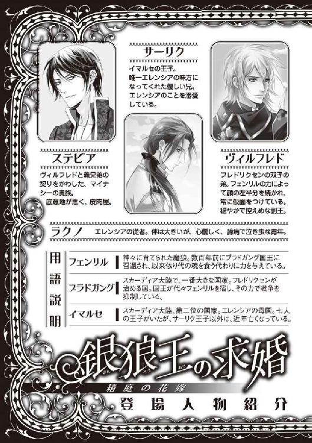
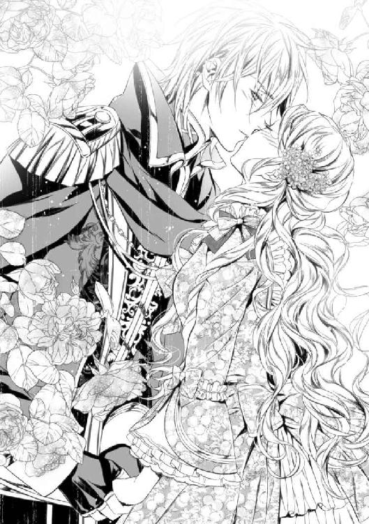

| 銀狼王の求婚: 1 箱庭の花嫁 (一迅社文庫アイリス) | |
| 小野上 明夜 | |
| (2012) | |

イラストレーション ◆ Ciel
銀狼王の求婚 箱庭の花嫁
あれはもう、七年ほども前のこと。恥ずかしくて、情けなくて悲しくて、消えてしまいたかったことをよく覚えている。
「どっちに行った？」
「馬鹿だな、あんな格好で逃げ出すなんて」
普段は静謐に満たされた白い王宮には相応しくない、どたどたと忙しない足音と嘲笑交じりの少年たちの声が遠ざかっていく。
まだ体の震えは収まっていないが、ひとまず危機は去ったようだ。蜂蜜色の髪をした愛らしい少女は、物陰に隠れてほっと息を吐く。
少女を庇うように立った銀髪の少年も、周囲が静かになったのを確かめてから冷静につぶやいた。
「行ったようだな」
少女より五つほど年長ではあるが、それでも十代前半のはずなのに、やけに大人びた少年だった。妹の服を面白半分に脱がせようとするような、子供じみた兄たちにいじめられた後はなおさらそう思えた。
「あ、ありが、とう、ござい、ます......あの、これ......」
引き裂かれたドレスの前をかき合わせながら、少女は肩にかけられていたマントをおずおずと銀髪の少年に差し出した。彼は兄たちから逃がしてくれただけでなく、質の良いなめし革でできたそれを、惜しげもなく初対面の自分に貸し与えてくれたのだ。
よく見れば非常に怜悧な顔立ちの、美しい少年である。そうと認識した途端、余計に恥ずかしさを覚えた少女を紺碧の瞳で一瞥して、
「それはあなたに差し上げる。部屋に戻るためには、身を隠すものが必要だろう？ では、俺はこれで失礼する」
貸し与えたマントの受け取りを拒否した少年は、そのまま踵を返そうとする。
淡々と去っていくその背に、少女は反射的にすがった。少々舌っ足らずな甲高い声で、必死になって叫ぶ。
「待って、行かないで!! あなたはよその国の人でしょう？ ......部屋になんか戻りたくない。逃げたい。どこか遠くに行きたいの。お願い、連れて行って!!」
取りすがられ、振り向いた少年の顔には驚きよりもいら立ちのほうが濃かった。
「......あなたはこの国の姫だろう？ 馬鹿なことを言うな」
無表情から一転した少年の表情は、取りつく島もないほど冷たく厳しい。毎日のように兄たちにいじめられてきたせいで、男性恐怖症の気のある少女はたちまち竦み上がった。
しかし、怯えながらも、少女は懸命に言い返した。
「す、好きでお姫様になんか生まれたんじゃないもの!! 戦乙女でも、運命の女神でもない......ただの『お姫様』なんて、嫌なことばかり......!! 王子様も王様も、大っ嫌い!!」
少年もまた、怯えて震えるばかりだった少女の激しい感情の吐露にびっくりした様子だ。一瞬返す言葉に詰まったが、やがてひどく厳粛な声音でこう語り始めた。
「人間にはそれぞれ、生まれながらに背負った運命、役割というものがある。歩く道を定められているのは、『お姫様』ばかりではない」
苦しげに眉根を寄せ、静かに紡がれる言葉は、自分に言い聞かせているようだった。
「今いる場所で足を踏ん張ってがんばれない奴は、どうせどこに行っても逃げようとするんだ。大神オーディンは、戦士の神。勝利を目指す者には必ず力を貸してくれる」
この時の少女には、よく意味の分からない言い回しも多かった。だが正論であることだけは理解したので、返す言葉もなくうつむいてしまう。
「お姫様にはお姫様の役割があるだろう。あなたはいつか有力な臣下や他国に嫁ぎ、この国を繁栄させなければならない」
「......分かってます。それが嫌な訳じゃないの。ここから逃げ出せるなら......いっそ早く、お嫁に行きたいぐらい」
自国を押しも押されもしない大国にしようと、後継者である息子たちに過酷な競争を強いてきた父。そんな父から受ける抑圧を、そっくり妹姫に押しつけてくる兄たち。
他国の姫君がそれこそ父親ほども年の違う男や、顔も見たことのない男に嫁がされていることも知っているが、実兄たちより政略結婚相手のほうがましではと思えてならない。娘がひどい目に遭わされていることを知っているはずなのに、まるで無関心な父よりもきっと優しいだろう。
でもそれも、結婚してくれる相手がいたらの話だ。
「でも、こんなことをされたら、もうお嫁に行けないもの。だ、誰とも結婚してもらえないお姫様なんて......!!」
いかに相手が兄とはいえ、嫁入り前の身で男に肌をさらすなど姫君のすることではない。幼い少女の心は、ここから抜け出す最後の希望が断たれたという絶望でいっぱいだった。
ぼろぼろと泣きじゃくる少女を、少年はしばらく困惑した様子で見つめていた。そのまま何か考えていたが、やがてそっと腰を折り、静かな声でこう語りかけてきた。
「では、狼の妻になるか？」
「......え？」
「あなたがこの国のお姫様としてもう少しがんばってくれれば、いずれ俺が妃に迎えてやれるかもしれない」
「......!? も、もしかして、あなたは、ブラドガングの......フェンリル......？ 銀狼、王......？」
顔色を変え、怯えて身を引く少女から、少年も立ち上がって一歩下がった。
「......馬鹿なことを言ったな。悪かった」
無表情にひと言謝罪するなり、彼はまた踵を返そうとする。その刹那、冷たい瞳に走った切ない光に胸を突かれた気がした。
――恩人に向かって、自分はなんて態度を取ってしまったのだろう。
生まれながらに歩く道を定められた、生贄の王。彼もまた、望まない運命に苦しんでいる人なのに。
「ごめんなさい、ちょっとだけ怖いと思ったのは本当です。でも、構わないわ。なります。あなたのお嫁さんになります!! だってあなたは、私を助けてくれた優しい人だもの!!」
気がついたら少女はそう叫びながら、少年の腰に抱きついていた。
後ろにひっくり返りそうになりながら振り向いた少年の表情が、驚きから悲しい微笑みへと変わっていく。
「――あなたが結婚できる年になった時も、同じ気持ちでいてくれたらな。だから強く賢く、美しく育ってくれよ」
大人びた少年は、幼い誓いを頭から信じるには傷つきすぎていたのだろう。だがこの時の少女にはそこまでの心の機微は分からなかったので、ただ張りきってうなずいたのだ。
「はい、がんばります!!」
苦笑いした少年は、観念したように少女の手を握ってくれた。
「......あまり俺と一緒のところを見られないほうが、いいとは思うんだが......部屋までは送ろう。どっちだ？」
先ほどとは別の意味で、少女は部屋に戻りたくなかった。
彼との時間を、終わらせたくなかった。
吹雪に今にもなぎ倒されてしまいそうな寒村の隅に、目つきの悪い男たちに守られた馬車が数台停まっている。うち一台の中で、痛々しく手足を縛られた美少女が、見張りの男に懇願していた。
「おねがい、いたいの。すこぅしだけ、なわをゆるめて、ね？」
蜂蜜色の髪を長く伸ばした、華奢で小柄な、まるで愛らしいお人形のような姫君だ。
「......だめだ。立場が分かっているのか？ エレンシア姫。あなたは俺たちにさらわれた身なのだぞ」
スカーディア大陸第二の大国、イマルセ。その唯一の姫であるエレンシア・ヴァン・トーヒルドは、「わかってるわ」と真面目な顔でうなずいた。
十五歳という実年齢よりもいとけない容姿である上に、高い声と舌っ足らずなしゃべり方のため、ひどく幼く感じられる。他国へ嫁ぐ最中に拉致された、という緊迫した状況など、何も分かっていなさそうだ。
体つきは案外一人前なのにな、などと考えている見張りの心中も知らないのだろう。縛られた両手を揃えて差し出すと、澄んだ蒼い瞳を潤ませて頼んできた。
「あなたがやったなんて、だれにもいわないから。ね、おねがい。いたいの、ちがでてるの......」
雪と氷に閉ざされたスカーディア大陸の民の肌は、誰もが白い。その中でもこの姫君の肌は一際白く、きめ細やかで、それだけに縄に擦られて赤く裂けた傷は哀れを誘った。
「......まあ、確かに、これは縛りすぎだ。これでは......いや、では、少しだけな」
「ありがとう!! やさしいのね。あなたにたいしんオーディンのかごがありますように!!」
太陽よりも美しいとされる白妖精のように、姫君が微笑む。
「な、なに、大したことじゃない。なんだ、それほどきつくは縛っていないのに......よほどあんたの肌は柔らかいんだな」
見張りの男はつり込まれてやに下がってしまいそうになる自分を戒めつつ、少しだけ手首の縄を緩めてくれた。
「――足は平気か、お姫様。そっちも緩めてやろうか？」
花模様と魔除けのルーン文字が細やかに刺繍された、優美なドレスの足元に眼をやる兵士の息は心なしか荒い。
厳しい環境に置かれたスカーディアの民は、顔以外はほとんど隙間なく防寒具を着込んでいる。エレンシアもドレスの上からさらに、いささか古びたなめし革のマントを着けていた。
だからこそ親兄弟にもめったなことでは見せない、夫となる男しか触れられない足に、男はひどくそそられる。
馬車内にはもうひとり、縛り上げられた姫君の従者がいるが構うものか。体だけはやたらと大きいが、ひどく臆病でおまけに泣き虫で、拉致した段階で姫君より早く泣いた。姫君と別の馬車に入れようとしたらまた泣いた。今もすでに涙眼になっているぐらいだ。
第一、ほんのちょっと触るだけ。世間知らずの囚われのお姫様には、何をされたかも分からないに違いない。うまくいけば、もう少し楽しめるかもしれない。
しかし、下世話な妄想で鼻息を荒くした男が伸ばした手を、エレンシアは軽やかに避けた。思わぬ敏捷さをいぶかる前に、また白妖精の微笑みが輝く。
「ありがとう、やさしいのね。でもだいじょうぶ、あなたがおこられてしまうもの!!」
「あっ......、ああ、そうだな。じゃあ、また何かあったら言えよ。この吹雪がやんだら、すぐ出発だからな」
何を思い出したのか、ぶるっと肩を震わせた男はただの見張りに戻った。
一向にやむ様子を見せない吹雪に焦れたか、見張りの男が馬車の外に出て行く。
「来るんじゃねえ、ガキは家で寝てろ!!」
好奇心に駆られて近寄ってきた子供がいたらしい。柄の悪い叫びと、子供たちの悲鳴と悪態が遠ざかっていくが、扉が開かれた一瞬、エレンシアが外の光景を食い入るように見つめたことに気づかれた様子はなかった。
「――よーし、これでいつでも縄抜けできるわ」
お得意の「可愛いお姫様」作戦に引っかかったのは、さっきの見張りで三人目だ。かなり緩んだ縄を引いて確認しながら、エレンシアは満足そうに微笑んだ。
高い声に変化はなく、発音には若干舌っ足らずな部分が残っている。だがよく言えば可憐で愛らしく、悪く言えば頭の具合に不安を感じさせるような雰囲気は消え失せていた。
「姫様、大丈夫ですか......？ ご、ごめんなさい、俺、いつも何もできなくて......」
同じように縛られていた栗色の髪の男が、おどおどとエレンシアに話しかけてくる。乳兄弟であり、現在エレンシアが唯一心開ける相手である従者のラクノだ。
今ではすっかりエレンシアより大きくなったラクノだが、頼りなげな表情は出会った頃と何ひとつ変わっていない。だからエレンシアも、三歳年上の彼に性別を超えた親愛の情を寄せている。
「大丈夫よ、ラクノ。ここまで縄が緩んでいれば、私なら十分。知ってるでしょ？ 一の兄様に納屋に閉じこめられた時は、こんなに優しい縛り方じゃなかったもの」
とぼけてみせるエレンシアを、ラクノは心配そうに見つめた。
「ですけど姫様、お願いですからこれ以上の無茶はなさらないでください。やっと大好きな人と結婚できるのに、そんな傷をわざわざ......うう、見てるだけで痛そうです......」
エレンシアの手首に走る傷跡は、縛り上げられたためにできたものではない。見張りの憐れみを誘い、縄を緩めてもらうため、自ら縄に肌を擦りつけて作ったものだ。
「俺は殴られそうになりましたけど、あいつらに姫様を害する気はないみたいです。焦る気持ちは分かりますけど、今しばらくはおとなしくされていたほうが......ただでさえ姫様は、男受けが良すぎるんですから」
華奢で可憐な、絵に描いたような美姫。小鳥がさえずるような高い声と、舌っ足らずで若干甘い発音が、ますます彼女を愛らしくみせる。
かつてエレンシアは、己の容姿と声は男の嗜虐心を煽るだけと嫌悪していた。剣を習おうとして兄たちに嘲笑を浴びせられたり、声質を変えようと喉を傷つけてラクノに大泣きされたりしたが、今では自分の最も有効な武器として活用している。
葛藤もあったけれど、全ては「今いる場所で足を踏ん張ってがんば」るためだ。この程度の傷にも、見張りの男に不愉快な眼で見られるのにも耐えられる。
そう、耐えられる。ドレスの下の足がいまだ鳥肌立っているのは寒さのせいではないけれど、我慢できる。
「これぐらい平気よ。それより、今が逃げる絶好の機会じゃないかしら」
「......姫様......」
勇ましい発言に、ラクノが一層不安そうな顔をする。
「確かに、まだしばらくは動かない様子ですからね。村の中に逃げ込むことは可能かもしれませんが、村人たちも誘拐犯の仲間かもしれませんよ？」
殴られる想像でもしたのか、ラクノは早くも涙眼になっている。
「そうかしら？ なら、この吹雪よ。もっと村の中に入ってもいいと思うの。たぶん脅すか、お金をあげて、一時的な避難場所にしているだけよ。村人たちは不審な一団をよく思っていない、誘拐犯は銀狼王の花嫁をさらったことを知られる訳にはいかない、そんなところね」
先ほど一瞬見えた外の光景を思い出しながら、エレンシアは答えた。誘拐犯の一団は村の本当に隅に追いやられており、見張りらしき村人たちがこちらを遠巻きにしているのがかろうじて見えたのだ。
「もちろん、村の人たちが私たちを助けてくれる保証はないわ。けれど、誘拐犯たちがいつまで私たちを丁重に扱ってくれるか分からない」
瞬間、見張りの男の舐めるような視線を思い出してしまい、エレンシアは言葉を切って黙り込んだ。
――お前、本当に女だよな？
――なにせ前例があるからな。証拠を見せてみろよ。
はやす兄たちの声が、顔が、心と体を縛り付ける。エレンシアを、ただの「お姫様」に変えていく。
「......だ、大丈夫です、姫様」
ラクノが、震える拳をぎゅっと握った。力の象徴のような大きな拳に身震いし、後ずさりしかけたエレンシアに気づいていないらしく、真剣な表情で宣言する。
「またさっきの男が、姫様に変なことをしようとしたら......、俺が、身代わりになります!!」
「......殴りかかる、と言わないところがあなたらしいわね。でもありがとう、ラクノ」
無理だろうなと思いながら、エレンシアはほとんど妹を見る姉の眼をして優しく受け流した。同時にほんの少しだけ、ラクノまでも怖い、と思ったことを反省する。
「けれど、他の人は全員殺されてしまったんだし......、油断は禁物よ」
祖国イマルセ側の兵士も、嫁ぎ先のブラドガングから遣わされた兵士も、二日前に襲撃を受けた際全て殺されてしまったのだ。幸福の絶頂から一転、またしても絶望の淵に突き落とされた瞬間を思い出すと背筋が冷たくなる。
だがもう、泣いて逃げ回るだけの「お姫様」は卒業したはず。古ぼけたなめし革のマントを、大切な初恋の思い出の端をぎゅっと握って、エレンシアは宣言した。
「七年待ったわ。やっと、幸せになれるんだもの。私は諦めない。絶対に絶対に、フレドリクセン様の花嫁になるんだから!!」
長じるにつれ、彼とだけは結ばれることはないと諦めざるを得なかった初恋の王子様。それが七年の時を経て、求婚してくれたのだ。
この七年、本当にいろいろなことがあった。だがそれも、あの銀髪の少年と結ばれるための前奏だったのだと思えば、全て水に流せる。
「ところでラクノこそ、私よりひどい傷になっているじゃない。待って、絶対にあなたも一緒に逃げるんだから、少し緩めておかないと......、きゃあっ!?」
「ひ、姫様!!」
突然馬車全体が激しく揺れ、半泣きになったラクノが慌ててエレンシアに抱きついてきた。危うくそのことに悲鳴を上げそうになったが、状況の変化に気づき、機敏な栗鼠のようなしぐさであたりに目を配る。
吹雪がやみ次第発つために、馬車に繋がれっぱなしだった馬が急に動いたのが揺れの原因だ。臆病な馬のいななきに混じり、誘拐犯たちの動揺した声が聞こえてくる。
「まずいぞ、ブラドガングの兵士だ!!」
やがて揺れも収まった馬車の中で、エレンシアとラクノはひたすらに外の様子をうかがっていた。
二人を束縛する縄はすでに外した。誘拐犯たちが駆けつけてくる様子はないが、この状況ではうかつに逃げ出すこともできない。
響く剣戟、断末魔の声。切れ切れに聞こえるのは「逃げろ」「助けてくれ」「フェンリルが来る」。
「姫様、危ないです！ 外を見るなと言われていますし、矢でも飛んできたら......!!」
厳重に目張りされている窓に近づき、目張りの端を剥がし始めたエレンシアをラクノが慌てて止めた。
「もう縄抜けまでしているんですもの。弾みで破れた、とでもなんとでも言えるわ。......それより......」
そっと覗き込んだ窓の外に見える戦場の悲惨さは、吹雪に白く霞んでいても十二分に分かる。もつれ合う黒い影の片方がいきなり動かなくなったかと思えば、次の瞬間もう片方も別の影に打ち倒される。時にはぱっと、赤い色が風に舞い散る。
二度目とはいえ、まだまだ慣れない実戦の恐怖に震えながらも、その一方でエレンシアの胸は高鳴り続けていた。
やっぱり来てくれたのだ。
「姫様、危ないですって、お願いですからもう少し様子を」
矢を警戒し、床を這うようにして扉の側に近づいたエレンシアを、ラクノが咎めた。
「分かっているわ。でも、だんだん音も聞こえなくなってきたし......、きゃっ!?」
斜めに歪んでいた馬車の戸が、嫌な音を立てながら開く。
もしやの思いに一際強く脈打った心臓が、次の瞬間動きを止めた。そこにいたのは、つい先ほどエレンシアに好色な視線を向けた、あの見張りの男だった。
「来い!!」
血走った眼をした男の腕が、エレンシアを問答無用で引きずり上げる。恐怖と嫌悪感に全身総毛立った瞬間、いきなり吹雪がやんだ。
「え？」
驚く暇もなく、声ならぬ声が直接、頭の中に鳴り響く。
『汚い手で、俺の花嫁に触るな』
同時に見張りの男の絶叫が響き、何かに抗うようにめちゃくちゃに動いた手が馬車の外にエレンシアを放り出した。
「きゃあッ!!」
「ひ、姫様ッ......!?」
泣きそうなラクノの悲鳴もよく聞こえないまま、エレンシアは降り積もった雪の上に投げ出される。幸いに柔らかな新雪の上だったので怪我はしなかったが、たとえ凍り付いた地面に落とされていたとしても、痛みは感じなかっただろう。
長く尾を引く狼の遠吠え。力持つその声が放つ衝撃波が吹雪を吹き飛ばし、見張りの男を、ラクノを、エレンシアを打ち倒したのだ。
内臓を直接鞭打たれたような、曰く言い難い衝撃の影響は深かった。見た目よりかなり耐久力があることがひそかな自慢だったのに、なかなか立ち上がることができない。
「う、う......っ......」
声もなく身を震わせるエレンシアの肩に、誰かが遠慮がちに触れた。
「大丈夫ですか、姫。ああ、よかった、生きていらしたのですね......！」
「......!? あ、あなたは」
知らない男の手の感触におののき、弾かれたように起き上がったエレンシアの眼を銀と金の光が射た。
すぐ側にいたのは、二十歳を幾つか過ぎた年の、青みがかった銀髪の美青年だ。端正な顔立ちも、切れ長の紺碧の瞳も、初恋の王子様が成長した姿に間違いない――顔の右半分は。
しかし左半分は――鈍い金色の、眼と鼻の部分にだけ切れ込みのある無機質な仮面に覆われていた。
「あなたは、フレドリクセン、様......？」
混乱するエレンシアの眼が、別の男の影を捕らえた。そして彼女は、さらなる混乱に見舞われた。
二十歳を幾つか過ぎた年の、青みがかった銀髪の美青年。
端正な顔立ち、切れ長の紺碧の瞳。高い身長、広い肩幅。ルーン文字と踊る獣が複雑に刺繍された長衣の裾を翻し、死体が転がる雪原を悠々と歩いてくる堂々とした佇まい。
どう見ても、初恋の王子様が成長した姿に間違いない。
「......フレドリクセン様が、二人......？」
唖然としたまま、二人を交互に見比べていたエレンシアの耳に遠雷のような狼のうなり声が届いた。途端に仮面の青年が短くうめき、その場に膝を突く。
「ぐっ......!?」
苦悶する彼の顔を、同じ顔をした男が蔑むように見つめている。
「下がれ、ヴィル。俺より先に我が花嫁に触れるなど、少しはわきまえろ」
「......は、申し訳ありません、兄上......」
従順に応じ、仮面の青年は言われたとおりに数歩下がって雪の中でひざまずいた。気がつけば銀髪の青年たちの周囲には、目元を覆うマスクと一体化した古風な兜を着けた、ブラドガングの兵士たちが大勢集まっている。
全く事態が分からず、唖然としているエレンシアを、懐かしい紺碧の瞳が冷たく見下ろしている。
「久しぶりだな、エレンシア、我が生贄の花嫁。俺がフレドリクセン・フォン・ヴァーサ。ブラドガングの国王にして、フェンリルの容れ物だ」
七年の時を経て再会した初恋の王子様は、乾いた傲慢な声でそう名乗った。
始まりは数百年の昔、ヴァイキングに代表される戦士の時代。スカーディア大陸全土が、いつ果てるとも知れぬ戦乱のただ中にあった頃の話だ。
終わりなき戦争に終止符を打つ。その崇高なる目的のため、イマルセと国境を接する大国ブラドガングの王は、己を依り代としてとある怪物を喚び出した。
いずれ訪れる神々の黄昏にて大神オーディンを飲み込むとされる、魔狼フェンリル。神々に育てられた恐ろしい怪物の力により、乱世は収束に向かった。フェンリルを宿したブラドガング王に、ひざまずく以外の選択は許されなかったからだ。
それから数百年。水面下での小競り合いは絶えないが、大陸全土を巻き込むような戦争は起こっていない。代々のブラドガング王が今でもフェンリルをその身に宿し、大陸中に睨みを利かせているからである。
しかし、人の手が強制した奇跡には代償がつきもの。
人にあらざる力を宿したブラドガングの王は、魔狼に魂を食い尽くされる恐怖と戦い続けている。
自らフェンリルを宿した王と違い、彼の息子や孫たちは否応なく課せられた運命を呪った。王家の血に食い込んだ狼の力を消すことは最早できず、仮にそれに成功したとしても、待っているのはかつての大戦の再来だろう。
平和のために捧げられた生贄の王。非情な定めに生まれついた王たちの多くが、傲慢かつ冷酷な性格に変貌していくのも無理からぬこと。
だからブラドガング王との結婚とは、生贄の王に捧げられる供物となり、次の狼の依り代を産むということなのだ。
真っ白になった頭の中を、今さらの知識が猛烈な勢いで流れていく。
そうだ、だからすぐ上の兄よりフレドリクセンからの求婚について聞かされた時、エレンシアは泣いた。本当は嬉し涙だったが、兄の眼をごまかすために悲しんでみせる必要があった。
実際は降って湧いた奇跡に狂喜乱舞し、ラクノに「姫様の本物の笑顔を、久しぶりに見ました」と笑われたぐらいだった。当たり前だ。叶わぬ夢と諦めて、せめて「今いる場所で足を踏ん張ってがんば」ろうと、決意を固めた後のことだったのだから。
「なんだ、まだ生きているのか。手加減をしすぎたようだな」
あの日静かな情熱を秘め、理想を語った唇が、つまらなさそうな息を吐く。
一瞬自分に言われたのかと思ったが、違った。フレドリクセンの眼は、エレンシアから少し離れた場所を見ている。
ぴたりとやんでいたはずの雪が舞い上がった。狼の遠吠えに打ち倒された見張りの男が、積雪を巻き上げながら起き上がったのだ。
寒さと恐怖に震える手が、救いを求めるように伸びてくる。
「ひっ!?」
硬直していたエレンシアは、とっさにかわそうとしたが間に合わない。小柄な姫君を羽交い締めにした男は、彼女を盾にしたままじりじりと後ずさる。
「ち、近寄るな、この女の首をへし折るぞ!!」
怯えきった男の腕の中で、エレンシアも身を強張らせていた。
恐怖に駆られた男がほんの少し力を込めれば、自分の首など簡単に折られてしまうだろう。耐久力はそこそこあるが、華奢で脆い作りの肉体を変えるほどには修練を積めなかった。
そして何より、背に密着した「男」が怖い。
国を強くすることしか考えていない父、妹姫を憂さ晴らしの対象としか思っていない兄たち。男とは常に、エレンシアにとっては恐ろしいけだものでしかなかった。
すぐ上の兄だけは、優しかった。だが長じるにつれ、父や上の兄たちとは別種の恐ろしさをもたらす存在になった。ラクノは一緒にいると心安らかではあるが、まるで兄妹、いや姉妹のように育ったからであり、「男」の範疇からは外れている。
そんなエレンシアにとっての、唯一の例外。熱い胸の高鳴りを教えてくれた王子様が、さも下らなさそうに息を吐く。
「......全く、どいつもこいつも......」
婚約者の生命の危機を前にしているというのに、フレドリクセンには特に慌てている様子はない。彼はただ単に、眼の前の状況にいら立っているようだった。
「それは俺の花嫁だ。俺に捧げられた生贄だ。俺以外の誰にも、傷つける権利などないということが分からんのか!!」
物理的な力を持つ叫びが、弩のように宙を走った。
「きゃあっ......!!」
「ぐわッ!!」
空気を引き裂く衝撃の余波を受け、エレンシアも全身がびりびりと震えたが、直撃を受けた男は彼女を放り出して後ろ向きにその場に倒れた。
解放され、慌てて横に飛び退いたエレンシアと入れ替わるように、フレドリクセンが一歩進み出る。それに気づいた男は、甲高い悲鳴を上げると必死になって尻で後ずさった。
「助、け」
割れた額からだらだらと血を流しながら、男は涙眼になって懇願を始める。さらに一歩、フレドリクセンが進み出ると、腰に下げていた剣を自ら投げ捨てさえした。
「助けて、ください。殺さないで。頼まれた、だけなんです。話を」
「必要ない。大体の見当はついている」
にべもなく切って捨てたフレドリクセンの眼が、見慣れた輝きを宿したことにエレンシアは気づいた。
父が、兄が、大嫌いな男たちが、他者を踏みつける時と同じ眼だ。残酷な愉悦に酔った、支配者の瞳。
「銀狼王の求婚にけちをつけてくれたんだ。それ相応の報いを受ける覚悟はできているな？」
薄い唇にうっすらと浮かんだ笑みを見た瞬間、命乞いなど無駄だと悟ったのだろう。残った力を振り絞り、男は立ち上がって駆け出した。
対するフレドリクセンは、その場からまるで動かない。だが、薄い笑みはその唇に残っている。
「踊れ」
含み笑いを浮かべて彼がつぶやいた瞬間、大気が震えた。音のない咆吼が、空を駆ける。
「ぎゃっ......!?」
すでに数十歩の距離を駆けていた男が、突然悲鳴を上げて転倒した。雪と血が空を舞う。
「踊れ」
倒れた男が、何かに引っ張られたように起き上がった、いや起き上がらされた。見えないあぎとが強くその腕に噛みつき、強制的に引き上げたのだ。
またしても悲鳴が響き、雪と血と肉片が空を舞った。震えるエレンシアの眼は、狼の群が喜々として獲物に襲いかかる姿を幻視していた。
「そら、どうした、踊れ、もっと踊れ!!」
「助け、痛い、助け、助けて、助けてくれーッ!!」
激しく抵抗する男の姿は、巻き上がった雪に隠されてよく見えない。白い紗幕の向こうで繰り広げられる死の踊りを、フレドリクセンは爛々と目を光らせて煽り立てる。
「踊れ、踊れ!! はは、見ろ、うまいものじゃないか、もっと踊れ、踊れ、踊れ!!」
哄笑する婚約者を呆然と眺めていたエレンシアの眼は、なぜかフレドリクセンの両手首にある奇妙な腕輪に吸い寄せられた。
一見ただの絹紐のようにも見えるが、鉱物の硬さを持っているようだ。表面は細かなルーン文字でびっしりと覆われていた。
色は黒？ 青？ それとも白だろうか。まるで光を受けたトパーズのように、激しく明滅しながらそのたびに違う色を発しているので、判断がつかない。
「兄上、もうおやめください!!」
たまりかねたように叫んだのは、仮面をつけた銀髪の青年だっった。
「兄上のお体に障りますし、それに義姉上も見ていらっしゃるのですよ......!!」
彼の指摘で、エレンシアはフレドリクセンがいつしか苦しげに眉根を寄せていたことに気づいた。執拗に「踊れ」と繰り返していた唇は青ざめ、両手首の腕輪は目眩がしそうな速度で明滅している。
だがフレドリクセンは、進言内容はもちろんのこと、彼にそれを言われたことが勘に障ったようである。
「黙れ、ヴィル。ぬくぬくと生きている身で、俺に指図をするな!!」
ばちっ、と激しい音がして火花が視界を焼いた。エレンシアは思わず眼を閉じ、ヴィルと呼ばれた仮面の青年は額を押さえて雪の上に転がった。
おそるおそる眼を見開くと、乱れた銀髪を軽く払った銀狼王がこちらを見て微笑んでいる。眉間の皺こそ解けているものの、色の悪い唇に浮かんだ笑みはぞっとするほどきれいだ。
「――ああ、本当に美しく育ってくれたな、エレンシア。一時はすでに殺された、との報もあったが、間違いでよかった。心配していたんだぞ」
甘い言葉、優しげな微笑み。そこだけは、夢見ていたとおり。
「かわいそうに、こんな傷をつけられて」
暖かい大きな手が、エレンシアの血のにじんだ手首にそっと触れる。途端に大きく肩を跳ねさせた彼女を見て、フレドリクセンは低く喉を鳴らした。
「だが、もう大丈夫だ。あなたを傷つけるような奴は、みんな俺が殺してやる」
フレドリクセンが言うとおり、幻の狼の群に襲われていた男はもうぴくりとも動かない。仮面の美青年も、荒い息を吐きながらいまだ地に伏している。
「だから、これからあなたを傷つけるのは俺だけだ。本当に、生きていてくれてよかった。死体で遊ぶ趣味はないからな。ちゃんと反応してくれる相手でないと、つまらない」
うっとりとそうささやくと、エレンシアの肩を覆ったマントを一瞥した。
「そのマントを、大切にしてくれていたようだな。だが、そんな薄汚いものはもう捨ててしまえ。あの時はとにかく、今のあなたには不要だろう？」
思い出のマントについて、特に説明もなしに触れてくる。やっぱり彼が七年前の少年なのだ、間違いない。
あの時の少年が、「捨ててしまえ」と言っているのだ。エレンシアがどんな思いでこれを身に着けてきたのか、きっと分かっているはずなのに。
「本当に、ふれ、ど、りくせん、さ、ま......？」
意図せず、発音が乱れた。瀕死の小動物のようにあえぎながら名を呼ぶエレンシアを、フレドリクセンは残酷な愛おしさを込めて見つめている。
「震えているのか？ かわいそうに。――この程度のことで震えているのでは、この先もたないぞ」
くすくすと笑っていたフレドリクセンの眼が、急に鋭くなった。
「姫様......!!」
ようやく衝撃から回復したのか、馬車の中からラクノが駆けてきた。
「ひ、姫様、ご無事でよかった!! ああ、それにやはり、姫様の王子様が来てくださったのですね!!」
状況が完全には分かっていないラクノからしてみれば、誘拐犯はいずこかに去り、それを行ったのは主が繰り返し語り続けていた初恋の王子様なのだ。喜ぶのも当然だろう。
私だって本当は、喜びいっぱいの笑顔でフレドリクセン様に抱きつかなくてはいけないの、とエレンシアは思った。彼が助けに来てくれたのは事実なのだから、「可愛らしいお姫様」のものではない、本物の笑顔を見てもらうべき場面だ。
でも――
「なんだその男は」
冷え冷えとしたつぶやきに、ラクノの顔が強ばる。状況が分かっていなくても、フレドリクセンを取り巻く冷酷な空気は分かったのだろう。
「か、彼は私の従者で、ラクノと申します!!」
嫌な予感がして、エレンシアは反射的に婚約者と従者の間に割って入っていた。
「彼を、つ、連れて参りますとは、お伝えてしていたかと、存じます」
緊張のため、高い声はますます高くうわずる。その分必死さも伝わっているはずだが、フレドリクセンは眉ひとつ動かさない。
「従者を連れてくるとは聞いている。だが、俺の眼の前に連れてくるとは聞いていない。しかも男だと？ イマルセ王は王子たちに玉座を争わせることばかりに熱心で、姫に興味がないとは聞いていたが、結婚前の姫君に若い男を付けるとは何事だ」
睨みつけられ、エレンシアはすくみ上がる。ラクノは妹のようなもので、と説明したいが、喉が干上がって言葉が出てこない。
北国の人間らしく、フレドリクセンは長身で体格もいい。小柄で華奢で、意図せずとも子供っぽく見られがちなエレンシアと比べると完全に大人と子供だ。
ラクノも体躯だけならフレドリクセン以上なのだが、すでに完全に竦み上がっている。平伏して許しを乞うことさえ、思いつけない様子だった。
庇ってあげたいのに、エレンシアも動けない。
初恋の王子様相手だからと、すっかり忘れていた男性恐怖症が顔を出し始めた。体格差を逆に利用し、愛らしく甘えてみせるような余裕がない。
そもそもブラドガングへは、そんなことをしに来たのではない。
「お姫様」ぶりっこで身を守ってきたのは、敵だらけの王宮でしたたかに生き延びるためだった。
長い夢が叶い、やっと会えたのだ。フレドリクセンには、ありのままの自分を知ってほしいと思っていた。
ある意味、今の姿がありのままではあるが。――七年前と何も変わらない、泣きながら逃げるしかなかったあの日のように......
「兄上、差し出がましいことを申し上げますが、従者のひとりぐらいはお許しくださるほうが良いかと存じます!!」
いつしか真っ青になっていたエレンシアを庇うように、仮面の青年が仲裁に入ってくる。
フレドリクセンを「兄」と呼ぶということは、普通に考えれば弟だろう。しかし、ブラドガングについてかなり熱心に調べていたはずのエレンシアも、彼の存在は初耳だった。
「か、彼を連れて行かないと――私が姫のお着替えを手伝うことになってしまいますよ!? 触れるどころではないですよ、よろしいのですか、それでも!?」
ひときわ冷たい空気が場を流れた。
内容的には下世話で、言い方によってはぞっと総毛立ったことだろう。だが男性恐怖症のエレンシアも、いかにも生真面目そうな彼が目一杯引きつった声で叫んだ冗談には、嫌悪感よりある種の同情を感じてしまった。
たぶんフレドリクセンも似たような気持ちになったのだろう。ややあって、毒気を抜かれたように鼻を鳴らす。
「――俺以外の男がエレンシアの着替えを手伝う状況は、変わらん気もするが......まあよかろう。そいつに姫君に手を出す度胸があるとも思えん」
仮面の青年と、その陰に必死に隠れようとしているラクノを、冷めた眼が一瞥した。
「お前のつまらん冗談を、これ以上聞かされてもたまらん。それに、そんなでくのぼうごときに、苦しい思いをしてフェンリルを使う必要はない。懲りない連中が、まだいるようだからな!!」
白けた表情から一転、ぎっと眼を剥いたフレドリクセンの全身から、またしても声なき声が走った。
吹雪がやんだことで広くなった視界のそこかしこに佇む氷河の忘れ物、エスカー。ブラドガング特有の、氷河が運んだ堆積物でできた細長い丘が身震いし、上に積もった雪を四方に振り落としていく。
一瞬唖然としたエレンシアだが、なぜそんなことが起こったのかはすぐ分かった。舞い上がる雪にすぐ消されてしまったが、揺らめく炎が垣間見えたのだ。
伝説上のフェンリルが、口から常に火を噴いていることをエレンシアは思い出した。フレドリクセンが放った炎が、エスカーの上に積もった雪を部分的に溶かして雪崩を誘発したのだろう。
頭上から降り注ぐ雪崩に、誘拐犯の残党と思しき男たちがあっという間に呑み込まれていく。おそらくはエスカーの陰から、襲撃の機会をうかがっていたのだと思われた。
「......ちっ」
急に、フレドリクセンが舌打ちした。眉間の皺が深くなったと思いきや、狼の咆吼が再び中空を駆け、雪崩の一部が内部から爆ぜるように飛び散った。
かなり大きな力を使ったのだろう。フレドリクセンが額に手を当て大きな息を吐き、同時に何人かの絶叫があたりに鳴り響く。
その中には、幼い子供の甲高い悲鳴も混じっていた。
――まさか、今、子供を？
エレンシアは愕然とした。だが、それは杞憂だった。
雪まみれの老人と数人の子供が、覚束ない足取りで近づいてくる。
無言で立ちつくすフレドリクセンを見つけるなり、老人は顔面蒼白になって雪原に伏した。
「銀狼王陛下、あ、ありがとうございました。そして、誠に申し訳ありません......!!」
両脇に抱えられた子供たちが苦しそうだが、老人は矢継ぎ早にしゃべり続ける。まるで子供たちに、ひと言もしゃべらせまいとするかのように。
「本当に申し訳ありません。ですが私たちは脅されて、一時的に場所を貸しただけなのです。あなたの花嫁をさらうなど......!! 奴らがそんな大それたことを企んでいたとは、知らなかったんです。本当に本当に、知らなかったんです......!!」
どうやら、誘拐犯たちが休憩場所に選んだ村の人間のようだ。言っている内容もだが、その腕に抱かれ、ぐずぐずと鼻を鳴らしている少年の声に聞き覚えがある。見張りの男に追い払われ、逃げていった子供たちのひとりだろう。
好奇心も露わに、見慣れぬ馬車に近寄ってきたような度胸のある子供たちだ。騒ぎに気づいて外に出て、慌てて追いかけてきた老人ごとさっきの雪崩に巻き込まれかけた――そんなところだろうと、エレンシアは判断した。
「その上に、馬鹿な行いをした我らを助けてくださるなど......！ ありがたいことです、銀狼王陛下のご温情は我らの村で永遠に語り継がれるでしょう......!!」
ぶるぶると震えながら一息にまくし立てた老人の腕の中で、ひとりの子供が小さくつぶやいた。
「怖いよ、おじいちゃん......、もう、帰ろうよ」
怯えたその眼は、明らかに自分たちを救った男を意識している。フレドリクセンがぴくりと片眉を上げ、老人の顔が雪のように白くなった。
「そ、そうだな、怖かったな、分かったから少し黙りなさい」
急いで老人がその子の口をふさいでも、他の子供たちが堰を切ったように恐怖を訴え始める。
「いきなり雪が爆発したのは、この人の力なんでしょう？ 俺、さっき絶対死んだと思った」
「村の魔術師のおじさんなんか、ちょっと火を出せるだけなのに......、まだ、吐き気がするし......怖いよ」
「弓持ったおじさん、足が、と、取れてたもの。怖いよ......」
全てを押し流す雪崩を吹き飛ばし、フレドリクセンは老人と子供たちを救った。一緒に誘拐犯の残党まで吹き飛ばしたようだが、それは間違いない。
命の恩人に対し、子供たちの言いぐさはあまりにも身勝手だ。それも間違いない。
けれど幼く正直な眼も、怯えた老人の眼も、言葉に出す出さないの違いはあれど、同じことを訴えている。誘拐犯たちでも、雪崩でもなく、自分たちを助けてくれたあまりにも強大な力が恐ろしいと。
そんな彼らを見下ろすフレドリクセンの顔からは、いっさいの表情が消えていた。
「――お前たちをできるだけ傷つけないよう、フェンリルの力を制御することがどれだけ大変だと思っている？」
深い疲労と怒りに満ちた声は、凍える吹雪よりなお冷たい。子供たちはたちまち黙り込み、ラクノは涙を浮かべてエレンシアの手を握り、老人は雪原に頭を埋める勢いで謝罪を始めた。
「陛下、どうぞお怒りをお収めください!! 年端も行かぬ子供の戯れ言です、後でよく言って聞かせますから......!! お叱りなら、どうぞこの老体に......!!」
決死の覚悟で訴える老人を、紺碧の瞳が冷ややかに見下ろした。望むところだと、その眼に書いてある。
怯えたラクノにぎゅうぎゅうと手を握られながら息を呑むエレンシアだったが、次の瞬間、泣き出しそうな子供の声が高く響いた。
「お、おじいちゃんを、いじめるなッ......!!」
「怖い」と泣いていたひとりの子供が、両手を広げてフレドリクセンと老人の間に立ちはだかる。精一杯の虚勢を張り、相手をきつく睨みつける姿を見て、エレンシアは青くなった。
大人が子供に、男が女に、強者が弱者に情けをかけるのは、優越感を心地よく刺激された時のみ。先に腹を見せて寝転がれば、蹴られずに済む。
もちろんエレンシアだって、世の中にそんな人間ばかりではないことは理解している。父や兄たちはとにかく、フレドリクセンは違うと――そう思いたいけれど。
「フレドリクセン様......」
こうなったら私が手本を見せよう、と鍛えられた表情筋に活を入れたところで、フレドリクセンが再び口を開いた。
「......いじめる？」
乾いた声で繰り返された途端、勇敢な子供の肩がびくりと大きく跳ねた。だがまたフェンリルの力を振るう気かと思いきや、色の悪い唇にひらめいた切なげな微笑に、エレンシアの眼は吸い寄せられた。
「馬鹿を言うな。お前もその老人も、俺が守るべき国民なのだぞ」
つぶやく表情は、エレンシアが何度も何度も繰り返し脳裏に描いたもの。七年前、意味もよく分からないまま「あなたのお嫁さんになります」と訴えたエレンシアに向けられた、悲しい少年のものだった。
しかし懐かしい表情を見せてくれたのも束の間、フレドリクセンはかっと眼を剥いて一喝した。
「貴様らのような恩知らずでも、身を削って救う銀狼王の運命に感謝するがいい。さあ、俺が拾ってやった命を持って、さっさと失せろ!!」
空間に火花が散り、立ちはだかる子供のすぐ横の雪が爆ぜる。
老人はぎゃっと悲鳴を上げて飛び上がり、泣き出した子供たちを抱えて必死に逃げていった。
雪が、再びあたりを舞い始めた。
老人と子供たちの姿をじっと眼で追っていたフレドリクセンが、ゆっくりとエレンシアたちを振り向く。疲労の翳りがより濃くなった顔に、残酷な笑みが浮かんでいた。
「余分な時間を取ったな。行くぞ、ヴィル。ふざけた真似をしてくれたロナンディスの連中に、もう少し仕置きをくれてやらねばならん」
ロナンディスとはスカーディア大陸の東にある大国で、昔からこの大陸全土を我がものとせんと狙っている。フェンリルを必要とするほどにかつての戦乱が長引いたのも、この国が執拗に横槍を入れていたせいでもあるという。
ならば、自分をさらったのはロナンディスの人間だったのだろうか？
聞きたいことはたくさんある。でも、喉の奥があまりにもたくさんの感情に塞がれてしまっていて、何も出てこない。
見かねたように、仮面の青年が口を開いた。
「......兄上、あの、ほ、本当に......お疲れ様です。ですが......、少し、お休みを、その、ひどくお疲れのご様子で......」
だがフレドリクセンは、その手を邪険に払いのけて叫ぶ。
「黙れヴィル、賢しい口をきくな！ お前も知っているだろう。民と国を守るために身を削る、これが俺の責務、俺の役割、俺の運命だ!!」
――人間にはそれぞれ、生まれながらに背負った運命、役割というものがある。
あの時の少年と同じ意味合いでいて、微妙に違う言い回し。七年の間に彼が得たものと、失ったものを思わせる。
「怖い」と繰り返す子供たち。平伏しながらも、恐怖を隠せずにいた老人。あんな声が、あんな眼が、あんな態度が、その身に宿したフェンリル以上にフレドリクセンの魂を削り取っていったのだろう。
哀れな生贄の王。でも――
固まっているエレンシアに、一度は去ろうとしていたフレドリクセンが思い出したように声をかけてきた。
「そうだエレンシア、あなたも来るか」
「え？」
「一度城に入ってしまえば、共に出歩ける機会はなくなるだろうからな。贈与金代わりに、あなたを拉致した不届き者どもの首を好きなだけ贈ろう」
二重の意味で、フレドリクセンの冗談は弟以上に笑えない。そんな血生臭い贈り物などほしくないし、彼のほうが倒れてしまいそうな顔色ではないか。
だがそれよりも、今の台詞には引っかかることがあった。
「共に......出歩ける機会は......なくなる？」
王と王妃の身ではおいそれと外出できないというような、単純な発言とは思えなかった。思わず繰り返したエレンシアに、フレドリクセンは冷ややかなため息をつく。
「なるほど、どうやらあなたはフェンリルについてよくご存じないようだ」
「！ いえっ、私はずっとずっと、あなたのことを知ろうとして」
反論しかけて、エレンシアは黙った。ヴィルと呼ばれた弟らしき青年のことだって、自分は知らなかったのだ。
「兄上、畏れながら......フェンリルの情報は制限しておりますし、それに義姉上は誘拐犯に何日も拉致され、つらい思いをされていたのです。これ以上の、その、流血は......」
ヴィル青年が、おそるおそる兄に進言する。また見えない狼の力が発動するのではないか、とエレンシアは怯えたが、フレドリクセンは「いいだろう」と横柄にうなずいた。
「せっかく迎えた花嫁だ、急ぐことはない。俺はあなたと末永く、仲良く暮らしていきたいと思っているのだからな？ 愛しいエレンシア」
花婿としては妥当すぎるほど妥当な台詞がその口から漏れた。ただしその瞳にあるのは、なぶるような酷薄な光だけだ。
「ではまた日を改めてな、可愛い我が花嫁。優しいあなたに免じて、ひとまずその男のことも許してやろう」
棒立ちのエレンシアに、フレドリクセンが別れの言葉をかける。ラクノを傷つけないのはあくまでエレンシアのためであり、弟の功績は無視するつもりのようだ。
「だが今後、俺が許可した以外の人間があなたに近づくことは許さん。他の者も、肝に銘じておくように。いいか、また花嫁が城に着く前にさらわれるようなことがあれば、貴様たちにも楽しい踊りを踊ってもらうぞ」
周囲に集った兵士たちを、紺碧の瞳がぐるりと一瞥した。途端に北風にたなびく草のように、みな顔を伏せながら従順にうなずく。
それを見て取ったフレドリクセンは、うなずきもせずに馬車に向かって引き返し始めた。
「私も御前を失礼いたします、義姉上」
丁寧な一礼をし、共に去ろうとした仮面の青年だったが、物言いたげなエレンシアの瞳に気づいたのだろう。胸に手を当て一礼するなり、簡潔に名乗った。
「申し遅れました。私はブラドガング国王陛下の愚弟であります、ヴィルフレド・フォン・ヴァーサです。非才の身ながら、副王の大役を仰せつかっております。どうぞヴィルとお呼びください、義姉上」
親しげに微笑んだヴィルフレドは、「おい、ヴィル、何をしている！」という兄の不快そうな怒鳴り声に首を竦め、慌てて去っていった。
幸いにも、以降の旅路に問題は生じなかった。失われた護衛は途中にあった兵舎で補充されたが、おそらくそれは必要なかっただろう。
ひとたびフレドリクセンという依り代から解き放たれれば、スカーディア大陸どころかこの世界全てを滅ぼしてしまう魔狼。その力は、十分すぎるほどに見せつけられたのだから。
そうして予定からかなり遅れて、エレンシアはブラドガングの王城である極夜宮殿へと辿り着いた。フレドリクセンたちも直前で合流していたため、揃って城内に入る。
ロナンディスへの「仕置き」の内容がどういうものだったかは、あえて聞いていない。夜中に遠く、狼の遠吠えが響いてきたことは何度かあったので、大体の想像はつくが。
だが結局、ロナンディスとのことだけでなく、同行の兵士たちにも何も聞かずにじっと我慢していた。彼らの立場を悪くするのも避けたいし、聞きたいことは正々堂々、フレドリクセンに聞こうと決めたのだ。
「......ここだけ、まだ戦時中のようね」
馬車から降りたエレンシアは、小さく身震いしながらひとりごちた。祖国イマルセよりさらに低い気温のせいもあるが、これから住まうことになる城の威容に呑まれたのだ。
ブラドガングの王城である極夜宮殿は凍りついた湖の中央にある、美しいが冷たい雰囲気の巨大な城だった。かつての大戦時の名残か、四方に見張りの塔と堡塁が置かれており、物々しい雰囲気を漂わせている。
城を取り囲む城壁、及び城の壁面は氷を削り出したように青白く、そこにルーン文字による防御の詠唱が刻み込まれていた。
これは外敵から城を守ると同時に、内部に住まう魔狼を外に出さないためのものでもあるという。
「......あら？」
華麗なファサードさえどこか寒々しい、と思いながら見ていると、エレンシアたちが乗ってきた馬車が城外に出て行く。フレドリクセンの機嫌を損ねないよう、馬車の陰に隠れていたラクノが慌てて手近な柱の陰に入った。
フェンリルの行使により疲れているのだろう。不機嫌な表情のフレドリクセンが降りた馬車も、他の兵士たちが乗っていた馬車も、荷運びを終えた後はみんなすぐに出て行ってしまった。迎えの使用人の姿もない、と不審に思っていたところ、いきなり明るい声が聞こえてきた。
「お帰りなさいませ、銀狼王陛下、ヴィル!! ああ、それにその姫君が、例の花嫁ですか」
黒髪に黒い瞳の青年が、にこやかな笑顔でこちらに近づいてくる。ただし一重まぶたの酷薄そうな美形であるためか、笑っていても妙な凄みが感じられた。
最初は使用人かと思ったが、フレドリクセンのことはとにかく彼の弟を愛称で呼んだ。おそらくは他国からの賓客だ。
年はフレドリクセンたちと同じぐらいだろう。念入りに刺繍された、豪華な服装にも共通点があるが、どこかブラドガングのものとは趣が異なる。
マイナシーの人間ではないかしら、とエレンシアがひそかに見当をつけていると、フレドリクセンが黒髪の青年を睨みつけた。
反射的に、エレンシアは身構えた。彼もまた、フェンリルの力を食らうのではないかと思ったからだ。
しかし続いたフレドリクセンの声には、悪友をたしなめるような響きしかなかった。
「俺たちも今戻ったが、お前は一体どこに行っていたんだ？ ステビア。ロナンディス行き、お前も同行するように言っていただろう」
「なに、ちょっとした野暮用ですよ」
平然とした受け答えにひやひやしてしまうが、ヴィルフレドが割って入る様子もない。彼の唇にさえ、仕方のなさそうな苦笑が浮かんでいた。
「さて、俺は疲れたので先に部屋に戻るぞ、エレンシア」
不意にフレドリクセンに話しかけられ、エレンシアはびくっと身を竦めた。
怯えのにじんだその顔を心地良さそうに見つめて、彼は口の端をつり上げる。
「半月後に正式な婚儀を行う。それまでに、お互いのことをよく知っていこう。ゆっくりと、じっくりと、たっぷりとな」
獲物をなぶる肉食獣の笑みが、冷たい美貌をさらに冷ややかで残酷なものに変えていた。
「どうせ他にすることもないんだ。なぜならあなたは生涯、自由にこの城から出ることはないんだからな。俺と同じように」
「えっ？」
以前も確かに、「一度城に入ってしまえば、共に出歩ける機会はなくなる」とは聞いていた。
けれど「生涯」自由に、城から出られない？
「――そう。そういう顔をすることが、これからのあなたの仕事だ。可愛い俺の生贄姫」
うっとりと、まるで愛を語るように甘くつぶやく表情からは不機嫌さは消えていた。彼は明らかに、エレンシアを傷つけることを楽しんでいる。
「俺が苦しむことにより、この大陸の平和が保たれていることは知っているな。だからあなたは妻として、俺を慰めるために苦しむんだ」
花嫁を打ちのめすためだけに選ばれた言葉が、二重三重に心を切り裂いていく。
言われた内容も無論、苦しい。
けれどそれ以上に、こんな内容をフレドリクセンが口にしているという事実が悲しい。
氷でできた像のように立ちつくすエレンシアに満足したのか、フレドリクセンが歩き出した。彼を追って同じく歩き出したヴィルフレドはそのまま兄を追い越し、極夜宮殿の入り口である、表面が薄く凍りついた巨大な扉を恭しく開いた。
その様は兄弟でも、国王と副王でもなく、せいぜい主と執事だった。
「――さあ、義姉上、いくら防御の術があっても寒いでしょう。どうぞこちらへ。お部屋までご案内します」
フレドリクセンを見送った後、あえてのように普通の口調でヴィルフレドは接してくれるが、彼らの「普通」にエレンシアは戸惑うばかりだ。
「あ、あの......、ヴィル様が、手ずから案内してくださるのです？」
王弟であり、副王を務める青年が召使いの真似事をするのかとエレンシアは驚いた。ラクノも戸惑っている様子であるのを見て、ヴィルフレドは少し困ったように微笑む。
「兄上は、騒がしいのがお嫌いなのです。そのためこの宮殿の中には、最低限度しか使用人がおりません。特に今は、兄上のお加減が悪い時期ですので......」
「おやおや、今さら城から出られないと聞いて驚いたりと、本当にこの国について無知でいらっしゃるのですね。そんな状況で銀狼王に嫁いでこようとは、可愛い顔に似合わず大胆な姫君だ」
「可愛いらしい姫君」という地位を手にした後は久しく聞いていなかった、冷たい男の声。ステビアと呼ばれていた男が、にやにやしながらこちらを見ている。
「それと、使用人は最低限以下の間違いだろう？ ヴィル。料理と掃除以外は、大体お前がやっているじゃないか」
「ステビア、お前は少し黙っていてくれ。仕方がないだろう、兄上がその、あまり説明の機会をくださらなかったのだし」
ヴィルフレドも、兄に対するよりは幾分気軽な調子でステビアに接している。その分余計に、双子間のよそよそしさに対する違和感が増してきてしまう。
「......まあ、では、本当に、ラクノがいなければ、ヴィル様が従者の真似までなさるところでしたの......？」
あれは下手な冗談でさえなかったのか、と表情を曇らせるエレンシアに、ヴィルフレドが慌ててとりなし始めた。
「あの、兄上のことをどうか悪く取らないでくださいね？ その、強くて美しい、すてきな方でしょう？ あ、お、同じ顔をした男がそんなことを言っても、自慢にしか聞こえないですかね、ははは、は」
「ははは、姫君。ヴィルは面白い男でしょう？ 特に面白くない冗談を言ってはひとりで笑うところなど、とてつもなく面白い。しかも今のお前と兄上を同じ顔だと表現するとは、実に皮肉が効いている!!」
「そんなつもりでは」と慌て始めたヴィルフレドの下手な冗談を、ステビアはねじれた感性で楽しんでいる。おまけに何やら不愉快な単語が耳をかすめた。
だが、どんな状況でもにこにこするのはエレンシアの得意技だ。「まあ、ヴィル様ったら」と空虚な相槌を打ちながら微笑んでみせれば、ステビアはそんな彼女をしげしげと眺めて意地悪く笑った。
「しかし、なるほどなるほど、確かに大変可愛らしい、脳味噌にお花畑が詰まっていそうな姫君ですな。だが生贄の姫君は、無邪気で無垢というのが相場か」
一々皮肉を挟まないと、会話ができない種類の男らしい。斜め後ろで渋い顔をしているラクノに指先で「大丈夫よ」の合図を送るが、内心うんざりしてしまう。
ステビア単独でも十二分に腹が立つが、さらに悪いことにエレンシアは、彼とよく似た男をもう一人知っているのだ。
だがここでまともに突っかかるのは、「お姫様」のやり方ではない。愛らしく、無邪気に、無害な微笑みを浮かべて、
「......まあ、かわいらしいなんて、ありがとう。フレドリクセンさまは、おくちのじょうずなしようにんを、やとっていらっしゃるのね」
一瞬ステビアが眼を見張り、ヴィルフレドが狼狽し始める。
「義姉上、申し訳ありません、ステビアは使用人では」
とっさに冗談も思いつけないのか、おろおろしているヴィルフレドを尻目に当のステビアはなぜか大笑いを始めた。
「ははははは!! これはこれは、可愛らしいお顔に似合わず、辛辣な姫君だ!! これなら思ったよりも保ちそうじゃないか」
何がつぼに入ったのか、ステビアはおどけたしぐさで深々と一礼してみせた。
「俺はステビア・マグヌス。こう見えてマイナシーの貴族の出でして、こちらのヴィルとは義兄弟の誓いを交わしております。どうぞ今後ともよろしくお願いしますよ、姫君」
戦法を間違えたかもしれない、という後悔の上に、不愉快な単語をもう一度聞かされて、内心げんなりしてしまう。
互いの血を交ぜ合わせたりすすり合ったりして義兄弟になった者たちは、本物の家族同様に助け合うのがこの大陸の風習だ。気まぐれと悪意に満ちた悪神ロキがオーディンたちアース神族に迎えられたのも、オーディンと義兄弟だったためである。
義理の弟になる男の義兄弟といえば、エレンシアにとっても他人ではない。こんな男と、上辺だけでも付き合わなければならないのかと思うと気が重いが、唇は自動的に和やかな微笑みを浮かべてくれた。
「......どうぞよろしく、マグヌス様。私はエレンシア・ヴァン・トーヒルドと申します。こちらは従者のラクノです」
「ど、どうも......」
フレドリクセンがいなくなったので、ラクノもひょっこり顔を出した。しかしステビアは彼のほうを見もせずに、
「これは失礼、意外にしっかりした受け答えもできるのですね、ますます面白い。まあ挨拶ぐらい、仕込めば犬でもやるでしょうが。それと、従者の名前を覚える趣味はないので、紹介は結構です」
冷たい扱いに、ラクノが泣きそうな顔をしている。本当にナセルディンにそっくり、とエレンシアは笑顔の仮面の下で毒づいた。
いつの頃からか王宮に出入りを始めた、ナセルディン・グリュックス。ステビアは一重まぶたの酷薄そうな美形、ナセルディンは華やかな赤い巻き毛の美形と見た目は違うが、ともにマイナシーの人間であるらしいところは共通している。底意地の悪い性格で、会うたび不愉快な言葉をかけてくるところもそっくりだ。
あんな男と義兄弟の契りを交わしてから、兄様はどんどんおかしくなっていった......。
そんなことを考えていたのが、いけなかったのだろう。
「俺のことも、ステビアとお呼びくださって構いませんよ、エレン様」
からかいの延長でしかないはずの、図々しいステビアの物言いが背筋をぞくりとさせた。
エレン、と愛称で自分を呼ぶ優しい声。大好きだった。数少ない味方だと思っていたのに。
――たとえ何があっても、私は絶対にお前を離さないからね、エレン。
「......いいえ、おきゃくさまを、そのようにおよびすることはできませんわ、マグヌスさま。わたしのことも、おとならしく、ちゃんとなまえでおよびになって」
無意識の防衛本能が、エレンシアに「可愛らしいお姫様」の仮面を被せる。ついでに小さなくしゃみをしてみせた彼女の思いどおり、ヴィルフレドが「失礼しました、さあ早く、中へ！」と促してくれた。
首尾良く極夜宮殿の大広間へと足を踏み入れたエレンシアは、ぱっちりと眼を見開いた。
「まあ......」
外観同様、ルーン文字で埋め尽くされた青白い壁面を想像していたが、内部には思わぬ光景が広がっている。
壁の色こそ同じだが、アーチを描く高い天井から左右の壁まで、鮮やかな色彩による見事な絵でびっしりと覆い尽くされていたのだ。
まず視界に飛び込んでくるのは、白い霧に濡れた瑞々しいトネリコの大木、世界樹。世界樹の周りには、人間の住むミズガルズや神々の住まうアースガルズといった、九つの世界が描かれている。
ただしミズガルズを示すのは、ブラドガングらしい荒涼とした風景ではない。エレンシアも吟遊詩人の歌などでしか聞いたことがない、さんさんと陽が降り注ぐ南国の風景だった。
絵師は、よほど南国の景色への執着があったのだろうか。抜けるような青空の下、明るい黄色のひまわりが咲いている風景は、九つの世界の輪に収まっていない。それどころか、壁の残りの部分を埋め尽くしている。
ひまわりは、イマルセなら一部の暖かい地域にも生えている。本来は見ているだけで元気になれる花なのに、今は異様にしか感じない。
おまけに、本当に使用人がいない。広々とした美しい城内を生きて動き回っているのは、エレンシアたち四人だけだ。
眉根を寄せるエレンシアに気づいたヴィルフレドが、申し訳なさそうに足を止めた。
「ご気分が優れませんか、義姉上」
「いえ......その、ちょっと......ひまわりが、多いですわね」
どう応じるべきか、言葉を探すエレンシアにステビアが含み笑いを漏らす。
「はは、多いか。それは間違いないな」
空気を読んでどこかに行ってくれればいいものを、ステビアはずっとついて来る。また嫌味を聞く前にと、エレンシアは申し訳なさそうな声を作ってヴィルフレドに話しかけた。
「ヴィル様、あの......申し訳ないですけど、私も今日は、少し疲れましたわ。お部屋を教えていただいてもよろしい？」
「これは失礼いたしました、長旅を終えられたところでしたのに......!! ではすぐに、ご案内いたしましょう。お荷物はすでに運ばせておりますので、どうぞご心配なく」
本当に従僕の真似をするつもりらしい。荷運びまでお願いせずにすんで良かったけど、と思いながら、エレンシアは思い切って尋ねた。
「あの......、フレドリクセン様のお部屋は、どちらですか？」
王族の住まう区域へ続く通路の角を曲がろうとしていたヴィルフレドが、はっとしたように立ち止まる。わずかな逡巡の後、彼は大広間の向こうを手で指し示した。
「――城の一番奥です。玉座の間のさらに奥に、トネリコの巨木から削り出された大扉があります。ルーン文字で表面のほとんどが覆われていますから、すぐにお分かりになるかと」
なぜそこがルーン文字で覆われているのか、聞くまでもあるまい。フェンリルを無闇に外に出さないためだ。
「義姉上も、大体お分かりかとは存じますが......兄上の許可なく、部屋に近づくことはおやめください。下手をすれば、その」
「たとえば、顔を半分焼かれたりしますよ？ ヴィルのように」
横からステビアが混ぜっ返してきた。不作法を不愉快に思う気持ちも、今は湧かない。
双子の弟の顔を焼いたのは――フレドリクセンだったのか。
「わ、私は勝手に兄上の部屋に入ろうとした訳ではないんですよ？ むしろ兄上に、大事に取っておいた林檎を勝手に食べられたことならありますけどね！ はは、は」
絶句したエレンシアの気を引き立てるように、一生懸命ヴィルフレドが冗談を言う。ステビアは「林檎！」と復唱してげらげら笑っているが、エレンシアはちっとも笑えない。ラクノはおそるおそる自分の顔を押さえたりしている。
「......あの、昔の、まだ兄上がフェンリルの制御に不慣れな頃の話です。ただの事故だったのですから、どうぞ悪く取らないでください、義姉上」
とても重い空気を状況を変えられないと悟ったヴィルフレドが、素直に説明を始めた。
「ただ、あれも兄上のお加減の悪い、満月の時期のことでした。フェンリルの力は、月の満ち欠けに影響されますので......どうぞくれぐれも、お気をつけください」
「......ええ、分かりました」
心からエレンシアはうなずいた。
極夜宮殿の奥、王族だけが住まう一角に用意された美しい部屋に入った途端、イマルセを出てからの疲労がどっと押し寄せてきた。
眼に柔らかな白い花模様が描かれた壁も、高価なホワイトオークやメイプル材で作られた質の良い調度品も眼に入らない。天蓋のついた大きな寝台に、ふらふらと座り込んだまましばらく立ち上がれなかった。
「......姫様......」
「大丈夫、よ」
長い沈黙の後、耐えかねたように自分を呼ぶラクノに、エレンシアは静かに首を振ってみせた。
「私だって、フレドリクセン様がお望みになったとおりの、『強く賢く、美しく育っ』たお姫様じゃないもの。まあ美しさについては、ちょっとしたものと自負しているけど」
冗談めかして答えながら、大丈夫、と自分に言い聞かせる。私の人生は、いつだって困難ばかりだったじゃない。
「......何をおっしゃいますか。俺がお育てした姫様ほど、強く賢く、美しい姫君はいらっしゃいませんよ。なにせこのラクノが、腕によりをかけてお育てした姫様なのですからっ」
「......ありがとう、ラクノ」
下手な冗談も、たまには役に立つものだ。珍しいラクノの軽口に応えているうちに、そしてラクノを自分が育てたの間違いではないかと思っているうちに、少しだけ気持ちが浮上してくる。
あのままイマルセに居続けるよりはましだったはず。七人の兄のうち六人が、そして母までもミズガルズを離れて冥府へ赴いた今、祖国にエレンシアの居場所はない。
あったとしてもそこは、兄の腕という檻の中だ。それならまだ、狼王と同じ檻の中にいたほうがまし――だろうか？
「だって、まだ再会したばかりよ？ それにヴィル様も、フレドリクセン様はお加減が悪いと言われていたし......そうよ、だってあの方は、身の内にフェンリルを抱えていらっしゃるのだもの。おかわいそうな......」
調子よく流れていた言葉が中途でよどんだ。
――だからあなたは妻として、俺を慰めるために苦しむんだ。
かつてエレンシアが恋した王子様は、自分が「かわいそう」だからという理由で、他人を「かわいそう」な目に遭わせるような男だったか？
額に手を当て、深いため息をついたエレンシアは、肩にかけていた思い出のマントを外す。いつもなら必ず自分の手で、ていねいに畳んでしまっていたそれを、少しためらってからラクノに預けた。
「......ごめんなさい、ラクノ。しまっておいてくれる？」
そこにあるだけで勇気を与えてくれたマントが、少し色褪せて見えてしまう理由を考えたくない。
「姫様......」
「つ、疲れたし、今日はもう休みましょう。ね、ラクノ、着替えるから外に出ていてね？」
愛らしい笑みを浮かべ、話題を転じたエレンシアがいそいそと立ち上がる。努めて明るく振る舞う主を、ラクノは不安そうに見つめながら場を辞した。
不安は大きかった。時折宮殿の奥から聞こえてくる狼の遠吠えに、何度か眠りを邪魔された。
だが、長旅とめくるめく状況の変化による疲れが勝った。いつしかぐっすりと眠り込んだエレンシアは、気持ちの良い目覚めを迎えることができた。
しかし使用人用の続き間から出てきたラクノと顔を合わせた瞬間、すぐに不安が襲ってくる。
「ねえラクノ。お食事をどうするのか、ヴィル様にも聞いていないわよね？」
思えば昨日から、国王兄弟とその義兄弟以外の人間に会っていないのだ。料理と掃除以外はヴィルフレドがやっている、という話だったが、本当に料理人はいるのだろうか。
「姫様、調理場を利用する許可さえいただければ、俺が何かお作りします」
泣き虫で臆病なラクノだが、家事はなんでも得意だ。特に料理は絶品で、兄王子たちから料理人として引き抜かれかけたこともある腕前である。
「あら、私に任せて？ 四の兄様に三十回も作り直しを命じられて、鍛えに鍛えた鮭のシチューは絶品よ！ ......他はあまり自信がないけど」
「姫様の料理は、結構男らしいですからね......」
そんな会話を交わしていた時、控えめに扉を叩く音が聞こえてきた。フレドリクセンが来るとも思えないが、警戒したラクノが訪問者に自分の姿が見えないよう慎重に扉を開ける。
「おはようございます、義姉上」
訪ねてきたのは、ヴィルフレドとステビアだった。
「夕べはよくお休みになられましたか？ そろそろ食事にしようかと思いますが、よろしいでしょうか」
「え、ええ、もちろん」
うなずくエレンシアの心中を汲んだか、ステビアが薄く笑う。
「ご安心を、姫君。最低限以下の使用人しかいない、とは言いましたが、料理人ぐらいはいますよ。離れた場所から料理を運んでくるので、冷めたものしか食べられませんがね。個人的には、あなたの料理の腕も見てみたいが」
一々勘に障る言い方をするステビアに、エレンシアはとぼけてみせた。
「まあ、マグヌス様は優しい方ですのね。でも大丈夫です、イマルセも寒い国ですから、食事はすぐ冷めてしまいますの。ブラドガングはもっと寒いですから、仕方がないですわね」
料理の腕云々には触れないことにして、さっさとヴィルフレドに問いかける。
「ところでヴィル様、あの、フレドリクセン様ともお食事はできますか......？」
怖い気持ちは、強い。だが、とにかく顔を合わせる機会を持たないと、関係を変えられない。
「......兄上と、食事をなさりたいのですか？」
ぽかんとした顔でヴィルフレドがつぶやき、ステビアが吹き出した。
「！ あ、い、いえ、申し訳ありません。その、再会して以来の兄上の態度があまりよろしくなかったので、義姉上はてっきり......、いえその」
冗談も忘れ、ひとしきり狼狽したヴィルフレドだったが、すぐにその唇には困ったような苦い笑みが浮かんだ。
「......申し訳ありません。兄上は、フェンリルが降りてから葡萄酒以外の食べ物を断っておいでなのです。そうすることで少しは、大神オーディンの加護を受けられるので」
葡萄酒以外を口にしないオーディン。彼と同じ生活を送ることにより、フェンリルを抑止する力を得られるらしい。
「......まあ......陛下にはお食事の楽しみも、ありませんのね」
身の内に眠る魔狼の力により、食べ物を摂取しなくても生きてはいけるのだろう。しかしおいしい食事は、人間にとっては大きな快楽である。
連日のフレドリクセンの横暴の記憶が、少し払拭された。やっぱりちゃんと話し合いをしないといけない、と決意を新たにするエレンシアに、ヴィルフレドが控えめに申し出てくる。
「ところで本日は引き続き、私が城内を案内させていただければと思いますが、よろしいでしょうか」
「まあ、とても嬉しいのですが、構いませんの？」
ヴィルフレドに聞きたいことはたくさんある。フレドリクセンについて、双子の兄弟の関係について、宮殿内での生活について。
だが同時に、彼は副王の大役にある上に、従僕の真似事までさせられている身だ。無理をさせるのでは、との気遣いを読んだらしく、ヴィルフレドが安心させるように微笑む。
「兄上と義姉上の婚儀は、ブラドガングにとって非常に重要な国事です。......すでにお分かりかとは存じますが、あまり他の者の手を借りることはできませんので、他の仕事は別の人間に任せてきました。どうぞなんなりと、お申し付けください」
「俺がご案内してもいいんですがね、お姫様」
横から口を挟んできたステビアを、ヴィルフレドが軽く睨んだ。
「お前はまた、失礼なことや余計なことを言うつもりだろう？ あまり義姉上を困らせないでくれ」
「ただ単に率直なだけさ。とはいえ、俺もいろいろと用事もあるのでね。名残惜しいですが、お食事だけ一緒にした後は失礼しますよ、姫君」
「まあ、仕方がないですわね」
エレンシアはさも残念そうな笑顔を作ってみせた。実際、ステビアが今すぐどこかに行ってくれないことは残念だった。
冷めてはいたし、給仕までラクノと一緒にヴィルフレドが行うため気まずかったが、広々とした会食の間に並べられた食事は豪華だった。生の野菜や果物をふんだんに使った料理は、この寒冷地では王侯貴族しか口にできない贅沢品だ。
でも、フレドリクセンは食べられない。
そんなことを思いながら食事が終わり、エレンシアはヴィルフレドの案内で宮殿内の散策を始めた。
「マグヌス様は、ヴィル様ととても仲がよろしいのですのね」
道すがら、さり気なく水を向けると、ヴィルフレドはなんとも言えない微笑み方をした。
「あいつは私と違って、やたらと物怖じしない男でしてね。兄上と初めて対面した際、『銀狼王陛下と親しくさせていただきますと、国での地位が上がるのでよろしくお願いします』と言い出した時には度肝を抜かれましたが、なぜか兄上は滞在許可をくださいました」
フェンリルの力を畏れ、あるいは利用しようと、他国の人間が訪れることは珍しくないのだとか。しかしフレドリクセンの機嫌次第で、呆気なく門前払いとなることも多いという。
七年前ならいざ知らず、現在のフレドリクセンに気に入られるのは難しいだろう。悔しいけどちょっと羨ましい、とエレンシアは思ったが、ヴィルフレドも似たようなことを言い始めた。
「あの図々しさ......失礼、大胆さは私も見習いたいと常々思っているのです。義姉上には失礼な発言も多いかとは存じますが、私からも言って聞かせますので、どうかご容赦ください」
「いえ、男の方の交遊に口を挟むつもりはありませんので」
さらりと受け流す一方で、ステビアとナセルディンはやはり双子なのではないか、という疑いが強くなった。ナセルディンもマイナシーの貴族であり、イマルセの王族と交遊を深める目的でやって来たらしいのだ。
スカーディア大陸第三位の国、マイナシー。第一位のブラドガングや第二位のイマルセに比べると地味な国だと思っていたが、その分外交に力を入れているのだろうか。
将来的に勢力図に変化が出るかもしれない、などと考えながら歩いていたエレンシアにヴィルフレドが声をかけた。
「義姉上、こちらからはお国でもあまり見られない景色かと思います。どうぞ存分に、ご覧くださ......」
通路の先を指し示そうとしたヴィルフレドが身を強張らせる。
「え？ ま、まあ......!!」
エレンシアも複数の驚きに打たれ、とっさの感想に詰まった。ラクノも慌てて、とりあえずヴィルフレドの後ろに逃げ込む。
極夜宮殿の中には、通常の客室や会議室とは明らかに違う、様々な部屋があった。
たとえば今、エレンシアたちの真正面に見えてきた部屋には、オーディンの住まうヴァルハラ宮殿と思しき金色に輝く館が再現されている。盾で葺かれた屋根や、それが槍でできた垂木により支えられているところまで忠実に作られていた。
さすがに神自身や、オーディンが集めているという戦死者たちまではいないが、周囲の景色までも黄金に輝いているのは驚いた。ルーンを使った術かと思われるが、明らかに絵と分かるのは遠景と空だけである。
他の部屋も同様だ。それぞれにモチーフは違うが、木々が植わり、山や丘が作られ、動物が放し飼いにされている部屋まであった。趣の異なる、実物大の精巧な箱庭がいくつも並んでいると表現するのが一番近いだろう。
そして金色の館の前に、しかめ面をした銀髪の美青年が立っている。
「あ、兄上、いかがなされたのですか。連続してお力を使ったばかりですし、この時期はお加減が......」
半分だけ同じ顔をした弟が恐縮しきった声をかければ、フレドリクセンはうるさそうに首を振った。
「加減が悪いから、出て来たんだ。我が未来の花嫁の、絶望にうちひしがれた顔でも見れば、気が晴れるかと思ってな」
そう言うと、嘲るような眼でこちらを見てきた。
「この宮殿の中は気に入ったか？ エレンシア」
「え、ええ......すごい、ですわ......あちこちに描かれていた絵もすばらしいですけど、これは......」
ブラドガングの国威を示すためか、それともフェンリルの力の一環なのだろうか。意地の悪い言葉に傷つくことさえ忘れ、ため息ばかりのエレンシアにフレドリクセンは皮肉な笑みを漏らす。
「気に入ってくれたなら結構なことだ。この宮殿の趣向は、歴代の王を慰撫するためのものだからな。そうだろう？ ヴィル」
「......はい。フェンリルが降りた王は、術に阻まれ、必要と認められた時以外は城外に出られませんから。せめて少しでも、外の世界に触れた気分を味わえるようにと......」
ためらいがちなヴィルフレドの説明を聞くにつれ、最初の感動は次第にうそ寒いものへと変わっていく。
いかに趣向を凝らされていようが、ここは生贄の王を閉じこめた美しい檻に過ぎないのだ。
そしてエレンシアも、この場所の住人となった。
「わ、私が城の外に出ようとすると......、どうなりますの？」
「実はあなたは、俺と違って用がなければ外に出られない、などということはないんだ」
実にあっさりと、フレドリクセンはそんなことを言い始めた。眼を丸くするエレンシアに、すかさず言い添える。
「だがそれを、俺が許すと思うか？ ヴィル」
「......いいえ。兄上はすぐに気づいて、ひどくお怒りになるでしょうね」
本日のフレドリクセンは、話しにくい答えをわざと弟に言わせる趣向を楽しんでいる様子だ。申し訳なさそうなヴィルフレドの言葉を、エレンシアはできるだけ冷静に解釈しようと努める。
つまり、実際に城に縛られているのはフレドリクセンだけ。しかし彼が花嫁を外に出すことを許さない、ということらしい。
幻の狼たちに死の舞踏を強制され、ずたずたの肉片になって死んでいった男を思い出す。
――あの力に狙われたら、ひとたまりもあるまい。
今この瞬間だって、フレドリクセンの気まぐれひとつで、同じ目に遭わされる可能性はあるのだ。そう思うと、制御しきれない恐怖に背筋がぞっとした。
「......王をお慰めするため、ですか。では、大広間にあった、あの絵も......？」
「ええ、そうです。何代か前の王が、ひまわりに大層なあこがれがあったそうで、その、少し、多いですけどね」
昨日のエレンシアの台詞を借りて、ヴィルフレドは言葉を濁した。内心彼も、あの絵に不気味さを感じているのだろう。
「多い？ 贅沢な話だな。気軽に本物の花を見に行ける奴は、言うことが違う」
フレドリクセンが苦い声で言い、エレンシアもヴィルフレドもはっとして彼を見つめた。予想したよりも二人の反応が大きかったのか、言った当人は少々不愉快そうな顔をしている。
「......なんだその眼は。安心しろ、お前たちにだって花見に行く自由を与える気はないぞ」
突き放すように言いはするが、余裕を欠いたその声はむしろ不思議な引力を帯びて聞こえた。勇気を出して、エレンシアは提案を始める。
「フ、フレドリクセン様。ひまわりの咲くような場所も、宮殿内にはありますの......？ なら、お城の中で、ご一緒に」
だがフレドリクセンは、また弟に話を振ってしまった。
「さすがに、宮殿内にあの景色の再現はできなかったようだな。なあヴィル？」
「......そうですね」
遥かな南方でしか見られないよう植物もちらほらと見受けられるが、永遠のように続くひまわり畑はさすがに難しかったようだ。苦笑したヴィルフレドは、ちらりと兄を見てから小さな声でつぶやいた。
「可能なら、兄上に本物の景色を見せて差し上げたいですが......難しいでしょうね。兄上が居城から動くためには、フェンリルの力を使うだけの理由が必要なのです。ひまわりが咲いているような地域に呼ばれることは」
「心にもない台詞はやめろ、ヴィル。下手な冗談よりなお寒いぞ」
ぴしゃりと冷たく、フレドリクセンは弟の台詞を遮る。
従順に黙り込んだヴィルフレドを素っ気なく一瞥するなり、紺碧の瞳はエレンシアに据えられた。その眼にはまた、酷薄な薄笑いが浮かんでいる。
「それに安心しろ。俺の心を慰めるひまわりなら、そこに咲いている」
出し抜けに伸びてきた大きな手が、エレンシアの髪を一房取った。
「あっ......!?」
心臓が止まりそうなほど驚いている彼女の蜂蜜色の髪を、節くれた長い指先がもてあそぶように撫でる。手首にはめられた腕輪が、ちかちかと不気味に輝くのがひどく眼についた。
「光を受けて輝く花を摘み取るほど、世の中に楽しいことはない。それが俺のために、健気に咲いた花ならなおさらだ。なあ、俺の可愛い生贄姫？」
一瞬見せた寂しげな表情はどこへやら、思い出とは明らかに違うその態度に、表情に、足が竦む。髪をいじる指先が、いつ耳元や首筋に移動するのかと思うと怖くて仕方がない。
エレンシアの怯えを感じ取ってか、フレドリクセンは軽く身を屈めてきた。あご先に指を添えられ、必死に悲鳴を押し殺す。
「......ふふ、少し触れるだけで、あなたは実に俺好みの表情をしてくれるな」
睦言めいた甘い声。暗い欲望を秘めたまなざしが、「男」への恐怖を煽り立てる。
七年前のあの日のように泣き出すか、「お姫様」の仮面で防御を固めたかった。
だがそれでは、祖国で「足を踏ん張ってがんば」って、初恋の王子様との結婚にこぎ着けた意味がない。彼と幸せになるために、ここに来たのだから。
「――わ、私は、絶望にうちひしがれてなどいませんわ。だって私は......、三度もあなたに救われたのですから。フレドリクセン様には、本当に感謝しています」
気丈に言い返した瞬間、あごに触れていた指が離れた。
「......三度も？ 覚えがないな」
真摯なエレンシアの瞳から、フレドリクセンはかすかに視線を逸らしてつぶやく。「怖い」と震える子供たちは恩知らずだと罵ったくせに、まっすぐな感謝は素直に受け取れない様子だ。
七年前の少年の、悲しい微笑みが再び脳裏を過ぎる。当時は助けてくれたことばかりを鮮明に記憶していたが、年を経るにつれ、悟りきった大人びた微笑みをよく思い出すようになった。
身を削って他者に尽くすことに慣れすぎて、差し出されるものを信じられない。
かつて恋した少年が冷たい銀狼王に変わってしまったのは、人間不信が進みすぎたことが原因だろう。
ヴィルフレドとラクノがはらはらしているのを感じながら、エレンシアは無表情になったフレドリクセンをまっすぐに見つめた。
「初めてお会いした時、結婚の申し込みをしてくださった時......そして、こちらへ伺った時です。覚えておいでですか？」
確認され、フレドリクセンは小さく笑った。
「もちろん。なかなか面白い見世物だっただろう？ あの踊りは」
牙を隠した獣のような、獰猛な笑みだった。そういう笑い方をする時だけ、深い眉間の皺が幾分ほぐれるのが切ない。
「だが、勘違いはしないことだ。花嫁として迎えるはずの姫がロナンディスの連中に連れ去られ殺された、では体面が悪すぎるからな。フェンリルに血を与える、丁度いい機会でもあった。それだけの話だ」
怖がらせようとしているのか、フレドリクセンはそんな風にうそぶくが、ロナンディス人らしき襲撃者たちはエレンシアをやたらと丁重に扱ってくれていた。少なくとも、目的地へ着く前に殺害する意思は感じられなかった。
あの兵士たちの、本当の目的はなんだったのだろうか。フレドリクセンたちは知っているのか、気にはなったが、今は未来の夫との距離を縮めるほうが先だ。
「それでも、私があなたに救われたことは事実ですわ。ありがとうございます」
若干気が逸れていたことも幸いし、恐怖に歪んでいない、だが作りものでもない、心からの笑みを浮かべることができた。想定外のことは非常に多かったが、今も感謝の気持ちに偽りはない。
特に、結婚の申し込みについては感謝してもし足りない。これについては正直、一度は水面下で婚約したことがあるロナンディスの王太子でも誰でも構わないとさえ思っていたが、相手がフレドリクセンでなければこうも簡単に話は運ばなかっただろう。
――たとえ何があっても、私は絶対にお前を離さないからね、エレン。
フレドリクセンからの求婚を告げた際、悲しむふりをしていたエレンシアの耳元にささやかれた兄の声には、いまだ深い執着が感じられたけれど......
「――見かけによらず、強情なお姫様だ。さすが狼の妻になる、などと愚かにも豪語しただけのことはある」
多少鼻白んだ様子を見せたフレドリクセンだったが、すぐにその唇には酷薄な笑みが蘇る。
「しかし、そんなあなたがいつ折れるのかと思うと、楽しみでもある......」
値踏みするような視線を感じ、エレンシアはびくりとして後ずさった。肉欲とは少々異なるようだが、あけすけな欲望を見せつけられるとやっぱり腰が引けてしまう。
冷たい笑みを浮かべたまま、フレドリクセンが懐に手を入れた。またしても、例の腕輪が明滅を始めている。
あれはもしかして、とフェンリルの伝説を思い出したエレンシアの足元に、何か小さな黒いものが放り投げられた。
「きゃっ!?」
「兄上、何をなさいます!?」
エレンシアが悲鳴を上げて飛び退き、ヴィルフレドが顔色を変え、ラクノはもう泣いている。フレドリクセンは、ただ不敵な笑みを浮かべていた。
「ああ、あなたはまるで、絞め殺される兎のように可愛い悲鳴を出すな」
満足げなフレドリクセンの声を聞きながら、エレンシアは足元に落ちたものをおそるおそる見つめた。ぱちぱちと数度、まばたきをしてから尋ねる。
「......あの、これは......」
「心配するな、ただのおもちゃだ」
「ええ、ですよね」
そう言いながら、エレンシアはひょいと身を屈めて床に転がった手の平大の蜘蛛のおもちゃを拾い上げた。なかなか精巧な作りで、短い毛の生えた足の感触など本物そっくりだ。
「義姉上!?」
「あなたは、そんなものを触れるのか!?」
珍しく、双子の兄弟の声が揃った。あまりの反応の大きさに、エレンシアのほうが戸惑ってしまう。
「だって、おもちゃでしょう？」
ラクノも正体を悟り、気恥ずかしそうにしているが、フレドリクセンとヴィルフレドはいぶかしげな表情のままだ。
「......普通の姫君は、たとえおもちゃでも、この手のものを見たら悲鳴を上げて逃げ回るんじゃないのか？ なあ、ヴィル」
「は、はい兄上......私もそう思います」
兄弟に揃って指摘され、エレンシアはああそうか、と思い直した。確かにイマルセにいた頃であれば、気絶するふりぐらいまでしていたかもしれない。
「あの、申し訳ないです、フレドリクセン様。私......その、この手のいたずらは、兄たちに散々されていますので......おかげで、別に虫も蛇も蜘蛛も、毒さえなければさほど怖くありませんの......」
こういう単純な仕掛けは二の兄様がお好きだったわね、と思い出す。最初は本当に怖くて泣いていたが、途中で慣れてしまって以降は、むしろ一番受け流しやすかった。嘘泣きか気絶のふりで相手が満足するからだ。
うそ寒い沈黙があたりを流れる。フレドリクセンの無意味な咳払いに被せるように、ヴィルフレドが懸命にしゃべり始めた。
「あ、兄上がこのような冗談をおっしゃるとは驚きました!!」
「......俺は別に、冗談をおっしゃったつもりはないが？ お前ではあるまいし。第一お前だって、姫が驚かないことを不思議そうにしていたではないか」
ステビアもいない現在、ヴィルフレドの冗談は場の空気を冷やすだけである。必要な時はいないんだから、とエレンシアが頭の中で毒づいていると、フレドリクセンが言い訳するようにつぶやいた。
「......まあ、初めから限界まで怯えさせたのでは、面白味に欠けるからな。あなたのようなか弱い姫君にフェンリルの力など振るっても、長くもたないだろうし」
無理やりなかったことにするつもりのようだ。ふてくされたように顔を背けたフレドリクセンの手首、今は明滅をやめた腕輪に......枷に、エレンシアは言及した。
「もしかして......、それはグレイプニルですか？」
「......ふん、強情なうえに、つまらんことを知っているお姫様だな」
憎まれ口を叩くということは、合っているのだろう。エレンシアはまじまじと、絹紐のような魔法具を見つめた。
猫の足音、女の髭、山の根、熊の腱、魚の息、鳥の唾からできたグレイプニルは、神々がフェンリルを拘束するために闇の妖精に作らせた枷だ。絹紐のように細いが、他の枷では捕えることができなかった魔狼を見事に拘束したという。
かつてのブラドガングの王も、これを使って暴れる狼を体内に封じ込めたのだ。そして自らの魂が食われる恐怖と引き替えに、フェンリルの力で戦争を止めた。
まだそっぽを向いているフレドリクセンに、エレンシアはごくりと喉を鳴らして質問を重ねた。
「......今もフェンリルは、あなたの中で暴れ出そうとしていますの？」
グレイプニルの明滅と、フレドリクセンの中の狼が連動しているのは最早間違いない。王の魂がフェンリルに乗っ取られかけるたび、魔法の枷が魔狼を押さえつけようと働いているのだ。
「それを聞いてどうする？ つらいと言えば、代わってくれるか？」
吐き出すように聞き返され、エレンシアは返す言葉に詰まった。押し黙った婚約者から、フレドリクセンは嫌味の矛先を弟に向ける。
「なあヴィル。代わってくれるか？」
「――それが可能でありますなら」
従順に頭を下げるヴィルフレドに、フレドリクセンは蔑みの視線を向ける。
「無論不可能だ。それができるなら、とっくにやっている」
言いながら、彼は額に手をやった。眉間にはまた、深い皺がくっきりと刻まれているが、唇には皮肉な笑みが浮かんでいた。
「あなたには本当に感謝しているぞ、エレンシア」
「えっ？」
いきなり礼を言われ、戸惑うエレンシアにうそぶいてみせる。
「あなたがここに来てくれたおかげで、国内外が騒がしくなってきた。スカーディア第二の国が第一の国に生贄を捧げ、完全に膝を屈すると、困る連中が大勢いるのだろうな。フェンリルの出番が増えそうだ」
「......!? そんな......そんなに頻繁にフェンリルの力を使えば、フレドリクセン様が......!!」
気色ばむエレンシアに、フレドリクセンはすげなく答えた。
「使えば消耗する。だが使わなければ、飢えた狼は俺の中でますます暴れる。ならばどれだけ残酷に殺したところで文句の言えない、愚かな連中のほうから来てくれたほうが都合がいい」
グレイプニルが、また明滅を始めた。
「気候も世情も、最近は不安定になる一方だ。神々の黄昏が近づいてきている、などといった噂は本当かもしれん」
神々の黄昏とは、古の巫女により予言されたこの世界の終わり。人間も、そして神々も全てが死に絶え、大地は炎によって焼き尽くされるという。
そしてフェンリルはグレイプニルの戒めから解き放たれ、大神オーディンを呑み込むのだ。
「いっそ早く、世界の終わりが来ればいい。そうなれば俺がフェンリルを背負う必要もなくなるだろうに」
暗い笑みを浮かべて吐き捨てるなり、フレドリクセンはいきなり踵を返した。
「兄上、どちらに」
「お前には関係ない。用があれば呼ぶ」
追いすがるヴィルフレドを無視して、フレドリクセンは歩き出す。王宮の奥に戻る様子はなく、どうやら別の箱庭を目指しているようだ。
「フレドリクセン様......」
呼び止めたところで、その後の計画があった訳ではない。けれど孤独な背中を放っておけず、蜘蛛のおもちゃを握り締めたまま名を呼ぶと、フレドリクセンが振り向いた。
「強情な姫君にどういう手が効くかは、だんだん分かってきた。初夜を楽しみにしているがいい」
途端にエレンシアは、びくりと身じろいで動きを止める。最後の意趣返しに成功したフレドリクセンは、片頬を満足そうに歪めて去っていった。
無言でフレドリクセンを見送っていたエレンシアの手元を眺め、ヴィルフレドがぽつりと漏らした。
「......しかし兄上は、私やステビア以外の人間にはめったにお会いにならないのに、いつの間にこのようなおもちゃを用意されていたのでしょうね......」
その言葉に我に返ったエレンシアは、手に残った蜘蛛をとりあえずドレスの隠しにしまった。ヴィルフレドの陰から出てきたラクノが若干引いているのを感じながら、にっこり微笑んでみせる。
「私のために、用意しておいてくださったのですわよね。とりあえず、いただいておきますわ。次はもう少し、可愛らしいものにしていただけると嬉しいですけど」
「......義姉上は、本当に気丈な方でいらっしゃる」
ヴィルフレドは驚いたような、感心したような眼でその様を見ていたが、やがて気を取り直したらしく話題を変える。
「兄上はおそらく、ミーミルの泉に行かれたのだと思います。......ですから本日は、ミーミルの泉以外の場所をご案内しましょう」
ミーミルの泉とは、オーディンが知恵を授かったとされる伝説の場所だ。そこを模した箱庭が、フレドリクセンのお気に入りの場所らしい。
「せっかくですから、私のお気に入りの場所をご案内しますよ。暗くて静かで、落ち着くのです。あ、ちなみに兄上もよく、私のことを暗いとおっしゃるのですが、うるさい黙れともよく言われますね、ははは、は」
気まずい空気を払拭するべく、ヴィルフレドは相変わらずの冴えない冗談を飛ばしてくるが、相変わらず笑えない。「そんなことはありませんわ」などと相槌を打つのが精一杯のエレンシアに、未来の義弟は生真面目な表情に戻って頭を下げた。
「......兄に代わって、お詫び申し上げます。前にも申し上げましたが、フェンリルの力は、月の満ち欠けに影響されるので......そろそろ満月も近いこの時期は、ただでさえ兄上のご機嫌は悪いのです」
「い、いえ、いいんです。ヴィル様のせいではありませんから！」
首を振るエレンシアにも、ヴィルフレドは悲しげに微笑むだけだ。
「いえ、私のせいです。月の満ち欠けとは無関係に、兄上は普通の人間として生きていられる私のことがお嫌いですから。やはり、ステビアに案内を頼んだほうがよかったかもしれないですね」
ステビアについては意見が異なるが、それ以外の部分は否定できない。フレドリクセンの双子の弟への態度は、この上なくあからさまだ。
だが、双子の弟自身はどうなのだろう。
「......ヴィル様は......？」
「ひ、姫様、そのようなこと」
反射的に聞き返したエレンシアは、ラクノにたしなめられて慌てて謝罪した。
「ごめんなさい、ヴィル様。馬鹿なことをお聞きしましたわ」
心中でどう思っていようが、ヴィルフレドの答えは決まっている。下手をすれば、彼も死の舞踏を強要されるのだ。
「......尊敬しております。本当ですよ」
悲しげな微笑みを浮かべ、ヴィルフレドが答える。複雑な陰りが紺碧の瞳を揺らしていたが、漏らした言葉に嘘はなさそうだった。
「これまでのブラドガングの歴史上、双子の王子は存在しませんでした。ですから周りの人間も、私たちのどちらにフェンリルが顕現するか分からなかったのです」
双子の兄と弟は、たかだか母の腹から出て来た順番に過ぎない。生を受けた瞬間は同一であったことを思えば、確かにどちらにフェンリルが降りても不思議はない。
「正直、私は怖かった。月が満ちるたび、けだもののようになる父のことが怖くてたまりませんでしたから。いずれ自分があのようになるのかと思うと、恐ろしくて恐ろしくて、それだけで泣いてしまうほどでした」
「俺は今の時点で泣きそうです......」
臆病者のラクノが、つい同意を示す。お話の邪魔をしてはだめ、とエレンシアが小声で叱ると、ラクノは身を竦めたが、ヴィルフレドは「気が合うようだ」と笑ってくれた。
「でも、兄上は違いました」
兄について触れた途端、ヴィルフレドの口元にあった笑みが変化する。作り笑顔に慣れたエレンシアには、誇らしげな笑顔が本物であることはよく分かった。
「兄上は十年ほど前、ご自分にフェンリルが降りた時に、『よかった』と言って笑ってくださいました。臆病で気の弱い私などではなく、兄である自分でよかったと」
エレンシアの脳裏に、初恋の王子様の記憶が蘇る。
己に課せられた運命を恨むことなく、弟を気遣って頼もしく笑う兄。その姿は、長くあこがれ続けた王子様そのものだ。
「誰かが引き受けなければならないことなら、自分がやる。兄上はそういう御方でした。......少なくとも、フェンリルを背負ってしばらくは」
「分かっていますわ。七年前......私を助けてくださったのも、そういう王子様でした」
淡い薔薇色に染まった頬に手を当てながら、エレンシアは大きな息を吐いた。恋する乙女の表情に気づいたヴィルフレドが、遠慮がちに尋ねてくる。
「兄上から、何度か伺っておりますが......その、本当なのですね。幼い頃、兄上が義姉上を救ったというのは」
「――ええ。あの時から、お慕いしておりました。ですから、このお話をいただいた時に、本当に大神オーディンに感謝いたしましたの」
当時のことを思い出すと、ヴィルフレドはおろかラクノのことさえ怖くなってきてしまう。心持ち及び腰になりながらも、エレンシアはうなずいた。
「......フレドリクセン様にお聞きになっていらっしゃるかしら？ 私も、いえ私は......兄たちのことが、苦手、でしたから。あの方にお会いして初めて、世の中にはすてきなお兄様もいらっしゃるのだと、思えましたの」
ひとつだけ、エレンシアは嘘をついた。すてきかどうかは微妙だが、七年前ならエレンシアにも好きな兄がいたのだ。
横暴極まりない六人の兄たちから、エレンシア同様いじめられていた七人目の王子、サーリク。頼りないけど優しくて、ドレスを裂かれて帰ってきた妹姫を抱きしめて「ごめんエレン、僕がもっと強かったら」と泣いてくれた。
強くなくても構わなかった。自分のための暖かな涙、それだけで十分だったのに。
いや、これはもう過ぎたこと。二度と二人きりでは会わないと決めた兄ではなく、未来の夫との仲を深めることこそが肝要と、エレンシアは気持ちを切り替える。
「ヴィル様がおっしゃるとおり、フレドリクセン様は、フェンリルの影響で......その、多少気難しい性格になってしまわれたようです。でも、無理もありませんわよね。歴代のブラドガングの王も、そういう方が多いとお聞きしておりますし......」
がっかりしたことは否定しない。しかし、七年前のただ一度の出会いのイメージにしがみついてばかりでは、フレドリクセンに悪いだろう。
第一、エレンシアは王子様の助けを待つばかりの「お姫様」は卒業したはず。だから、彼に幸せにしてもらうことばかり考えてはいけない。
三度も助けてくれた王子様と、一緒に幸せになるためにここに来たのだ。
「大丈夫ですか？ 姫様。無理をして、いいように解釈していませんか......？」
意気込むエレンシアにかえって不安を感じたのか、小声でささやきかけてきたラクノも、ヴィルフレドも幸せになれれば言うことはない。
ステビアは、放っておいても勝手に楽しいことを見つけるだろう。サーリクは......別の女性との未来を、一刻も早く見つけてほしい。
「私、もう少しがんばってみます」
自分への戒めも込めて、エレンシアははっきりとそう宣言した。
「ねえヴィル様、もっとフレドリクセン様のことを教えてください。特にその......、女性の好みですとか。私、あの方をお慰めできる立派な生贄の姫になれるよう、努めますわ」
フレドリクセンが口にした皮肉を借りて、とびきりの笑顔を作ってみせる。長年鍛え上げた「お姫様」の微笑みに、初恋のあこがれを加えた笑顔は完璧だ。
その笑みに釣り込まれたように、ヴィルフレドは仮面に覆われていない眼を軽く見張った。
「兄上は、すばらしい花嫁を迎えられましたね。羨ましいです。大丈夫ですよ、義姉上のような美しく優しい方なら、きっと兄上も心を開かれると思います」
心からの賞賛に照れながら、エレンシアは何気なく尋ねた。
「ありがとうございます。ヴィル様は、まだご結婚はなさいませんの？」
フェンリルの力がない分、ヴィルフレドのほうがもう少し気軽に結婚を考えられるはずである。仮面に覆われた顔を不気味に思われるかもしれないが、下手な冗談で場を和ませようと努める心根の優しい青年であるし、何よりブラドガング王弟と縁を繋ぎたい国は数多いはず。
しかしヴィルフレドは、諦めを漂わせた笑みを浮かべて首を振った。
「......兄上が、それをお許しくだされば」
分かっていたはずの答えに、エレンシアは恐縮してしまう。むしろヴィルフレドの年齢と立場を考えれば、結婚していないほうがおかしいのだ。
急いで謝罪しようとしたが、からかうような男の声が先に聞こえてきた。
「あの兄上様が、弟だけ幸福になるのを喜ぶはずがないでしょう？ 姫君」
「ステビア！」
ひょっこりと顔を覗かせたのは、朝食の後から姿を消していたステビアだ。
「まあ、マグヌス様、ご機嫌よう。どちらにお出かけだったのですか？」
先ほど別れた際もしたような質問を、素知らぬふりで投げかける。
「なに、野暮用ですよ。わざわざお耳に入れるようなことではありません」
返事は同じだった。少しでもこの男の情報を得て、いざという時に備えたいのだが、のらくらとかわされてしまう。
「そんなことより、なかなか面白い見世物が始まったようだ。俺は応援しますよ、姫君」
「......ありがとうございます、マグヌス様。フレドリクセン様に気に入っていただける方法を、ぜひご教示いただきたいわ」
にこやかに言うエレンシアの横で、ヴィルフレドとラクノが「私も聞きたいな......」「俺もです......」とため息をついていた。
一通り宮殿内を案内してもらったエレンシアは、ヴィルフレドやステビアに改めてフレドリクセンのことを聞いた。
『兄上は、最近ミーミルの泉のあたりにいらっしゃることが多いのです。オーディンの加護を願われているのかもしれません』
これはヴィルフレドからの情報である。
『姫様、おひとりで本当に大丈夫ですか？ その、マグヌス様でもよろしいですから、お連れになったほうが』
自分とヴィルフレドを連れていると逆効果になる、と懸念して進言してくれたラクノには、首を振っておいた。ステビアを連れて行っても話がややこしくなるだけだろうし、なんとなく、フレドリクセンにはひとりで会いに行かなければならない気がした。
『泉のほとりで裸で待っていれば、きっと銀狼王陛下も喜んでくださいますよ』
ステビアの助言は聞こえないふりをした。
とにかく得られた情報に従い、エレンシアは翌日の朝、箱庭のミーミルへと赴いた。これが宮殿内のものとはすぐには信じられない、本物の泉のほとりに思惑どおり銀髪の青年が立っている。
「おはようございます、フレドリクセン様」
明るい笑顔で挨拶をすると、泉の表面に視線を注いでいたフレドリクセンが意外そうに眉を上げた。これまでの様子を見るに、彼には周囲の状況がある程度分かるようだが、全てを完璧に把握している訳ではないのだろう。
あるいは満月も近い今、暴れるフェンリルに邪魔されて、周りに気を配る余裕がなかっただけかもしれない。本日もその眉間には、くっきりと深い皺が刻まれている。顔色も良くない。
「......おはよう」
無視されることも覚悟していたが、案外あっさりと挨拶を返してくれた。それだけで希望が見えた気がして、にこにこしてしまうエレンシアを、フレドリクセンはしかめ面をしながら睨んだ。
「朝から馬鹿に元気そうだが、何かいいことでもあったのか？」
「ええ、だって朝からフレドリクセン様にお会いできましたし」
本気の喜びを込めて言えば、フレドリクセンは口の端を曲げてため息をつく。
「俺がここにいると、ヴィルたちにでも聞いたのか。口の軽い弟だ、全く」
「いえ、私が無理を言っていろいろとお聞きしましたの。だって私が、あなたにお会いしたかったんですもの」
ヴィルフレドに迷惑をかけないように、何よりエレンシアが未来の夫との対話を望んでいると分かるように言葉を選べば、フレドリクセンはまたため息をつく。
「......あなたは随分俺のことを美化してくれているようだな。ありがとう、とでも言ってほしいのか？」
「おっしゃりたければご自由に。ですけど、感謝しておりますのは私のほうです」
腹を決めて対峙すれば、ステビアよりはまだフレドリクセンのほうが対応はしやすそうだ。そう感じたエレンシアは、めげずに話を進めることにした。
「七年前のあの時、あなたにお会いしなければ、私は生きていなかったかもしれません」
「......イマルセ王は、王女にはあまり興味がないようではあるな。その割に跡継ぎたちも、あまり大切にしていたようではないが」
フレドリクセンも、イマルセ王宮の状況は分かっているらしい。
「ええ。父も兄も、私のことなど無視するか蔑むかのどちらかでした。あなたが去った後も......、状況は悪くなるばかりでした」
サーリクとの関係の変化、そして彼と自分の母との関係の変化など、思い出したくもないようなことばかりが脳裏を過ぎったが、詳細を説明するには時期尚早。代わりに、心を込めて感謝の言葉を口にする。
「フェンリルを背負いながらも、与えられた運命に挫けることなく、前を向いてがんばるあなたの姿が私の目標になりました。『お姫様』として、祖国で生き延びることができたのはフレドリクセン様のおかげです」
しっかり眼と眼を合わせ、一生懸命しゃべるエレンシアの言葉をフレドリクセンは黙って聞いている。眉間の皺に変わりはないが、皮肉の陰りさえなければ、整った怜悧な顔立ちは出会った頃と同じだ。
そう思うと、だんだん恥ずかしくなってきた。うっすらと頬を染めたエレンシアは、瞳を伏せて小さな声で続ける。
「だから、あなたに求婚していただいて......とっても、とっても嬉しかったんです」
サーリクの手に落ちる前に、他の誰かと結婚したい、とは考えていた。その相手がフレドリクセンだったことは、望外の奇跡だった。
「覚えていらっしゃいますよね？ あの時、あなたがくださったマントです。あなたは『捨てろ』とおっしゃいましたけど......私はこれからも、ずっと手元に置いて、大切にしていくつもりです」
今のエレンシアには少し小さい、なめし革のマントを取り出して広げてみせる。フレドリクセンは黙ったまま、思い出の品に眼を向けた。
「その、ごめんなさい、あなたがおっしゃるような形の『強く賢く、美しい』お姫様ではないかもしれませんけど......ですけどこれからはできるだけ、あなたの望みどおりに......」
意図せずして、声が震えた。初恋の王子様を前にすると、エレンシアは七年前の泣き虫の少女に戻ってしまう。立派になった自分を見せたいと思うのに、なかなかうまくいかない。
だが、それは杞憂だった。
眉根を寄せて黙り込んでいたフレドリクセンは、そもそもあまりエレンシアの言葉を聞いていないようだった。
「七年前の俺は、青臭い理想に燃えた、子供だったんだ」
エレンシアを支え続けた「初恋の王子様」を、彼はそんな風に素っ気なく断じた。
「フェンリルの力がどういうものか、分かっていなかった。自分自身のことについては、もっと分かっていなかった。だから初対面のお姫様に、偉そうな説教もできた......」
自嘲と後悔がにじむ声が、北風のように心を突き刺す。
「......そんな」
心の拠り所にしていた大切な思い出を、改めて本人に否定されてしまった。唇を噛み、それだけ言うのがやっとで、伏せた顔を上げられない。
マントをぎゅっと掴み、華奢な肩を落とすエレンシアを、フレドリクセンはまた無言になって見下ろしている。
と、彼の眼が突然泉の方向へと動いた。
「なんだ貴様らは!!」
叫ぶ声に、狼の遠吠えが重なって聞こえた。泉のほとりに生えていたメイプルの木の表皮を削いで、衝撃波が空を駆ける。
木の後ろでぎゃあ、と叫んで倒れたのは、お仕着せめいた高価な衣服を着込んだ見知らぬ三人の若者だった。イマルセ王宮内であれば、新しい従僕だとでも思っただろう。
しかしこの極夜宮殿内、特に普段フレドリクセンが赴くような場所に、使用人がうろうろしているはずがない。
警戒を露わにするエレンシアをよそに、一番年かさの青年がただちにひざまずき、釈明を始めた。
「わ、私たちは、その、申し訳ありません。陛下は、ロナンディスにお出かけになったと聞いて......掃除をするために伺ったのですが、早く来すぎてしまったようで......!!」
だがフレドリクセンの反応は冷淡だった。
「嘘をつくな、お前は斧を使って掃除をするのか？ そもそも俺の眼をかいくぐって接近できるような奴に、掃除夫などさせるのはもったいないぞ」
グレイプニルが明滅を始めている。狼の力の発動を、エレンシアも自称掃除夫たちも察知した。
ごまかせないと悟った男たちの対応は早かった。ひとりが隠していた手斧をフレドリクセンに投げつけ、後の二人が左右から斧を振りかざして襲いかかる。
三方からの同時攻撃だ。歴戦の戦士でも一撃は食らうことを避けられないだろうが、銀狼王は薄く笑うのみ。
「小賢しい、それでフェンリルに勝てると思ったか!!」
フレドリクセンの体から、力持つ波動がほとばしる。ミーミルの泉の表面を割り、エレンシアのドレスの裾を巻き上げた衝撃波は、飛んできた手斧ごと襲撃者たちを打ち倒した。
同時に美しい神話の箱庭は、一瞬にして破壊されていた。
泉の縁にひびが入り、奥にしつらえられた知恵深き巨人ミーミルの首が二つに割れてしまっている。いかに出来の良い箱庭であっても、しょせんは作り物でしかない事実を露呈させていた。
「ぐ......、あっ......!!」
あの、内臓を鞭打たれるような痛みに耐えているのだろう。壊れた箱庭の中、もだえ苦しむ男たちを見つめる紺碧の瞳が、残酷に光った。
「!! やめて、もうっ......、きゃああ!!」
彼らはもう戦えないと、制止の声を上げた瞬間、強く腕を取られてフレドリクセンの胸元に抱き寄せられる。
その胸に抱かれることを夢見ていたはずなのに、夢と現実はあまりにも隔たっていた。高く響いたエレンシアの悲鳴に、幻の狼の群れに襲いかかられた男たちの絶叫が重なった。
「いた、痛い、痛い痛い痛い!!」
「助け、げほ、がはッ」
瓦解した精緻な箱庭の中を転げ回る男たち。ひとりなどミーミルの泉からはみ出し、隣のヴァルハラ宮殿にまで這いながら逃げていくが、フェンリルの手を逃れるのは不可能だろう。
エレンシアも、逃げられない。
背中越しにフレドリクセンに抱きすくめられた状態で、血を流しながらのたうち回る男たちをただ眺めるのみ。
「眼を背けるな、エレンシア!!」
とても見ていられず、うつむこうとしたあごを掴まれ、正面に向けて固定された。
苦しげな息づかいを耳元に感じる。あごに触れる指に冷たい汗をにじませながら、フレドリクセンが頭の後ろで叫んでいる。
「俺の望みどおりの女になってくれるんだろう？ なら見るんだ、これが俺の責務、俺の役割、俺の運命だ!!」
「......や......」
「そしてあなたの責務、あなたの役割、あなたの運命でもある。いいか、あなたはこういう男の妻になるんだ、分かったな!?」
次第に大きくなっていく叫びとは対照的に、許しを請う襲撃者たちの声はか細くなっていく。あごのすぐ下で、グレイプニルが激しい明滅を繰り返している。
もう耐えられない。そう思ったエレンシアは、渾身の力を込めてフレドリクセンを振り払った。
「!?」
消耗が激しいことに加え、見た目の印象よりも強い力に不意を突かれたのだろう。するりと抜け出したエレンシアを大きな手が追いかけてきたが、男の手をかわすのは慣れている。意外に足も速いのだ。
そのまま十歩ほど走ったエレンシアは、地面に落ちていた手斧を拾い上げた。重いが、なんとか持ち上げられる。
「......馬鹿な真似はよせ。言っただろう？ あなたがフェンリルに勝てるはずがないし、俺に死体で遊ぶ趣味はないんだぞ」
呆れたようにフレドリクセンが言うのが聞こえたが、無視して手斧を振り上げる。――泉のほとりで、幻の狼たちにたかられて四肢を震わせている、ひとりの男に向かって。
「おい、何をする気だ？」
自分か、もしくはエレンシア自身に向かうと思われていた刃の行き先を知って、フレドリクセンが怪訝な表情になった。
「ど、どうせ、もう、この人たちは、死にます」
手斧と言っても、成人男性用のものであり、女性としても小柄なエレンシアに軽々と振り回すのは難しい。兄様たちにどれだけ馬鹿にされようが、もっと鍛えておくべきだったと後悔しながら、きっぱり宣言する。
「だったらフレドリクセン様がこれ以上、苦しい思いをしてフェンリルを使うことはありません。私は、ただあなたに幸せにしてもらうためではなく......あなたと幸せになるために、あなたを幸せにするために、ここに来たんです」
生贄の姫の仕事は、フェンリルを背負う夫の苦痛を少しでも和らげることだとフレドリクセンは言った。
フレドリクセン本人は、ただの皮肉のつもりで口にした言葉に違いない。けれどそれは、王妃となるエレンシアの役目を端的に示す言葉ではないか。
平和のために捧げられた生贄の王。自分の、他者の血を流してこの大陸を守護する狼。
彼の消耗を少しでも防ぐために、襲撃者たちにとどめを刺すのも妻の仕事だろう。
何より、フレドリクセンからもらった優しさを彼に返したい。彼の存在に救われただけでなく、その恩を返すために尽力する人間がいることを、教えてあげたい。
「あなたに助けていただいたことで、私は変われました。ですから、フレドリクセン様を幸せにして、私も幸せになります......!!」
ふらふらと危なっかしくはあるが、エレンシアの表情は真剣そのもの。普段はひたすら愛くるしい印象の美貌は凛と引き締まり、神々の黄昏に備えて戦死者たちの魂を集める戦乙女のようだ。
「――あなたは本当に、強く美しくなって」
ぽつりとつぶやいたフレドリクセンの眼が動いた。
「兄上、義姉上、ご無事ですか!?」
「姫様!!」
血相を変えて駆けつけてきたのは、ヴィルフレドとラクノだ。エレンシアの気持ちを尊重し、邪魔をしないようにしていたところ、異変に気づいてやって来たのだろう。
「義姉上、危ない、何をしていらっしゃいます!?」
エレンシアが手斧を振りかざす、という光景に度肝を抜かれたらしく、ヴィルフレドが彼女の手から斧を奪い取った。あまりの勢いにふらりと体勢を崩したところを、半泣きのラクノに抱き留められる。
「ひ、姫様、よかった、ご無事だったのですね!! よかった......!!」
「え、ええ......だ、大丈夫、よ、ラクノ」
今ごろ歯の根が合わなくなるような震えを感じながら、エレンシアは懸命に笑ってみせた。
その眼の端を、グレイプニルの発する光がかすめる。驚く暇もなく、狼の一喝があたりの空気を震わせた。
「王宮内に暗殺者を引き込むとは、ついに尻尾を出したな、ヴィル!!」
フレドリクセンの怒鳴り声を浴びて、ヴィルフレドが手斧を取り落とした。途中でどこか傷つけたのか、衣服に血がにじんだが、フェンリルの一撃のほうが効いたのか額を押さえてうずくまっている。
「そんな......！ 誤解です、私は決してそのような」
「お前が手引きをしたのだろう、分かっているんだぞ。そのせいで、エレンシアがあんな」
言いかけた言葉を、フレドリクセンが中途で飲み込んだ。ますます不機嫌そうな顔をする兄に取りすがらんばかりにして、ヴィルフレドが訴える。
「そのようなことは、オーディンの名に懸けてしておりません！ 私は、私は兄上を、尊敬して」
必死に忠誠を誓う弟にも、フレドリクセンは忌々しそうにするだけだ。
「嘘をつくな、使用人どもの統括もお前の役目だ。そしてさっきの連中は、俺が出かけると同時に使用人たちが宮殿入りすることを知っていた。つまりお前が手引きした、そういうことだろうが!!」
「た、確かに、このような者どもの出入りを許してしまった責は、私にございます......!! ですが兄上、兄上はご存じないかもしれませんが、他国ならいざ知らず、近隣の住民はこの宮殿の事情をある程度知っているのです!! 人の出入りの周期ぐらい、掴んでいる者は大勢いるかと......」
「なんだそれは、俺が世情に疎い世間知らずだとでも言いたいのか!? なぜ俺が気ままに外に出られないのか、お前が一番よく知っているだろうが!! ――おい、何の用だ!?」
だんだん論点がずれてきた口論を、フレドリクセンがいきなり中断させた。びくりと震えて振り返ったエレンシアの眼に、飄々としたステビアの姿が映る。
「これは失礼。ですが、ヴィルの部下から、どうしてもと伝言を頼まれていましてね」
なんら気負った風なく近づいてきたステビアが、しゃがみ込んだままのヴィルフレドに何事かささやく。ヴィルフレドははっと息を呑み、そしてためらいがちにフレドリクセンに頭を下げた。
「兄上、大変、申し上げにくいのですが......」
射貫くようなまなざしを直視するのがつらいのか、うつむきながらヴィルフレドは報告を始めた。
「イマルセとの国境付近で、またロナンディス軍に動きがありました。さかんにこちらを挑発してきており、銀狼王陛下にぜひともお出ましいただきたいと......」
びきっ、と音がした。壊れた箱庭全体が、フレドリクセンの全身から放たれた怒気に軋む。
この状況下で、フェンリルの力を希う。
いっそいつもの冗談だとでも言ってほしいところだが、生憎とヴィルフレドは極めて真面目な......そしてひどくつらそうな顔をして、頭を垂れていた。
フレドリクセンも、ひくりと頬を引きつらせてから、乾いた声で問う。
「――なるほど。これまた、先ほどの襲撃者たちの話と辻褄が合うな」
確かに掃除夫を装っていたあの連中も、フレドリクセンは「ロナンディスにお出かけになった」と口にした。
「奴らはロナンディス軍の動きまで知っていたのですか!? 生きているなら、話を」
「生憎と、とっくに死んでしまった。ふん、どうせそれも計算の内だろうが」
ヴィルフレドの驚きを、フレドリクセンは疑惑に満ちた眼をして一蹴した。結局エレンシアが手を下す前に、彼らは息絶えたようだ。
「最近やたらと俺に力を使わせるのは、じわじわと消耗させて、自滅させようという腹だな？ 裏にいるのはどの国だ、ロナンディスか、マイナシーか、それともイマルセか？」
祖国の名前に、エレンシアは頬を引っぱたかれたような思いがした。
まさかフレドリクセンは、自分のことも疑っているのか？
「誤解です！ 私は兄上を心からお慕いしております、本当です!!」
ヴィルフレドも演技とは思えない、傷ついた声で無実を叫ぶ。
「それに、義姉上の前でなんということをおっしゃるのですか。あ、義姉上は、兄上のことを本当に想っていらっしゃるのですよ!?」
エレンシアのことに言及され、フレドリクセンの眼が動いた。床に落ちた手斧を、黙って一瞥する。
しかし結局彼は、直前の弟の言葉を無視した。
「――いいだろう。分かっている。これが俺の、運命だからな」
一度眼を閉じ、低くつぶやいたフレドリクセンだったが、急に「ぐっ」と短くうめいて苦悶の表情を浮かべた。手首のグレイプニルが明滅を始めている。
「兄上!? も、申し訳ありません、やはりお体が......此度は、私が名代を務めましょう!!」
前言を撤回したヴィルフレドの肩が、爆ぜた。
「うあっ......!!」
「ヴィル様!?」
顔面蒼白になったエレンシアの前で、幻の狼に裂かれた肩を押さえてヴィルフレドが膝を突く。
その前で、フレドリクセンも同じように膝を突いていた。眼に見える怪我こそしていないが、彼の顔は弟よりもなお青い。
「名代だと!? 馬鹿を抜かせ、お前にフェンリルの代わりが務まるか、こんなことができるか......!?」
よろめきながら立ち上がると、鋭い声でエレンシアに命じる。
「エレンシア、ヴィルとステビアは連れて行く。入れ替わりに使用人たちがやって来ることになるだろうが、よく周囲に気を配り、御身を大事にすることだ。分かっているな？ あなたは俺のもの。俺以外の人間に、害されることなどないように」
言うだけ言って、フレドリクセンは振り返りもせずに去っていってしまう。
「......は、はい。生贄の姫として、あなたをお慰めするために、お待ちしておりますわ......」
気力をかき集めての言葉を、フレドリクセンは冷酷に撥ね付けた。
「それと、さっきのような馬鹿な真似は二度とするな。どうせ奴らを殺す気など、なかったくせに」
「......！ そんな、私は、本当に......、あなたが、無駄に力を使うことがないように......」
ヴィルフレドたちが駆けつけてこなければ、未来の夫に代わり血を流す覚悟はあった。けれどそう訴えようとしても、フレドリクセンは最早こちらに背を向けている。
「手斧を振り回すなど、姫君のすることではないだろう。あなたには、涙と悲鳴以外は期待していない」
支度でもするつもりか、さっさと王宮の奥へと歩いていく冷たい後ろ姿に、エレンシアの努力が届いている様子はなかった。
しかし、双子の弟には届いたようである。
「――兄上の代わりに、奴らを殺す気だったとは......兄上は本当に、いい花嫁を迎えられましたね」
肩を押さえつつ、悲しげに微笑むヴィルフレドにエレンシアはこわごわと近づいた。
「ヴィル様、お怪我は......」
「私は大丈夫です、これぐらいなら慣れています」
実際、ヴィルフレドの傷自体はさほど深くなさそうだ。
「また顔を焼かれなかっただけ、ましだな」
「......ステビア」
横槍にしかめ面をしたヴィルフレドに手を貸して立たせてやりながら、ステビアはにやにやとうそぶいた。
「これは失礼。しかしお前や姫君だけでなく、俺まで疑われているとは心外だ。俺ならもっと、面白くやれるというのに」
「だからお前は、すぐそういうことを......本当に申し訳ありません、義姉上」
「......いえ」
苦笑いとはいえ、微笑む余裕を取り戻したヴィルフレドを見て、エレンシアは今回ばかりはステビアの存在に感謝した。
「あなたのことも、お待ちしておりますわ、ヴィル様。大変だと思いますけど......どうぞお気をつけて」
親愛の情に満ちた言葉を聞いて、ヴィルフレドはまぶしそうに瞳を細めた。そして「俺は無視ですか、ひどいな」と面白そうに笑っているステビアを連れ、一礼して去っていった。
慌ただしく去っていったフレドリクセンたちと入れ替わるように、城内に大勢の召使いたちが入ってきた。
この人気のなさでどうやって城内の、特にあの凝った箱庭を維持しているのかと思っていたが、フレドリクセンが出かけていくたびにこうやって作業をしているようだ。フェンリルの力で破壊されたミーミルの泉にも、園丁たちが集まって修復を行っている。
「精が出るわね。あなたたちは、いつもこうやって修繕をしているの？」
心配顔のラクノをよそに、エレンシアは見慣れぬ召使いたちに話しかけて回った。少しでも極夜宮殿と、フレドリクセンのことを知りたいと思ったからだ。
ミーミルの泉での出来事の印象は強い。特に、フレドリクセンが自分と祖国に疑いを持っているらしいことは衝撃だった。
だが、悲しいことにそれが全く根拠のない疑惑ではないことは、エレンシアもよく知っている。野心家の父王は、自分たちを支配する狼に強烈な憎しみを持っていた。七人の息子たちを競い合わせ、次代の王の座を争わせていたのも、イマルセをブラドガングより強い国にするためだ。
無論面従腹背を貫いてはいたが、疑い深いフレドリクセンのことである。イマルセ王の野心など、お見通しなのだろう。
「......そういう意味では、お父様が弱っている時に求婚してくださったのは、ありがたかったわ」
あまり反応の良くない召使いたちにもめげずに微笑みながら、ひっそりとつぶやく。
近年上の兄たちが次々と亡くなったためか、すっかり意気消沈している父。ブラドガングを病的に嫌う父が健在であれば、話はもっとややこしくなったかもしれない。
だが父が力を失うと同時に、サーリクが次代の王として権力を振るい始めていた。しかし、案の定銀狼王との結婚に強硬に反対したサーリクとは違い、父は「いいのだ」と無気力な賛成を示したとか。しょせんはまだ王子であるサーリクは王の決定に逆らえなかったらしく、渋々妹に話しに来たという訳である。
そう、フレドリクセンがいなければ、サーリクが繰り返してきた妄想が実現されていたかもしれないのだ。――彼の妻になり、イマルセの王妃とされていたかもしれないのだ。
ヴィルフレド以上に笑えない冗談だったが、少なくともサーリクは完全に本気だった。本気で、「女」に触れる「男」の眼をして、自分に触れてきた......
怯える娘を、母は嫉妬に狂った「女」の眼で睨んでいた。
「姫様、お顔の色が......やはり少し、休まれたほうがよろしいのでは」
かたわらでかしこまっているラクノの気遣いに、エレンシアははっと我に返って首を振る。
「いいのよ、今を逃せば、こういう機会がいつあるのか分からないんだから。......ねえ、そこのあなた、あなたは何の仕事をしているの？」
メイドと思しき中年の女性に、エレンシアはにこやかに話しかける。勝手に出歩けばどんな目に遭わされるか分からない身では、第三者の視点から情報を得られる機会を逃がしたくない。
だがいかに白妖精の微笑みで声をかけても、召使いたちはいずれも畏れと憐れみの入り交じった表情を浮かべるだけで、ほとんど会話が成立しなかった。銀狼王の生贄である姫と、下手な関わりを持ちたくないらしい。
それでも辛抱強く話しかけ続けると、少しは得られる情報もあった。
曰く、極夜宮殿で働けるのは、代々の王に仕え続けた家系の者だけであること。
崇高な目的に捧げられた生贄の王への忠誠心を叩き込まれた彼らは、フレドリクセンのことを慕っているが、ひどく畏れてもいること。
「銀狼王陛下は偉大な御方です。あの方がいらっしゃらなければ、我々がこうして平和に暮らせる時代は訪れなかったでしょうから。ですが、やはりヴィルフレド様がお気の毒で」
フレドリクセンの父の代から仕えているという家具職人の老人は、エレンシアの無邪気な笑みに導かれるまま、かなり際どい話までしてくれた。
「いえいえ、お気の毒なのはフレドリクセン様もですよ、もちろん。兄だというだけで、フェンリルの力を受け継ぐことになったのですから。双子の弟君が、普通の人間として生きているのをすぐ側で見続けるのはおつらいでしょう。しかし、ヴィルフレド様のお顔はねえ......」
フレドリクセンが弟の顔を焼いたことは、ブラドガングでは周知の事実のようだ。改めて胸苦しさを覚えたエレンシアだったが、それは表に出さない。
「――だから私が王妃として、お二人の仲を取り持っていきたいわ」
希望を込めてそう微笑めば、老人も嬉しそうに唇をほころばせる。
「おお、おお、よくぞ言ってくださった。イマルセのお姫様、どうかフレドリクセン様とヴィルフレド様をお慰めくだされ」
「ええ。だって私は、そのために来たのですものね」
にこにこと惜しみなく笑顔を振りまき、エレンシアは善き王妃としての印象を持ってもらえるように努めた。フレドリクセン同様、自分も滅多なことでは城外に出られないのだから、こういう機会に国民と触れ合っておかねば。
でも、この努力は実るのだろうか。双子の兄弟の仲が修復されることは......そして自分がフレドリクセンにきちんと王妃として扱ってもらえる日は、本当に来るのだろうか？
時折脳裏を過ぎる考えを、エレンシアはより一層責務に励むことで忘れようと努めた。
「姫様、連日のお仕事、本当にお疲れ様でした」
フレドリクセンたちが帰ってくる日の夜、寝台に腰かけたエレンシアの髪を梳きながらラクノが労ってくれた。
「ありがとう、ラクノ。もういいわ、後は自分でできるから」
さり気なくその指から逃れつつ、エレンシアは話題を変えた。
「ねえ、私うまくやれたかしら？ フレドリクセン様の妃として、立派に振る舞えた？」
三日間の仕事を終えた召使いたちを、エレンシアは城門の外まで見送ってさっき戻ってきたばかりだ。召使いたちの反応は上々だったが、合格だろうかとラクノに聞いてみる。
「ええ、それはもう。さすが俺がお育てした姫様です。好かれつつ、決して一線を越えさせないところはさすがですね」
主の微妙な感情に気づいていないらしく、ラクノは張り切って褒めてくれる。召使いたちにはできるだけ素の状態で接したエレンシアが、状況によっては「お姫様」の仮面を被って過ごしたことは看破されていた。
「......若い男の人相手だと、私もどうしても、構えてしまうから。みんなフレドリクセン様に怯えていたし、おかしなことをするはずがないと、分かっているのだけどね......」
嫁いできたばかりの異国の美姫に、若い男たちが興味津々になるのは仕方がないだろう。自意識過剰なのだと自分に言い聞かせたが、ドレスの下まで見透かすようなあけすけな視線に、何度か震えてしまった。
だが、そんな態度はおくびにも出さない。エレンシアは可愛らしく、それでいて毅然とした王妃として、フレドリクセンを支えなければならないのだから。
――本当はラクノのことも今は少し怖いけれど、そんなことは言えない。彼まで失ったら、エレンシアには本音を吐ける相手が誰もいなくなってしまう。
侍女やメイドを側に置いたこともあったが、必ずサーリクが甘い容姿と言葉でたらし込み、妹の見張りに仕立て上げてしまうのだ。母までも傀儡とされた現在、頼りになるのはラクノしかいない。
「義姉上、ただいま戻りました」
そうこうしているうちに、ヴィルフレドが帰還の報告をしに来てくれた。
「召使いたちに、よくしていただいたようですね。丁度戻り際、一部の者たちとすれ違ったのです。みな義姉上のことを褒めてくれて、次回も気持ちよく来てくれそうです。大変助かりました、ありがとうございます」
熱心にエレンシアを褒めてくれるヴィルフレドだが、彼の顔には疲労の陰りが濃い。
理由は明白だ。宮殿内で襲撃を受けた直後、フェンリルの力の行使を依頼されたフレドリクセンの機嫌は最悪だった。おまけに彼は、あの襲撃は弟の手引きだと疑っていたのである。
「ありがとうございます。ヴィル様も、本当にお疲れ様です」
その苦労を思い、労いの言葉を口にすれば、ヴィルフレドは苦笑いを浮かべた。
「......義姉上には、何も隠せませんね。重ねて申し訳ありませんが、くれぐれも今の兄上にはお近づきにならないでください。思ったよりも事態の収束に手間取ったせいで、かなりお疲れのご様子なのです」
「......分かりました」
出迎えは遠慮したのだが、この後の挨拶も遠慮したほうが良さそうだ。満月の時期が過ぎるまでは事を荒立てないでおこう、と思いながら尋ねる。
「ロナンディスの蠢動は、やはり神々の黄昏が近づいてきているという噂のせいですか？」
「......その可能性はありますね。義姉上がイマルセより嫁いで来られたため、スカーディア大陸が強固にひとつにまとまることを恐れてもいるのでしょう。ですが、どうかお気になさらないでください。兄上が......きっと、全ての災厄を防いでくださいます」
誇らしげに、悲しげにヴィルフレドは言う。そのために生贄の王に課せられる重圧を思えば、内心かなり複雑なのだろう。
同じような気持ちでため息をついたエレンシアは、ステビアがいないことに気づいた。
「あら、マグヌス様はもうお休みになったのですか？」
「いえ、あいつはまたどこかに行ったようです」
「......どちらへ？」
「さあ......急にふらっといなくなって、ふらっと帰ってくる男なので」
ヴィルフレドもステビアの行動を把握していないらしい。のんきな対応に、エレンシアは呆れてしまう。
「差し出がましいことを申し上げますけど......マイナシーの方とはいえ、こちらにいらっしゃるのですから、居場所ぐらいは報告させたほうがよろしいのではないかしら」
外交に力を入れているらしきマイナシーだが、そこには諜報活動も含まれているだろう。ブラドガングやフェンリルの秘密が筒抜けになっている可能性もあるのに、勝手気ままな男を放置しておいて大丈夫なのか。
未来の王妃としての提言に、ヴィルフレドは畏まった顔をした。
「全くなのですが、あの勝手気ままぶりを兄上がお気に召しているようなのです。......ご自分が心赴くまま出かけられない分、ステビアには自由でいてほしいのかもしれません」
フレドリクセンのことを引き合いに出されると、エレンシアも弱い。それにヴィルフレドも、自分勝手なステビアの生き様にある種の慰めを見出しているのかもしれない。
「難しいかもしれないですけど......いつか、フレドリクセン様とヴィルフレド様と私で、城の外へ遊びに行きたいですわね」
さり気なくステビアを外して言うと、ヴィルフレドは曖昧に微笑んだ。
「そうですね、いつかそのような日が来ればよろしいのですが。では、私はこれで......」
立ち去りかけたヴィルフレドが足を止めた。
「あの、義姉上」
「え、なんですか、ヴィル様？」
何か、大事な報告でも忘れていたのだろうか。やけに真面目な義弟の顔を、エレンシアも真剣な眼で見上げた。
「その......今回はさすがに、私も疲れました。ですから、兄上のおこぼれで結構ですから、私にも義姉上の慰めを......」
「え？」
予想外の言葉に驚くエレンシアに、ヴィルフレドが白い顔をぱっと赤くした。
「は、はは、申し訳ありません。本当に私の冗談はつまらないと、いつも兄上に言われていて......では、失礼します。お休みなさいませ、義姉上」
普段どおりに行儀良く頭を下げて、ヴィルフレドは去っていった。
「姫様？」
「......なんでもないわ、ラクノ」
不思議そうな顔をしているラクノに、軽く首を振って応える。
さっきのヴィルフレドの瞳に過ぎった光を、今まで何回も男たちの中に見たことはある。
でも彼は、ちゃんと自重ができる男だ。今後の付き合いには少し気をつけなければいけないが、義弟となる青年とあまり距離を置きすぎてもよくない。
「ヴィル様も、お疲れなのよ。そしてあなたと私もね。さあ、もう寝ましょう、ラクノ」
疲れていたはずなのだが、ヴィルフレドのこともあり、いろいろと考えすぎて寝つけなかった。広い寝台の上を散々転がった後、ついに眠ることを諦めたエレンシアは、思い出のマントを羽織って部屋を出た。
「......最後の点検も、しておきたいし」
エレンシアと一緒に、あれやこれやと気配りを続けていたせいだろう。続き間の寝台にて、ラクノもぐっすりと眠っているようだ。
付き合わせるのも気が引けるので、自らランプ片手に廊下に出る。一番神経を使って直してもらったはずだが、ミーミルの泉の様子を確認しておこうと思った。
また明日、いや今夜にでも、フレドリクセンがお気に入りの泉のほとりに来るかもしれないのだ。無論不機嫌な彼と顔を合わせることは避けねばならないので、用心深く周囲を見回しながら歩を進める。
高い位置にある明かり取りの窓から、丸くふくらんだ月がかすかに覗いていた。満月まであと一日。
「大丈夫、よね。とても、きれい......」
月光に照らされたミーミルの泉は、神話もかくやとばかりの清浄な美しさに戻っていた。巨人ミーミルの作りものの首がちょっと怖い、などと思いながら泉の縁に立つ。
「私にも、フレドリクセン様の心を開く知恵を授けてくだされば......、きゃっ!?」
ブラドガングに来る途中にも聞いた遠吠えが、かすかに聞こえてきた。
怯えて硬直してしまうエレンシアだが、再度泉が破壊されるようなことはなかった。宮殿の奥に閉じこもっているはずのフレドリクセンが、衝動に任せて発した声だろう。
どこか物悲しく響くその声に、恐怖を覚えながらも強く惹き寄せられる。
「......おつらい、のよね」
もし彼が望んでくれるなら、その苦しみに寄り添って、慰め励まして......幸せにしてあげたいのに。七年前に、フレドリクセンがそうしてくれたように。
だが、そうではないから動けない。少なくとも、今はまだ。
涙と悲鳴以外のものを、彼が自分に望んでくれる日はいつだろうか。
そもそもそんな日は、来るのだろうか。
うなだれたエレンシアは立ち去ろうとしたが、その時泉の水面に、自分以外の人影が映り込んだ。
「......えっ？」
長身の青年の横顔が、輝く水面に逆さまに浮かんでいた。月光を凝らせたような銀髪が青白く輝いている。
驚きながらも反対側の岸に視線を投げると、銀髪の男が歩いていくのが見えた。
この角度だと、双子の兄弟のどちらか分からない。冷たい無表情は兄のほうかとも思ったが、フレドリクセンは大抵無表情を通り越したしかめ面か、酷薄な笑みを浮かべている。第一、今は宮殿の奥にいるはずだ。
「......ヴィル様？」
ヴィルフレドだとしても様子がおかしいと思ったが、エレンシアが声をかけた途端、青年は一瞬立ち止まった。
だがそのまま、エレンシアを無視して歩き出してしまう。この反応は、明らかに穏やかな義弟のものではない。
「では、やっぱり、フレドリクセン、様......？」
混乱したエレンシアに何も言わず、その姿は月明かりの下を抜け出して、宮殿の奥へと消えていく。
これはどういうことだろう。
「夢遊病の気があるとは、お聞きしていなかったけど......」
かなり迷った。だがやがてエレンシアは意を決し、同じく宮殿の奥に向かって歩き始めた。
今去っていったのが本当にフレドリクセンであれば、わざと姿だけを見せてくれたのかもしれない。これは初めての、彼からの譲歩なのかもしれない。
ヴィルフレドと同等、あるいはそれ以上に疲れきって帰ってきたはずのフレドリクセンだ。妻のぬくもりと慰めを、ついに求めてくれたのだとしたら。
「......だ、大丈夫......少しお会いして、お話しするだけ......」
このような時間に男の部屋を訪ねるなど、いくら婚約者とはいえ、すべきことではないと分かっている。――いきなり真夜中に忍んできた実の兄に抱きしめられ、その脇腹に肘鉄を入れて逃げた記憶が足取りを鈍らせる。
「でも、私は、フレドリクセン様の妻となるために来たんだもの......」
七年越しの夢が、恋が、叶うかもしれないのだ。なら、行かなくてはならない。
半ば意地になっている自覚を持ちながら、エレンシアは必死に自分を鼓舞して足を速めた。
無人の玉座の間の奥に、トネリコの巨木から削り出された大扉がある。ルーン文字がびっしりと刻まれたその先が、フレドリクセンの――歴代のブラドガング王の居室だとは、すでにヴィルフレドに聞いていた。
近づく者を拒む威容に気後れしてしまうが、衛兵のひとりもいないその扉は案外あっさりと開いた。
「フレドリクセン様......!!」
それが、フレドリクセンが自分を待ってくれていた証のように思えた。勢いづいたエレンシアは、広々とした部屋の奥、数少ない調度品のひとつである寝台に腰かけた銀髪の青年へと駆け寄った。
だが、儚い期待は崩れるのも早かった。
「......何をしに来た、お姫様」
うなるような呼びかけに、たちまち足先が凍り付く。
あなたの姿が見えたから、追いかけてきた。そのひと言さえ、重たい威圧感に阻まれて容易に口にできない。
フレドリクセンの服装は、先ほどミーミルの泉で見たのと同じだ。しかし敷布をぎりぎりと握り締め、苦痛に顔を歪めたその姿は、月光の下の静謐な青年とはまるで雰囲気が異なった。
あれは幻だったのだろうか？ 混乱しながら、エレンシアは必死に謝罪の言葉を探す。
「も、申し訳、ない、です。私」
「俺がどういう状態か、分からないとは言わせんぞ。おまけに、またその男を連れて来るとは!!」
思わぬ指摘に続き、ばきっと乾いた音がして、トネリコの大扉に亀裂が走った。
悲鳴を呑み込みながら振り向いたエレンシアは、床に平伏しているラクノの姿を見つけた。
「お、お許しください！ 姫様がこのような時間に出歩いていらっしゃるので、つい......!!」
ばらばらと降り注ぐ木材を浴びながら、ラクノは床に額を擦りつけている。起こさないように気を付けたつもりだったのだが、いつの間にか眼を覚ましてしまったようだ。
主が何も言わずに真夜中に出かけていく姿を見れば、従者が放っておくはずがない。エレンシアは急いで自分もフレドリクセンに頭を下げた。
「フレドリクセン様、本当にごめんなさい！ どうかお許しください、私が勝手なことをしたからです。ラクノは......、きゃあッ!?」
滑るように近づいてきたフレドリクセンが、きつくエレンシアの手を掴んだ。骨も砕けよとばかりに握り締められ、目尻に涙がにじむ。
だが、フレドリクセンも相当苦しそうだ。荒い息を吐く唇の奥で、尖った歯ががちがちと嫌な音を立てている。グレイプニルの明滅が、苦痛に歪んだ表情にぞっとするような陰影を与えていた。
「なぜ言いつけを守れない。俺はお前たちのために苦痛を堪えているというのに、どうしてその程度のことができない......!!」
絞り出すような声を聞くと、後悔で胸が塞ぐ思いがした。苦しめるために、やって来たつもりではなかったのに。
「本当に、本当に申し訳ありません。お慰めするために、お待ちしますとお伝えしておりましたのに......!!」
悄然とエレンシアがつぶやくと、手首を掴んでいた力がほんの少し緩んだ。
「――そういえば、そうだったな」
静かな声に、逆に嫌な予感がした。
悪い予想は当たった。エレンシアを見下ろすフレドリクセンの唇に、猛獣の笑みが浮かんでいる。
「どうせ結婚するんだ、構わないだろう。......来い、エレンシア」
「きゃっ......!?」
腰を支えられ、爪先が宙に浮く。あっと思った時には、視界いっぱいにフレドリクセンの顔があった。
唇に触れる、柔らかな感触。
口づけをされているのだと気づくまでに、体感ではかなりの時間がかかった。
愛らしい外見とは裏腹に、男女仲にあまり夢を見ていないエレンシアである。愛のない政略結婚を覚悟したうえで、できるだけまともそうな男に娶られますようにと、祈るだけだった。
しかしフレドリクセンとのことだけは、乙女らしいあこがれを持っていた。
長い困難を耐え忍び、ようやく結ばれた二人が、婚儀の日に初めて交わす誓約の口づけ。「お姫様」らしい夢を、現実にできるものと思っていた。
「......無反応とは、つまらない女だな。まあ、初夜の花嫁などこんなものか」
硬直しているエレンシアからいったん離れたフレドリクセンが、白けた口調でそんな感想を述べている。
だが、その感想は間違いだった。エレンシアは、自分が細かく震えていることを知っていた。
「陛下、どうぞおやめください!!」
主の状況に気づいたラクノが、自分も泣きそうな顔をして取りすがってくる。
「姫様は、こ、このようなやり方に慣れておられません!! どうぞこのラクノをいかようにもお叱り、なんなら身代わりに、ああっ!?」
ばちっ、という音が、今度はラクノの上で炸裂した。
「――お望みどおり、罰してやったぞ」
酷薄なフレドリクセンの声と、ラクノが倒れる音にエレンシアははっと我に返る。
血の臭いが鼻を突いた。
大柄で、一見強そうなラクノだが、身も心も極めて弱い。弱さゆえの優しさをエレンシアは愛しているが、銀狼王の力を受けたなら......。
「......ラ、ラクノ、ラクノッ!!」
半狂乱になって叫んだエレンシアを、フレドリクセンが強引に抱き寄せる。
「従者などより、自分の心配をしたらどうだ？ お姫様」
そう言うなり、小柄な彼女を人形のように寝台の上に放り投げた。
「初夜を楽しみにしておけと言ったのを、覚えているか？」
乱暴に顔をしかめたのも束の間、覆い被さってきた影に硬直する。顔だけは初恋の王子様、表情は餓えた狼そのものの男が、冷たい笑みを浮かべてこちらを見下ろしていた。
「......っ!!」
紺碧の瞳が鋭くきらめいた瞬間、見えない衝撃波が思い出のマントを、ドレスを引き裂く。肌や髪には被害は及ばなかったが、心は同じだけ引き裂かれていった。
義理の兄たちに押さえ付けられ、はやされながら、人形のように服を剥かれた恐怖を思い出す。
しかしフレドリクセンが行おうとしているのは、もっと先。
女性の心と体を踏みにじる行為だ。
体が芯から冷えていく。
――あの時助けてくれたのは、この手だったのに。
ぼろ布と化したこのマントを、与えてくれたのに。
「や、めて」
体が動かない。舌が痺れて、悲鳴も満足に上げられない。涙だけが、後から後からあふれ出た。
「やめる？ なぜだ。あなたは俺を慰めるために、イマルセが、世界が俺に差し出した生贄だぞ」
ささやくフレドリクセンの指先が、楽しそうにエレンシアの濡れた頬を撫でた。手首を戒めるグレイプニルが激しく明滅しているが、行為を止める気配がない。
「長い間、愚かな夢を見せてしまったことは詫びよう。だから、今夜ここで完全に眼を覚まさせてやる」
皮肉と自嘲が入り交じった声は、かすかに苦い。
「銀狼王を幸せにできるなどと思い込んでいる、何も知らない、哀れな生贄姫。それがあなたにしてやれる、精一杯の償いだ」
頬を滑った指が、素肌の胸元にまで滑り落ちようとしている。吐き気を感じ、咳き込みかけたエレンシアの耳に、聞き慣れた青年の声が届いた。
「兄上、どうかおやめください!!」
室内に駆け込んできたのは、ヴィルフレドだ。
「！ ヴィル様、だめっ......!!」
ヴィルフレドもラクノと同じ目に遭わされるかもしれない。そう危惧したエレンシアだが、ヴィルフレドは兄の腕にすがりついて懸命に叫んだ。
「ロナンディスでのご活躍、誠にお見事でした。お疲れのところをお騒がせして、申し訳ありません。ですがどうか、どうか義姉上にだけは、このような無体はおやめください......!!」
兄にどのような目に遭わされようが、じっと耐えていたヴィルフレドが、こんな切羽詰まった声を出すのを初めて聞いた。
フレドリクセンは紺碧の瞳をすがめ、自分が焼いた弟の顔を睥睨して――そしてかすかに、笑んだ。グレイプニルが放つ妖しい輝きに、炎の赤が混じる。
「うあっ......!?」
ヴィルフレドの肩が燃えていた。
「ヴィル様!?」
悲鳴を上げたエレンシアが見つめる中、ヴィルフレドが寝台から落ちる。
「馬鹿めが。エレンシアの前に、まずはお前にもう少し思い知らせる必要がありそうだな」
そのまま床に尻餅をついたヴィルフレドを追うように、フレドリクセンも寝台を下りた。
「......ヴィル？」
侮蔑の言葉を口にするため、薄く開いた唇が、弟の名前だけを呼んで固まる。
「おい、ヴィル。ヴィルフレド、どうした」
重ねて呼ばれても、ヴィルフレドは反応しない。ぺったりと床に尻をついた、みっともない姿で動かない。
恐怖に見開かれた紺碧の眼は、衣服を焦がし、今にも髪先に燃え移りそうな火を食い入るように見つめている。いつか彼の顔を焼いたのと同じ、その火を。
「......ッ、この馬鹿!!」
叫んだフレドリクセンが、やにわに弟に向かって手を伸ばした。
「フレドリクセン様っ......!?」
胸元を押さえて起き上がったエレンシアの鼻先に、肉の焦げた臭いが広がってくる。フレドリクセンが、弟の肩で燃える火を手の平で掴み取るようにしてもみ消したのだ。
しばし、息詰まるような沈黙が場に満ちる。それを破ったのは、倒れ伏していたラクノがよろよろと立ち上がる音と、フレドリクセンのうめき声だった。
「ラクノ、大丈夫!?」
こめかみから血を流しているラクノを、寝台から下りたエレンシアが慌てて支える。
「だ、大丈夫......、だと、思います......痛いですけど......すごく痛いですけど......」
思ったより、ひどい怪我ではなさそうだ。何度かヴィルフレドが食らっていたものと、同程度の衝撃を食らったのだろう。
ほっと息を吐いた瞬間、間近で響いた狼の叫びに、危うくその場に倒れそうになる。
「――本当に役に立たないやつだな、お前は!!」
焼かれた肩先を押さえると、ようやく眼の焦点が戻ったヴィルフレドが衝撃波に打ち倒されていた。
「あ、兄上、申し訳ありません、本当に申し訳......、ぐっ......!!」
夢から覚めたような顔をして謝罪を始めたヴィルフレドの服が見る間に裂け、血がにじむ。幻の狼たちが彼を取り囲み、もてあそぶように傷つけていくのが分かった。
「ああ、全くだ。心にもない謝罪を並べ立て、それで俺の機嫌を取ったつもりでいる愚か者めが。弟という立場に甘え、最後には俺が譲ってくれると思っている!!」
炎を掴んだ手の平を握り締め、フレドリクセンが吐き捨てる。ヴィルフレドは「そんなつもりはありません」と必死に訴えるが、狼にたかられているため、その声はよく聞き取れない。
「いっそお前など、生まれて来なければよかったんだ」
悪意の固まりがフレドリクセンの唇から生まれて、同じ顔をした弟に投げつけられる。
「あにうえ」
「お姫様」状態のエレンシアのように、ヴィルフレドが呆けた声で兄を呼んだ。しかしフレドリクセンは、悪意の投擲をやめない。
「俺がただひとりの王子であれば、諦めもついた。普通の人間として暮らすお前を見るたびに、こんな不愉快な気持ちにならずに済んだ......!!」
言うだけ言ったフレドリクセンは、額を押さえ、がくりと膝を突いて寝台に突っ伏した。迫る満月と、血をすすったフェンリルが、またしても彼の中で暴れているのだろう。
一方のヴィルフレドは、銀狼王が消耗したためか、狼の攻撃からは解放された。しかし兄が放った最後の攻撃が、彼から立ち上がる気力を奪ってしまったようだ。
「......そんな、私は......」
怪我を押さえる気力もないのか、裂かれた傷口から血を流しながら、ヴィルフレドは虚ろに床を見ている。
「......姫様......？」
傷ついた双子の兄弟を交互に眺めていたエレンシアは、不審そうなラクノを置いてすっくと立ち上がった。
分かっている。フレドリクセンもまた、犠牲者。哀れな生贄の王。七年間心を支えてくれた、初恋の王子様。
それでも――それでも、もうこれ以上、心を偽れなかった。
「姫様、何をなさるおつもりです!?」
仰天しているラクノを尻目に、エレンシアは敷布を掴んで荒い息を吐いているフレドリクセンへとつかつかと歩み寄った。
そして思いきり、彼の頬を打った。
「......!?」
痛みより驚愕に打たれた様子で、フレドリクセンは眼を見開いている。
私はここで、無様な死の舞踏を強要されるのかもしれない。分かっていた。でも、それでもいい。
「あなた、だけが」
恐怖に引きつった喉から出る声はかすれている。ぼろぼろと流れる涙にもさらにかすれ、なんの迫力もない。
「あなただけが、苦しんでいると、思わないで」
フレドリクセンはまた敷布を掴んで苦しみ始めたから、聞こえていないかもしれない。だけど構わない。
「私だって、ヴィル様だって、ラクノだって、みんな大変なの。がんばっているの。あなただけじゃない、みんな、みんな、苦しい思いをしながら生きているの......!!」
「あ、義姉上」
ヴィルフレドが困りきった様子で呼んでいるが、自分を止められなかった。
「今いる場所で足を踏ん張って生きられないような奴は、どこに行っても逃げ出そうとするとあなたは言ったわ!! 高い理想を、誇りを持った王子様が、私の理想だった。目標だった。大好きだったのに......!!」
感情が高ぶりすぎて、それ以上はもう声にならない。しゃくり上げるのみになったエレンシアの肌が、びりっと引きつった。
手負いの獣のうめきを漏らしながら、フレドリクセンが立ち上がったのだ。
「――全員さっさと出て行け!!」
魔狼の咆吼が、見えない衝撃波をまき散らす。身を守るドレスを失ったエレンシアの肌が、打たれたようにあちこち薄赤く染まった。
「かしこまりました、失礼いたします!!」
すばやく一礼したヴィルフレドの手が伸びてくる。
「きゃっ......!?」
悲鳴を上げたエレンシアは反射的にもがいたが、ヴィルフレドもそれどころではないのだろう。もう片方の手でラクノをも抱いたまま、大急ぎでトネリコの扉の外に出た。
王の居室を出た瞬間に、エレンシアは耐えきれなくなってヴィルフレドの手を振り払った。
「ラクノ、ラクノ......!! ごめんなさい、痛かったわよね......!!」
最近ラクノとの接触を避けていた分、罪悪感で激しく胸が痛んだ。半泣きでその胸にすがり、無事を確かめる。
「大丈夫です、姫様。少しふらふらしただけです。俺は無事ですから、どうか落ち着いてください......」
いつもの弱気はどこへやら、年上らしい包容力を持った声に、一層涙を誘われた。エレンシアが本当に弱っている時、ラクノは時々こういう面を覗かせる。
ただし、長くは続かない。
「で、でも、国王陛下は、本当にひどいです......！ サーリク様も嫌でしたが、姫様は、男運が悪すぎです......!!」
子供のようにしがみついたエレンシアを抱いて、ラクノもぼたぼたと涙を零す。ヴィルフレドは二人をひどく切なそうな眼で見ている。
エレンシアも、彼が心配してくれているのは分かっていた。火を放たれ、体中に牙の跡を付けられた義弟を労らなければとも思った。
けれど今は、ヴィルフレドに気を使える状況ではなかった。
「あの、申し訳ありません、副王陛下。今の姫様は、俺以外の男性とは......」
鼻をすすりながらラクノが言うと、ヴィルフレドははっと身じろいだ。
「――私のために兄上に怒ってくださった方は、あなたが初めてです。ありがとうございます。では、これで......」
物言いたげな様子ではあったが、ヴィルフレドは冗談でごまかそうともせず、言葉少なに去っていった。
ヴィルフレドの眼がなくなると、エレンシアの気分は落ち着いてきた。
まずは部屋に戻り、ラクノの具合を確認する。無理をしているのではないかと思ったが、血の跡をぬぐってしまえば傷痕は本当に小さかった。一応、フレドリクセンは手加減をしてくれたのだろう。
「でも、無理をしないでね。明日絶対にお医者様を呼んでもらうから、今日はもう休んで」
「はい、分かりました、姫様。それより、さあ、早くお着替えを......さすがにその格好は、俺の前でもちょっと」
手当てに必死で、いまだエレンシアは破れたドレスを体に巻き付けただけのような状態だ。指摘され、はっと身を強張らせたエレンシアに夜着を渡したラクノは、急いで続き間に引っ込む。
「......ありがとう、ラクノ。もう大丈夫よ」
祖国でもよく着ていた夜着に袖を通すと、途方もない安堵感を覚えた。気分が落ち着いているようでいて、実はまだ神経が張りつめていたことを思い知らされる。
けれどまだ、エレンシアにはやることが残っているのだ。ラクノには悪いけど、と思いながら頼み事を始める。
「......お願いがあるの、ラクノ。今夜ひと晩だけ、全く別の部屋で寝てくれない？ 部屋はたくさん余っているようだから、構わないでしょう。もちろん、体の調子が悪くなったらすぐに人を呼ぶのよ。いいわね？」
「姫様......？」
怪訝な表情で主を呼んだラクノが、にわかに目尻を引きつらせた。
「な、何か、恐ろしいことを考えておいでではないでしょうね？ 俺は嫌ですよ、姫様がこれ以上傷つくのは......!!」
今夜の出来事を思い返せば、ラクノが何を恐れているかは想像がつく。だがエレンシアは、ゆっくりと首を振ってみせた。
「大丈夫、あなたが考えているようなことはしないわ。ただ......今夜は、ひとりで眠りたいの。お願い、ラクノ」
「お姫様」ぶりっこ抜きでの、真摯な頼み方でラクノには伝わっているはずだ。今のエレンシアに、どうしても必要なことを頼んでいるのだと。
「......分かりました。ですが姫様こそ、何かあったらすぐにお呼びくださいね。俺、ずっと起きて待っていますから」
不安を完全に拭いきれない様子ではあったが、ラクノはそれだけ言って退出していった。
ラクノがいなくなり、室内にはエレンシアひとりきり。
きちんとベッドメイキングされた広い寝台に近づき、手の込んだ刺繍が縫い込まれた上掛けをじっと見つめる。ここでフレドリクセン様と過ごすようなことがあるのかしらと、胸をときめかせたこともあった。
「......うっ......」
急速にせり上がってきた強い感情を、意識的に解放する。身投げするような勢いで、エレンシアは寝台に倒れ込んだ。
「うっ......、ううっ......!!」
華奢な両手両足をばたつかせながら、こみ上げる涙と激情に任せ、叫ぶ。
「フレドリクセン様の馬鹿、馬鹿馬鹿傲慢横暴馬鹿馬鹿馬鹿ッ!! フェンリルがついていれば、かわいそうなら、人に何をしても許されるとでも思っているの......!?」
七年前は、頼もしいあこがれの王子様だと思っていた。だから結婚の申し込みをされた時は狂喜乱舞した。
拉致されて救い出されたあたりから、思い出とのずれを感じてはいた。だが、そんなはずがない、何か理由があるのだと、自分に言い聞かせていた。
再会した直後に「生贄のお姫様」呼ばわりされた時も、「フェンリルを背負わされた、気の毒な方なのだから」と思い込もうとした。ヴィルフレドへの冷たい仕打ちも、ラクノへの癇癪も仕方がない。「あなたを幸せにしたい」と、言葉と行動で示した気持ちを突っぱねられても、人間不信の進んだ生贄の王なら仕方がないと言えた。
勝手なイメージを押しつけていることは百も承知だ。しかし、エレンシアが恋した王子様は、女性にあのような振る舞いをする男ではなかったのだ。
この声は、フレドリクセンにも聞こえているのかもしれない。それでも構わない。ひとしきりフレドリクセンの悪口を言いまくってから、エレンシアは枕にきつく顔を押しつけた。
「馬鹿、馬鹿、馬鹿っ......!! 馬鹿、あなたは馬鹿よ、エレンシア......」
怒りに任せて感情を放出すれば、次第に冷静さが戻ってくる。同時に心に浮かぶのは、フレドリクセンの非道さではなく、自分自身の愚かさだ。
「どうして王子様に、王様に、......男に、自分の幸せを預けようとしたの......？ 何度も思い知ったじゃない、私みたいな無力な『お姫様』は、踏みつけられるだけなんだって......!!」
七年前の夢の続きを見ようと、現在の銀狼王の人となりなどろくに知りもせずに嫁いできた自分が恥ずかしい。無論フェンリルの情報が制限されている、との言い訳は成り立つが、年月が人を変える可能性に思い至らなかったのだから馬鹿なのに変わりはない。
「結局あなたは、七年前から何一つ成長していないのよ......！ 馬鹿、馬鹿、私の馬鹿っ......!!」
気の毒な上掛けをぐしゃぐしゃにしながら、エレンシアは一晩中わざと大きな声を上げて泣き叫び続けた。
時折遠く、悲しげな狼の声が聞こえた気がした。そのたびエレンシアは、より激しい泣き声を上げて他の音を打ち消し続けた。
「おはようございます、姫様」
翌日の朝、様子をうかがうようにそろそろと部屋に入ってきたラクノに、すでに起きていたエレンシアはにっこり微笑みかけた。
「おはよう、ラクノ」
「......姫様？」
愛らしく、無邪気で、無害。イマルセ王宮が誇る美姫の名をほしいままにした「お姫様」の完璧な笑顔に、ラクノが凍り付いている。
目元はさすがに薄赤く腫れているが、それ以外は非の打ち所がない可愛らしさでエレンシアは謝った。発音の甘い、高い声が、澄んだ朝の空気の中に響き渡る。
「きのうは、しんぱいをかけてごめんなさいね、ラクノ。でも、あんしんして。わたし、きめたの」
「ひ、姫様......」
「わたしはここで、『おひめさま』として、いきていくの」
たっぷり泣いて、感情を吐き出した。未練は捨てた。甘かった過去の自分とも決別した。
七年前、あの日のフレドリクセンは確かに自分を救ってくれた。
そんな彼への恩返しは、フレドリクセンを幸せにすることではない。エレンシアにだって誰にだって、そんな大それた奇跡は起こせない。
できることといえばせいぜい、彼のせいで不幸になってあげることぐらいだ。ようやく、それが分かった。
冗談ではない。
「――サーリク兄様と結婚せずに済んだんだもの。それだけで、十分幸運なのだわ。そうでしょう？ フレドリクセン様には、これからも感謝しなくてはね。ひどいことを申し上げたと、後で謝らなくちゃ。ヴィル様にも、ご迷惑をかけたお詫びをしないと。お怪我をされたのだから、お見舞いにも行って......とにかく今後のことを考えれば、婚儀を終えるぐらいまでは、しおらしくしておくべきよね」
小首を傾げてつぶやく様だけは大層可愛らしいが、台詞の端々にしたたかさな強さがにじみ出ている。大きな蒼い瞳の奥で、誰にも揺らがせることのできない決然とした火が燃えていた。
「元々このスカーディアでは、家内のことは女性が取り仕切るのが倣いよ。フレドリクセン様はお部屋からあまり出られないようだし、ヴィル様はおとなしい方だし、マグヌス様はしょせん他国の一貴族。男性たちの顔を立てながらうまく立ち回れば、私が王妃として城内の実権を握れるわ。ねえラクノ、そう思わない？」
絶対に幸せになる。そう誓って、ブラドガングまでやって来たのだ。
絵空事めいた新婚生活などもう望まない。フレドリクセンの手をこれ以上借りようとも思わない。小さなこの手だけでも、穏やかに暮らす程度の幸せなら掴み取れるはず。
初恋の王子様との恋なんて、吟遊詩人の語りで十分だ。
「姫様......」
ラクノが声を詰まらせた。何か言いかけて、諦めたように首を振る。
「......いえ、姫様がお決めになったことです。ラクノは、姫様のお気持ちを尊重いたします」
「......ありがとう、ラクノ。だいすき。これからも、そばにいてね」
胸の底に残った恐怖を克服しようと、親愛の情を込めて優しく手を握れば、ラクノも手を握り返してくれる。
父は初めから遠かった。腹違いの兄たちは恐怖の対象でしかなかった。唯一好きだった兄は、いつからか「女」を見る眼で自分を見るようになった。――優しかった母でさえ、その兄のせいで変わってしまった。
しかもサーリクが母に手を出したのは、エレンシアに手を出す上で障害となる彼女を懐柔するためだ。そしてサーリクへの想いが強くなりすぎて、かえって邪魔になった後はあっけなく殺した。
証拠はない。だがすでに王の訪れもなく、王宮の隅でひっそり暮らしていただけの女性を、誰がなんの得があって毒殺するのか。犯人と目されたメイドも不審な獄中死をしたというし、サーリクでなければ、父しか考えられない。
心の支えとしていた初恋の王子様も、かつての理想を失い、自分以上に不幸な生贄を捜すけだものに成り果てていた。悲しいけれど、それももう過去のことだ。
サーリクがいないだけ、イマルセにいたよりはましなはず。大国ブラドガングの王妃として、フレドリクセンの癇癪を受け流しつつうまく立ち回れば、ラクノと二人でひっそりと暮らしていけるだろう。
こういう運命だったのだ。
エレンシアが「お姫様」の仮面を被り直して、数日経った日の夜のことだった。
「姫様、王弟陛下です」
夕食を終えて自室でくつろいでいたエレンシアに、ラクノがヴィルフレドの来訪を知らせる。エレンシアは急いで立ち上がると、夜着の上から毛織りのガウンを身にまとった。
「ご機嫌よう、義姉上」
「ごきげんよう、ヴィルさま」
仮面に顔半分を覆われた義弟を、笑顔の仮面で出迎える。
ヴィルフレドは、女性の意思を無視して乱暴するような人間ではない。頭ではそう理解していたが、フレドリクセンと同じ顔をした男と素顔で対面する気にはなれなかった。少なくとも、今はまだ。
「きょうは、どうかなさいましたか？」
「......用がなければ、お会いしに来てはいけませんか？」
悲しげな響きを帯びた声。どこかサーリクを思わせる響きに、エレンシアの背筋を冷たいものが走った。
できればあまり、顔を合わせたくないと思っていたのが態度に出ていたのだろうか。内心の狼狽を隠し、得意の微笑みを浮かべて話題を転じる。
「――いいえ、そんなことはありませんわ。でもヴィルさまは、いつもいそがしそうですから。わたしなどが、たくさんじかんをいただくのは、もうしわけないです」
エレンシアが笑うたび、ヴィルフレドの表情は翳りを帯びる。彼の心中は分かっていたが、無視して続けた。
「きょうは、マグヌスさまは？」
会うたびに「どの角度から見ても可愛らしく笑えるとは、一種の名人芸ですね」などとちょっかいをかけてくる、鬱陶しいステビアは本日は不在のようである。ヴィルフレドは苦笑いして「申し訳ありません、居場所は......」と言葉を濁した。
「おきになさらないで、ああいうかただということには、もうなれましたわ」
「......そうですね。兄上にも、だいぶお慣れになったようですし」
なんとも形容しがたい表情で、ヴィルフレドが小さくつぶやく。
あの夜以来、兄の話を忌諱していた彼が、意図的にフレドリクセンのことを持ち出したのは初めてだ。
エレンシアの変化にも気づいている様子だったのに、あえての沈黙を守っていたヴィルフレド。何か言いたげな視線を感じてはいたが、微笑みの壁で拒んできた。
だがヴィルフレドは明らかに、今の状況を変えるためにやって来ている。
ならば、こちらから先手を打つ。
「ところで、こんぎのけんですけど、もうへいかには、おはなしくださいましたか？」
フレドリクセンに言い渡された婚儀の日まで、もうあまり時間がない。エレンシアがブラドガングに嫁いだことはとうに流布しているはずなのだから、やらずに済ませる訳にはいかない。
「......申し訳ありません、まだなのです。兄上と、顔を合わせておりませんで」
「......まだ......、おへやから、でられないのですか？」
背後のラクノまで緊張しているのを感じながら、エレンシアはおそるおそる聞き返した。
「ええ。あの、でも、どうぞお気になさらずに。兄上は満月期が完全に過ぎるまでは、部屋にこもりきりということも珍しくありませんから」
あの夜の出来事のせいではないと、慌てて否定したヴィルフレドがはっと宮殿の奥に眼をやった。
反射的に耳を塞ぎかけたエレンシアだが、魔力を帯びた咆吼はお構いなしに胸に突き刺さる。
長く尾を引く、苦痛に満ちた狼の遠吠え。美しい箱庭の奥で、銀狼王は今夜もひとり孤独に叫んでいる。
「......お聞きになりましたとおり、ああして吼えていらっしゃるということは、まだ苦しんでいらっしゃるということです」
「――そのようですわね。とても、おかわいそうに」
礼儀の範囲を超えない同情を込めて、エレンシアは簡潔にそう言った。おかわいそうに、でもブラドガングの「王様」として生まれたあなたの義務であり、役割であり、運命ですものね。ご自分で何度もおっしゃったのですもの、がんばってください。
それ以上は考えない。自分は何も悪くないのだから、きりきりと胸が絞られるような痛みなど無視しなくてはいけない。
「へいかのごようすですと、おきゃくさまをたくさんおよびするのは、むずかしそうですね。けっこんしましたと、みなさまにおしらせするだけで、いいかしら？ そのほうが、ヴィルさまも、らくでしょう？」
かねてから考えていたことを提案すると、ヴィルフレドは絶句した。
「......そんな。女性にとっては、華燭の儀は一生の記念でしょう？」
「もちろん、あこがれはありますわ。でも、むりにおつきあいいただくのも、もうしわけないですから」
実際、あこがれてはいた。職人が腕によりをかけ、繊細な花模様を刺繍した見事なドレスを着て、フレドリクセンの隣に立ちたかった。
だが、夢見たとおりの挙式を執り行えるとはとても思えない。式典や衣装がいくら豪華でも、凍り付いた花婿の心まで着飾れはしないだろう。
ならいっそ、フェンリルの神秘性とブラドガングの権力を示すために、あえて盛大な式など挙げなければいい。他国には生贄の姫がまたひとり、知らぬうちに狼の牙に供されたのだと......それだけを知っていれば十分だと、言ってやればいい。
それなら憐れみと好奇心が入り交じった視線の中、幸せな花嫁を演じなくても済む。
「どうですか？ ヴィルさま。おっしゃるとおり、へいかは、おはなしもむずかしいみたい。ならばあなたが、ふくおうとして、おきめになればいいですよね。へいかも、それはごしょうちなのでしょう？」
絵に描いた花のような、美しくも空虚な微笑みを浮かべて提案する。
しばらく、ヴィルフレドは黙って彼女を見つめる。エレンシアも笑顔の仮面を微動だにさせず、返事を待つ。
ややあって、ヴィルフレドは全く違う提案をしてきた。
「少し、城内の散歩でもしませんか」
「......ええ、いいですわ」
ここで引き下がるかと思いきや、今夜の義弟はいつになく粘り強い。特に断る理由もないので、エレンシアはうなずいた。
しかし、続けられた条件にすぐに後悔することになる。
「申し訳ないですが、私たちだけで。――ラクノも、抜きで」
「えっ？」
意外な条件に、エレンシアの口元から笑みが消えた。ラクノも驚いた様子でヴィルフレドを見つめている。
「ヴィ、ヴィル様のことですから、何もないとは思いますけど......ねえ、姫様」
身を挺してエレンシアを助けようとしてくれたヴィルフレドのことを、ラクノは信頼している様子だ。だが彼をして、人払いをして話を、という言葉に疑いを抱かざるを得ないようである。
「誓って、おかしな真似などいたしません。第一義姉上にそのような真似をすれば、顔のもう半分も焼かれてしまいますよ」
相変わらず下手くそな、そして自虐的な冗談すらつけ加えて、ヴィルフレドは食い下がる。こういう時こそステビアに混ぜっ返してほしいのに、必要な時に限ってあの男はいない。
「......まあ、こわぁい」
とりあえず反応してみせてから、エレンシアはうなずいた。
「わかりましたわ。ちょっとおさんぽしてくるわね、ラクノ」
不安げなラクノに微笑んでみせてから、エレンシアはヴィルフレドに従って部屋を出た。
ヴィルフレドがエレンシアを連れて来たのは、エレンシアが勝手に「天球の間」と呼んでいるところだった。
そこは、昼間はただの天井の高い、巨大な空き部屋でしかない。しかし夜が訪れ、あたりが暗くなると、壁や天井に描かれた星々がほんのりと燐光を放ち始めるのだ。
とても美しい場所ではあるのだが、空の中にぽんと放り出されたような恐ろしさも併せ持つ。ただでさえ人気がない極夜宮殿内で、わざわざ不安感を煽るような部屋に行きたいとも思えず、以前「お気に入りの場所」としてヴィルフレドに案内されて以来来ていなかった。
そもそも例の夜以来、フレドリクセン同様エレンシアも基本的には自室で過ごしている。出歩けばまた、彼と鉢合わせしないとも限らないからだ。
しかし今のところ、その様子はない。周囲の様子が分かるフレドリクセンであるから、彼のほうで気づいて、避けているのかもしれない。
「義姉上？ いかがされましたか。この場所は、お気に召しませんか？」
知らず視線をうつむけていたエレンシアは、はっと顔を上げると笑顔の仮面を被り直した。
「ごめんなさい、くらくてこわいから、したをみてしまって。ねえヴィルさま、あのおほしさまは、どうやってひからせているのですか？」
「『たいまつ』と『太陽』のルーン文字の魔力で輝いているのですよ。前にも申し上げましたが、ここは私のお気に入りの場所なので、義姉上にも気に入っていただければ幸いです」
内心意外な趣味だと考えていると、ヴィルフレドが静かに微笑む。
「ここなら、私の顔もよく見えませんからね」
兄に焼かれた顔について、自ら言及するのも初めてである。心中が読めず、反応に困るエレンシアにヴィルフレドはこう続けた。
「本当は、私が姫と結婚するはずだったのです」
えっ、と声を上げたエレンシアを伴い、ヴィルフレドは部屋の中心部に向かう。
「天球の間」の中央にいきなり連れ出されたら、ここが宮殿の中だと分かる者はいないだろう。壁や天井で輝く星々は本物のように明滅し、本当に夜空のただ中に浮かんでいるようだ。
側にラクノがいてくれれば、彼と騒ぐことで恐怖を軽減させることができる。だが今、側にいるのは義弟だ。
背中や太腿がぞわぞわするような、居心地の悪い思いをしながら、エレンシアはまたヴィルフレドが語り出した言葉に必死に耳を傾けた。
「本来なら兄上は、とうの昔に花嫁を迎えている年齢です。一般的な王族としての責務もありますが、次代のフェンリルの器を用意する義務がありますからね」
確かにエレンシアも疑問を感じてはいた。幾度か噂はあったが、結局フレドリクセンは今まで婚約すらしたことがなかったはずなのだ。
――もしかして、あの方は本当に、私を妃に迎えてくれるおつもりなのでは？
都合のいい夢を見かけては、何度打ち消してきただろう。
「ですが兄上は、頑としてそれを拒んできました。直接おっしゃることはありませんでしたが、たぶん......花嫁と子供を不幸にすると、そうお思いだったからでしょう」
「それは......、そうかも、しれないですわね」
七年前、エレンシアに誇りと勇気を与えてくれたフレドリクセンなら、間違いなくそう思っていただろう。
だが、七年も経てば人間は変わるのだ。そのことを、エレンシアもヴィルフレドも実感として知っている。
「しかし、次代の王は......次のフェンリルの器は必要です。そこで、兄上がご結婚なさらないのなら、私が姫に求婚しようと思っておりました。失礼ですが、イマルセ王はブラドガングを快く思っておられないご様子でしたので、早急に和平を結び直す必要があると感じたのです」
イマルセ王がブラドガングに反抗心を持っていることは、やはり知られていたようだ。フレドリクセンが七年前にイマルセに足を運んだのも、フェンリルの脅威を見せつけるためだったのかもしれない。
愚かな父様、とエレンシアは口に出さずに心でつぶやく。フェンリルの力の恐ろしさなど、自分以上に理解しているに違いないのに、反逆の兆しを察知されるとは何事か。
暗くて表情が見えないのをいいことに、こっそり眉をひそめているエレンシアから、ヴィルフレドは偽りの星空へと眼をやった。
「ですが、そうお話しした途端、兄上はひどくお怒りになりました。そして、ご自身で姫に結婚を申し込まれたのです」
計ったような間合いで、宮殿の奥から魔狼の咆吼が響き渡る。
満月の夜はすでに過ぎたはず。フェンリルの影響力は薄れていくはずなのだが、フレドリクセンの叫びは一向に収まらない。
「――どうして？」
ヴィル様の声だけを聞くのよ、エレンシア。自分に言い聞かせながら、エレンシアは義弟に尋ねた。
「......兄上が、私の結婚を許さないと......申し上げたでしょう？ そのせいです」
非常に慎重に選ばれた答えの意味を、エレンシアは一瞬で理解した。
フレドリクセンは、フェンリルが降りなかった弟が幸せになることを望んでいない。
だから当てつけがましく、エレンシアに求婚したのだ。馬鹿なお姫様の夢を踏みにじる愉悦も、共に味わうために。
なんて人だろう。改めて、怒りがふつふつと湧き上がる。
その怒りに水を差すように、またしても悲鳴のような咆吼を聞かせてくる。本当に、なんてずるい人だろう。
小さな拳を握り締め、煩悶するエレンシアの肩にそっとヴィルフレドが触れてきた。咄嗟のことでにこやかな対応ができず、大きく身を震わせて振り払ってしまう。
「あっ、も、申し訳ありません！」
「いえ、いいのです。こちらこそ申し訳ない、無礼をお許しください、エレンシア姫」
恐縮した表情で謝ったヴィルフレドだったが、やがて決意した眼つきになってその場に膝を折った。
「ヴィル様......？」
いいかげん闇に眼が慣れ始めていたエレンシアの足元に、銀髪を星明かりに輝かせた青年がひざまずいている。無機質な仮面に覆われていてなお、整ったその顔は美しかった。
「改めて、お申し込みいたします。エレンシア姫、私と結婚していただけないですか」
初恋の王子様と同じ顔をした男からの、恭しい求婚。
叶う訳がないと、何度も打ち消した夢がいきなり現実のものとなった。
「――えっ？ え......、うあ、その、わ、わ、私は、あなたの兄上の、婚約者、ですのよ？」
すっかり取り乱したエレンシアは、今さらのことを口走ってしまう。
「もう、ほんとうにまた、おかおをやかれてしまいますわよ？ じょうだんを、おっしゃらないで」
必死になって無垢な「お姫様」の仮面を被り、無神経な言葉で話を流そうとしたが、ヴィルフレドは許してくれない。
「いつもの冗談ではありません。顔など全て焼かれても、構わない」
焦れたように伸びてきた手が、エレンシアの手を掴む。
穏やかで優しげであっても、双子の兄と同等の体躯を誇るヴィルフレドだ。筋張った大きな手の感触は、自分とは明らかに違う、サーリクなどよりよほどがっしりとした「男」のもの。
怯えて後ずさったエレンシアを、ヴィルフレドは無理に引き寄せたりはしなかった。だが緩くその手を拘束したまま、ひたむきな情熱を込めてささやく。
「あなたのような姫君が、これ以上悲しい顔をなさるのを放っておきたくないのです。兄上もあの調子ですから......少し考えていただけないですか、姫。お国と兄上には、私からお話ししますから」
「......わ、私......」
確かに、フレドリクセンのあの状況では、たとえ婚儀を執り行ったとしても、まともな結婚生活など送れはしないだろう。ラクノには城内の実権を握る、と強がってみせたが、フェンリルの力を自在に行使する夫相手に下手な真似はできない。
元々結婚生活にさほどの期待などしていなかった。しかし、なまじ初恋の王子様との婚約が叶ったものだから、不要な夢を見てしまった。
揺れる心を、誠実な瞳がさらに押す。
「義務感だけで、このようなことを申し上げているとお思いにならないでください。......私も苦しんでいるのだと兄上に訴えてくださった、勇敢で優しい姫君。私はあなたを救いたい。あなたにはもっと、心から笑っていてほしいのです」
理想と現実の差異に引き裂かれた心が、甘いものを欲しがっているのが分かる。
一人で幸福になる、と気丈に誓った胸の底で、七年前の自分がまだ泣いているのを感じた。
――けれど、自分とヴィルフレドが結婚したら、子供が産まれたら......その様を、フレドリクセンはどんな気持ちで見るのだろう。
迷う心を揺さぶるように響く、遠い咆吼。眼の前には真摯な仮面の青年。
逃げ場をなくしたエレンシアは、演技ではなく、本心からの消え入りそうな声でこうつぶやいた。
「ごめんなさい、私......、あまりにも急なお話で、混乱してしまって......、少し、考えさせてくださいますか......？」
ヴィルフレドも、すぐに答えを出せるような問いではないと承知しているのだろう。優しくうなずいて、紳士的に部屋まで送ってくれた。
どこか呆然とした表情で戻ってきたエレンシアを、ラクノが不安そうに出迎えてくれた。
「大丈夫ですか？ ま、まさかとは思いますけど、あの優しいヴィル様が姫様に何か......!?」
「違うの、ラクノ。聞いてくれる......？」
あの様子では、ヴィルフレドは事を隠し立てするつもりはあるまい。どうせ分かることだと思いながら、エレンシアは彼の求婚について話し始めた。
最初は度肝を抜かれた様子のラクノだったが、話が進むにつれ、その表情は冷静になっていく。
「姫、ヴィル様のお話......受けるおつもりは、ないんですか？」
「......ラクノ？」
思わぬ聞き返しに、エレンシアは戸惑ってしまった。
「受けるつもりはないのかって......、し、知ってるわよね、私の気持ち......」
フレドリクセンとの出会いと彼への恋について、母とラクノにだけは打ち明けている。サーリクも母から聞いて知っているかもしれないが、口に出すのも不愉快なのか、正面切ってそうかと問われたことはない。
特にラクノとは、婚約がまとまった瞬間一緒に嬉し涙を流したではないか。今となってはフレドリクセンと心から夫婦として添えるとは思えないけれど、だからといって弟と結婚など。
どうして、と眼で訴えるエレンシアに、ラクノは言いにくそうに告げた。
「実は俺は......、サーリク様に言われて、ブラドガングの情報をあの方に送っていたんです。姫様を、秘密裏に連れ戻すために」
太い指が上着の内側に滑り込み、「トネリコ」と「口」のルーン文字が刻まれた小さな銀のブローチを取り出した。「伝達」と「情報」を意味する文字の魔力で、サーリクにここで得たことを伝えていたのだろう。
「――!?」
思わぬ告白に、頭の中が真っ白になった。
サーリクがラクノを懐柔しようとしたことが、何度かあるのは知っていた。時には陰惨な暴力を受けたこともあったようだが、弱虫のはずのラクノは必死に抵抗し、「あんな人に姫様は渡しません」と言い続けてくれていたのに。
「......な、なぜ!? ラクノ、あなただって、私がどれだけフレドリクセン様に恋い焦がれていたのか、知っているでしょう......!?」
「ええ、もちろん。......だけどサーリク様は、王の名代として国政に携わっておられます。銀狼王陛下のことも、ある程度はご存じでした。極夜宮殿に閉じこもり、恐怖でこの大陸を抑えつける魔狼。政治の場には名代として双子の弟君を遣わし、ですが弟としてまともに紹介することもなく『銀狼王』を名乗らせ、ひたすら兄の意思を代弁する人形扱いするあの方のことを......」
そういえば、誘拐犯たちから救い出されたあの時――駆けつけてきたラクノは、フレドリクセンに対して迷わず「姫様の王子様が来てくださった」と言ったのだ。エレンシア自身を戸惑わせた、ヴィルフレドもすぐ側にいたのに。
「もちろん俺だって、あえてひどいように言っているんだろう、とは思いましたよ？ 政治の場でヴィル様らしい冗談なんか言えば、戦争になる可能性がありますしね。でも、お聞きすればするほど、姫様が傷つく未来しか見えなくて......ぎりぎりまで迷いましたけど、こちらで暮らし始めてからすぐ、情報の送信を始めました。......この方よりはまだサーリク様のほうが、って思いましたから」
つまりサーリクは、こう思っていたのだろう。七年前ならいざ知らず、今のフレドリクセンがどんな男か知れば、エレンシアの眼も覚めるだろうと。
そこでラクノを手下にし、傷心のため言いなりにしやすくなった妹を連れ戻して、首尾良く望みを叶えようとしていたに違いない。
フレドリクセンがやたらとラクノを目の敵にしたのは、もしかするとこの企みをかぎ取ったせいかもしれない。
「じゃあ、もしかして、この間の襲撃も兄様が......」
「......おそらく。その......すいません、俺がサーリク様に、姫様が積極的に陛下に近づいていると、報告したせいかと......」
あまりのことに、エレンシアは額に手を当ててうめいた。やはりヴィルフレドは、完全な濡れ衣を着せられてしまったのだ。
「そうよね、イマルセ王の名代を務める兄様なら、ロナンディスの動きだって掴んでいるわよね......」
今さら双子たちには言えないが、特に弟のほうに対して、エレンシアの罪悪感は増した。ラクノも気まずげな顔をしながら、
「でも、もうこんなことはやめます。だって、優しいヴィル様が姫様に求婚してくださいましたから。ちょっと頼りないところもありますし、冗談はつまらないですけど、あんな風に必死に姫様を守ってくださる方なら......俺の姫様を任せてもいいと、思います」
銀のブローチをくず入れの中に放り込んでから、ラクノはそう誓った。
「ラクノ......」
堂々としたその姿に気圧されるような思いをしながら、エレンシアは深呼吸して尋ねた。
「あなたは、ヴィル様のほうがフレドリクセン様よりいい、と思うの？」
「当たり前じゃないですか、そんなの!! だって銀狼王陛下は、俺の大好きな姫様にあんなに慕われていて、なのにあんなに冷たい態度を取り続けるし!! ヴィル様にも冷たいし!! よりによって意地悪なマグヌス様とだけ、ちょっと仲が良いし!!」
困った、全部正論だ。眉根を寄せ、反論を探すエレンシアを、ラクノはひどく優しい眼で見つめた。
「――姫様。俺、姫様のことが好きです。いえ、好きでした」
「......え？」
いきなりすぎる告白に、エレンシアはぎょっとして身を引いた。ラクノが悲しげに表情を曇らせる。
「あ、そんな怯えた顔をしないてください。大丈夫です、叶わないことなんてとっくに分かってます!! ただ、だからこそ......姫様にはすてきな人と、幸せになってほしいんです」
「......そう、ね」
突然の告白に対してどう反応すればいいのか分からず、戸惑うエレンシアだったが、最後の言葉には深くうなずけた。
「私も、すてきな人と幸せになりたいわ」
「でしたら......！」
意気込むラクノに、エレンシアはゆるゆると首を振った。
「――ごめんなさい。やっぱり、すぐに結論は出せない。もう寝ましょう、ラクノ。おやすみなさい」
少なくとも今、こんな風に乱れた気持ちのままで結論は出せない、程度の冷静さは残っている。無理やりラクノを続き間に追い払うと、エレンシアは寝台に潜り込んだ。
狼の遠吠えに、耳を貸さないように努めながら。
翌日、朝食を食べ終えたエレンシアは、ヴィルフレドの眼から逃れるようにそそくさと会食の席を後にした。
「姫様......!?」
「ごめんなさい、ラクノ。ひとりでゆっくり、考えたいの」
そう言い置いて、小走りに駆け出せば、すでに主の混乱を知っているラクノだ。気遣わしげな眼はしたが、追いかけてくるようなことはなかった。
「ええ。どうぞごゆっくりお考えください、姫」
いつしか「義姉上」との呼びかけをやめたヴィルフレドが、穏やかにうなずくのがかすかに聞こえた。いまだどこかに行ったきりのステビアの間の悪さが、呪わしくてならない。
「......どうすればいいの......？」
早鐘を打つ心臓を押さえて、エレンシアは宮殿内をうろうろと歩き回る。
本当は、考えるまでもないことなのだ。すでに自分とフレドリクセンの結婚は両国の間で決められている。今さら覆せるはずがない。
第一あのフレドリクセンが黙っているはずがない。冗談事ではなく、昨日の夜二人まとめて、なんならラクノも一緒に殺されていても不思議はなかったのである。
「例のブローチは、ちゃんとうんと遠くに捨ててきたわよね、ラクノ......銀狼王が側にいる状況では、サーリク兄様も下手な手出しはできないと思うけど......」
今までサーリクへ情報が渡っていたこと自体、フレドリクセンの察知能力も十全ではないことを示してはいるが。不安を覚えながら、黄金に輝くヴァルハラ宮殿の前を通り過ぎた。
しかし、ばれれば兄の激怒を誘う行為だったことはヴィルフレドだって百も承知だろう。また、少なくともイマルセの父王は、フェンリルに嫁がせるよりは弟のほうがましだと思うかもしれない。
サーリク兄様にとってはどちらでも同じだろうけど、などと考えていたエレンシアは、眼の前の光景にはっとした。
巨人の知恵にすがりたい気持ちがあったせいだろうか。我知らず、すっかり修復されたミーミルの泉のほとりに辿り着いていた。
そしてそこには、先客がいた。手の込んだ刺繍が施された裾の長い長衣に身を包んだ、紺碧の瞳と銀色の髪を持つ青年。
そういえばあの夜、ここで出会った青年は結局双子のどちらだったのだろう？ 今さらのことを考えたのも束の間、たちまち現実に引き戻される。
同じ顔をした双子も、正面から見れば違いは一目瞭然だ。眉間にくっきりと深い皺を刻んだ、だがそれ以外は傷のない端正な顔は、兄フレドリクセンに間違いなかった。
「――久しぶりだな」
平坦な声での挨拶に、驚きはなかった。
偶然ではない。待ち伏せされていたのだ。用件は間違いなく、昨夜のヴィルフレドの求婚について。
「――!!」
喉元をせり上がる悲鳴を、エレンシアは飲み込んだ。
いじめっ子に対して大きく反応すれば、ますますいじめられるだけ。今は亡き兄たちから、散々学ばされたことだ。
「――こ、こんにちは、フレドリクセン、さま!!」
私はひまわり。心の中でそう唱え、表情筋に命令を下す。
笑いなさい、エレンシア。戦士が剣を振るように。それがたったひとつ与えられた、あなたの武器なのだから。
「おひさしぶりですね。おさんぽですか？」
脳内のお花畑を駆け回る、白妖精がごとき微笑みを浮かべ、ひときわ甲高い声で話しかける。
「......エレンシア？」
後ろから斬りつけられたような顔をして立ちすくむフレドリクセンを尻目に、エレンシアはぺこりと頭を下げた。
「このあいだは、ほんとうにごめんなさい。わたしが、わるかったです」
頭を上げる間合いに合わせ、ちゃんと瞳を潤ませておく。嘘泣きもエレンシアの得意技だ。
一番粗野で乱暴だった六番目の兄であれば、「立場が分かればいいんだ」とふんぞり返ったことだろう。しかしフレドリクセンは、さも不快そうに顔を歪めた。
「......おい、何をふざけているんだ、あなたは。俺を馬鹿にしているのか？」
「きゃあああ、ごめんなさい、おこらないでぇ!!」
蜂蜜色の髪を振り乱し、大袈裟に悲鳴を上げた瞬間、ぐっと手首を掴まれた。あの夜以来の距離の近さにぞっとするが、「お姫様」の仮面は死守する。
「ごめんなさい、いたいですぅ、はなしてぇ......」
小鳥がさえずるようなか細い声を、狼の一喝が打ち消す。
「ふざけるなと言っているんだ!! フェンリルに怯え、媚びへつらう奴らを俺がどれだけ見てきたと思っている。くだらない芝居はやめろ、まだ強情なほうがましだ!!」
底光りする眼に睨みつけられながら、皮肉なものね、とエレンシアは思った。今になって、ありのままの自分を望まれるなんて。
だけどもう、決めたのだ。この国で、「お姫様」として生きていくと。
素顔のままでフレドリクセンと触れ合おうとしても、無駄だ。互いに傷つくだけだ。
彼が満足するまで己の不幸を余興として提供し、日々の生活を守るしかない。
「なんのこと、ですかぁ？ こわぁいかお、なさらないで、おねがぁい......だんなさまが、ずっとこわいのは、いやですぅ......」
涙を一粒、器用に瞳の端に留めつつ、エレンシアはこう訴えていた。ヴィルフレドと結婚するつもりはない。だから自分のことも彼のことも、罰しないでほしい。
「おねがいですぅ、なんでもいうこと、ききますからぁ......」
しゃくり上げながらも、瞳を潤ませ、大きく愛らしく見せる効果のある涙はずっと眼の端に留めたままだ。絶句したフレドリクセンは、そんな彼女を化け物を見るような表情で眺めている。
そしてきつく眉間に皺を寄せるなり、懐に手を突っ込んだ。空を飛んだ小さな黒いものが、ぽとりとエレンシアの足元に落ちる。
それはこの間も見たようなおもちゃだった。今度はとかげだが、木を削っただけの簡素な作りは粗く、一目でおもちゃだと分かってしまう。
「――きゃああー、こわぁぁいっっ!!」
見事な間合いで、エレンシアは甲高い悲鳴を上げた。苦虫を噛み潰したような顔をしているフレドリクセンを置き去りに、この場からの撤退を試みる。
敏捷に走り出したその背に、乾いたつぶやきがかろうじて届いた。
「ヴィルと結婚したいなら、好きにしろ」
「......!?」
はっと息を呑んで振り返ると、フレドリクセンもすでにこちらに背を向けている。
「――今までのことは、謝る。先日の夜、あなたが言ったとおりだ。避けられない運命を受け入れられず、無関係の人間に当たり散らした俺が愚かだった。反省している」
奇妙なほどに静かな声で、彼は確かにそう言った。
「だからその気味の悪い演技をやめて、普段どおりのあなたをあいつに見せてやってくれ。できれば俺にもな。......とても、見ていられん」
苦い表情で踵を返し、大股に歩み去って行ってしまう。
七年前、貸し与えてくれたマントを受け取らずに去ろうとした背を思い出した。
「待って!!」
「お姫様」ぶりっこをやめ、衝動的に追いすがったエレンシアを、狼の眼がすかさず睨みつける。
「頭が痛いので部屋に戻る。きれいな体であいつと結婚したいなら、ついて来るな」
エレンシアの足止めに成功したフレドリクセンは、深々と息を吐いて続けた。
「ヴィルの妻になるのなら、もう二度とあなたにひどい真似はしないと約束する。王が臣下の妻に手を出すなど、国が乱れる元だからな」
淡々としたつぶやきが、今まで聞いたどんな悲しい遠吠えよりも耳に残った。
そのまま王宮の奥に消えていく背中を、エレンシアは呆然と見送った。
ヴィルフレドが呆然とした顔をしている。
「なんだヴィル、自分が手回ししたことなのに、夢でも見ているような顔をしているな」
「い、いえ......、私としては、誠にありがたいのですが......よ、よろしいのですか、兄上、本当に」
口にこそ出さないが、エレンシアも同じ思いで眼の前の光景を見つめていた。柱の陰に隠れているラクノも、たぶん同じ気持ちだろう。
ヴィルフレドに求婚されてから四日目の朝。まるで人気のなかった極夜宮殿のそこかしこに、使用人の姿がある。
そうは言っても、メイドや従僕が数人と、執事らしき老人が忙しなく走り回っているのが時々見えるだけだ。普段の寒々しい状況を見ているから驚くが、広さに見合った人数であるとは言えない。
だが、先日は見知らぬ男たちに怒りと警戒心を剥き出しにしたフレドリクセンは、まるで平気な顔をしている。
本人が言うとおり、これはフレドリクセンの指示である。月が欠けるに従い、フェンリルの影響力が薄れているとはエレンシアも知っているが、それを割り引いても彼の表情は静かだった。
「お前が選抜した使用人たちだろう。何か問題でもあるのか？ なら、お前の権限で辞めさせればどうだ」
冗談めかして笑うフレドリクセンの顔を見て、エレンシアはどきりとした。
眉間の皺はまだ薄く残っているが、浮かべた笑みに棘はなく、余裕と貫禄が漂っている。初恋の王子様が正しく成長すればこうなるだろうというような、王の笑顔がそこにあった。
けれどなぜか、エレンシアは不安を感じた。
一方、兄の言葉を冗談として受け止められなかったらしく、ヴィルフレドは激しく首を振っている。
「い、いえ、いえっ、普段からここに出入りしている者から選びましたから、人選に問題はないかと存じております!! 忠誠心が厚く、心も体も頑丈なものを選抜しましたので!!」
「はは、要するにヴィルは、怒った兄君がフェンリルの力を乱発することも視野に入れて使用人を選んだと」
本日は同席しているステビアが、横から混ぜっ返してくる。ヴィルフレドは焦った顔をしたが、フレドリクセンはかすかに笑うだけだ。それは当然だ、とでも言いたげに。
「今までの俺の所行を見ていれば、そう思うのも当然だろう。だが、もう二度とあのような愚かな真似はしない。信じてほしい」
さっぱりとした、いささかさっぱりとしすぎたような謝罪をされて、ヴィルフレドはますます慌てる。
「いえ、私は決して、兄上を責めるつもりは！ 申し訳ありません、お気を遣わせてしまって」
かえって恐縮してしまう弟に苦笑いしつつ、フレドリクセンは話題を変えた。
「ところでヴィル、もう少しこの状況に慣れてきたら、他国の使者とも顔を合わせる機会を作ろうと思う。構わないか？」
「――は？ ええ、大丈夫です」
一瞬おかしな顔をしたヴィルフレドが、すぐに合点の入った様子で受け合う。だがフレドリクセンは、弟の勘違いに気づいたようだ。
「ヴィル、言っておくが、お前が俺の名代として、他国の人間に会う話はしていないぞ。そんなことはいつもやっているだろう。俺が直接、会うと言っているんだ。よほど怪しい奴は弾いて構わないが、基本的には目通りを希望する者は連れて来い」
絶句しているヴィルフレドに、またフレドリクセンが笑う。そのたび、エレンシアの胸騒ぎは強くなる。
「だから、いちいちそんな顔をするな。全部、昔に戻しているだけじゃないか」
呆れたような一言に、エレンシアは敏感に反応した。
「......昔に？」
「そう......ちょうど、あなたに初めて会った頃か。使用人も大勢城内にいたし、客人とも積極的に顔を合わせていた。ヴィルには助言役を務めてもらってな」
淡々と、独り言のように答えてから、フレドリクセンは黙り込んでいる弟を見つめた。
兄を見つめ返すヴィルフレドの表情から、エレンシアは理解する。ヴィル様も、私と胸騒ぎを感じている。ステビアはにやにやと笑っているだけ、ラクノは「これで温かい料理を食べられますね！」とはしゃいでいるが。
「兄上、あなたは......」
「これで、お前の手も少しは空く。自分の婚儀の用意をする時間が作れるだろう？」
いきなり飛び出してきた話に、エレンシアはびっくりしてしまった。
「フ......フレドリクセン様、嫌ですわ......そんなご冗談を。ねえ、ヴィル様？」
今なら下手な冗談でごまかせる、と合図を送ったつもりだったのに、ヴィルフレドは硬い表情でこう応じた。
「......私が姫に求婚したことは、やはりご存じだったのですね」
ヴィルフレドまで、はっきり「求婚した」と言ってのけては最早引き返せない。救いを求めてエレンシアはステビアを見上げたが、こういう時に限って傍観者を決め込んでいる。
今度こそ、ヴィルフレドが焼き殺されてしまうのではないかと思った。
しかし予想に反して、フレドリクセンは静かに笑うと軽く弟の肩を叩く。まだ少しぎこちないが、それは親愛を示すしぐさだった。
「お前が俺に真正面から喧嘩を売る度胸があったとはな。見直したぞ、ヴィル」
「兄上......」
ここまでされると、ヴィルフレドもどうしていいのか分からない様子だ。途方に暮れる弟から手を離し、フレドリクセンはエレンシアのほうを見た。
「それもこれも、あなたのおかげだ、姫。あなたは本当に強く美しく、賢くなって来てくれたのだな。思い違いをしていた俺をまともに戻してくれただけではなく、俺に遠慮ばかりしていたヴィルに勇敢さを与えてくれた。少々頼りないところもある弟だが、こいつのことはよろしく頼む」
それはフレドリクセンからの合図だった。ここで「はいそうですね」とうなずけば、話は丸く収まると。
エレンシアだって、ヴィルフレドのことが嫌いな訳ではない。義弟としてなら十分すぎるほど、彼はいい男だ。サーリク以外の男と結婚できるなら、この際誰でもいいと思っていた時期もあった。
だけど、エレンシアの中の何かが告げている。これはだめだ。これは違う。
「......いいえ、ヴィル様とは結婚しません。私はあなたの花嫁になり、あなたを幸福にするために」
「いや、あなたはヴィルと結婚するんだ。俺はすでに、王の自覚を取り戻すという幸福を得ているからな。今度はあなたが、幸せになる番だ」
しかしフレドリクセンは、エレンシアの決意をあっさり袖にした。
「今はあなたも、混乱していることとは思う。だが、それも全て、優しい姫君と可愛い弟のためだ」
「へえ、どうやら本気のようですね」
ここに至り、ようやくステビアが傍観をやめた。
「壮大な嫌がらせの序曲かと思いましたが、決意は固いようだ。よかったじゃないですか、姫も、ヴィルも。かわいそうなのは、あえなく振られた名もなき従者だけということで」
とぼけるステビアに水を向けられ、エレンシアは二の句を継げず、ラクノは「ばれてる!? い、いや俺は、ヴィル様にお任せする気ですから!!」と必死だ。だがヴィルフレドは、小さくうなずいた。
「そうだな......」
その顔を見れば、兄の豹変に対する違和感を拭い去れていないのは分かる。しかしヴィルフレドは、違和感を無視して話を進める気のようだ。
納得していないのは、エレンシアだけ。
「ヴィル様、私は......、フレドリクセン様、どちらへ!?」
抗議しようと声を上げれば、肝心のフレドリクセンはすでに歩き始めている。
「悪いが俺は、ロナンディスの資料をもう少し読み込みたい。ではな、姫君。あまり怖い顔ばかりしていると、ヴィルに嫌われてしまうぞ？ そいつは優しい女が好きなんだ」
どう考えても口実でしかなかったが、フレドリクセンはそう言って去っていた。
フレドリクセンが去った後、気まずい空気の中ヴィルフレドがおもむろに口を開いた。
「――ご安心を、姫。姫のお気持ちが整うのを待つ、と私は申し上げましたよね？ 時間がかかることを見越して、婚儀は延期になったと、すでに発表しております」
手回しの良いことだ。少しだけほっとしたのも束の間、続く言葉に息が詰まる。
「ですから、後はあなたが私との結婚を承諾してくださるのを、静かに待つことにいたします」
「わ、私は......」
待たれても困る、と散々訴えたはずなのに、ヴィルフレドは譲歩の姿勢を見せなかった。
「姫には、本当に感謝しております。私の尊敬する兄上が戻ってきてくださったのは、あなたのおかげです」
力押ししてもだめだと感じたのか、ヴィルフレドは攻め方を変えてきた。
「無論私も、あなたには愛する方と結ばれてほしいと思っております。ですが兄上の決意は固いようだ。元々ご自分の結婚については、お考えではないようでしたし」
フレドリクセンに婚約者さえいなかったのは事実。いやだからこそ、長い逡巡の末に自分を求めてくれたのだと思い、舞い上がったのに。
かたくなに表情を変えないエレンシアを、ヴィルフレドが困ったように覗き込んでくる。
「そんなに、私がお嫌いですか？」
「......そういう訳、では......むしろ、好きだから......結婚できないんです。だって私は、あなたのことを義弟としてしか見ていませんから」
フレドリクセンのことを抜きにして、ヴィルフレドのことは語れない。エレンシアにとっての彼は、あくまでそういう位置付けだ。
残酷な事実をあえて突きつければ、ヴィルフレドは切なげな微笑を見せた。
「このままフェンリルを背負い続ければ、いずれ兄上にも耐えられない時が来るでしょう。その時までに、兄上の苦痛を引き受けてくれる器を用意しておかねばならない。それが、双子の弟として生を受けながら、なんの役にも立てない私の義務だと考えております」
そういう言い方は卑怯だ。耳を塞ぎたかったがそうもいかず、その上最悪にして最強の台詞まで飛び出した。
「私を愛してくださらなくてもいい。必要以上にあなたに触れたりはいたしません。ですから姫......どうか、協力していただけないですか。ええと、ほら、仮面夫婦というやつですよ」
自虐的な冗談も卑怯すぎる。
「私にとって不幸な結婚になる、とお考えならご心配なく。兄上があの調子では、生涯独身を貫くかもしれないと思っておりましたし......そもそも王族として、心の沿わない婚姻を結ぶ覚悟はとうにできていました。ですからたとえ一方通行でも、好きな方と結婚できるのなら、私は十分に幸せです」
膝を折り、ていねいに一礼をするしぐさ付きで語られる言葉は、エレンシア自身の決意とも重なる。心は揺れる。揺れないはずがない。
「姫様、俺は今の銀狼王陛下なら、姫様の恋を応援できると思います」
ラクノまで加勢してきた。ステビアの意地の悪い視線に首を竦めながらも、決して口がうまいほうではないなりに、必死に訴える。
「でも、あそこまでおっしゃった陛下のお気持ちを考えると......それに、ヴィル様のお気持ちを考えると......いっそ俺が姫様の双子の妹であれば、ヴィル様と結婚して差し上げるのですが......」
「それはいい案だ！」
ステビアがげらげら笑い出し、ヴィルフレドも苦笑いしているが、エレンシアは笑う気になれない。「お姫様」ぶりっこでごまかすのは、あまりにもずるすぎるだろう。
「......ごめんなさい、ヴィル様。やっぱりお受けできません」
それだけ言い置いて、返事を待たずに場を辞すので精一杯だった。
エレンシアの気持ちとは裏腹に、穏やかになったフレドリクセンの評判は上々である。
「おお、イマルセの姫様！」
朝食の後、考え事をしながら美しい箱庭の間を散策をしていたエレンシアに声をかけてきたのは、先日話をした家具職人の老人だ。雪のように白いひげを擦りながら、興奮した口調で話しかけてくる。
「まさか、あなたがここまでやってくださるとは!! 私たちが求めていた、いや知っていたフレドリクセン様が帰ってきてくださった。全てあなたのおかげです。本当にありがとう......!!」
当初は以前までの悪評のせいか、警戒していた使用人たちも、宮殿内での暮らしが許されて十日も経った今ではすっかりこの調子だ。長く宮殿に出入りしている者から雇い入れを始めているためだろうが、「昔に戻った」とはしゃいでいる者が多い。
婚儀が延期されたことすら、エレンシアが暴君と化した夫を糺すため、ぎりぎりまでがんばったためだと誤解されているらしい。実は弟と結婚せよ、と言われていると知ったらどう思われるかしら、と思いつつ、にこやかな微笑みを作る。
「......いいえ、私は特に何もしていないわ。偉いのは、フレドリクセン様よ」
何食わぬ顔で当たり障りのないことを言いながら、たぶん私の感性がひねくれているのよね、とエレンシアは思う。
愛くるしく可愛らしく、頭を空っぽにして微笑めば微笑むほど優しくしてくれた兄たちと、喜ぶ使用人たちが重なって見えるのだ。
でも、それはやはりひねくれた見方だ。フレドリクセンの変化を見てきた者たちは、彼の改心を非常に喜んでいる。それが普通。それが正しい。
「この上は、一刻も早く王子をお産みあそばし、今のフレドリクセン様のようなすばらしい王になるよう教育してください！ いや分かっております、じじいが余計なことを言わずとも、あなた様ならきっとやってくださる......!!」
感極まって頭を下げる老人がエレンシアの手を握ろうとしてきたので、咄嗟にラクノが身代わりを務める。そのまま「先代の王様の話」「フレドリクセン兄弟の思い出話」が始まり、ラクノは泣きそうだが、エレンシアはミーミルの泉で何やら会話を交わす双子の兄弟を見つけて動きを止めた。
かすかに聞こえる内容からするに、またロナンディスについて話し合っているようだ。恐縮した様子でヴィルフレドが頭を下げ、フレドリクセンが「気にするな」と言いたげに頼もしく笑う。おそらくは、またフェンリルの力の行使を依頼しているのだろう。
身を削り国を守る兄王、それを支える弟。なんと美しい光景だろう。
どうして自分は悲しいのだろう。
「ひ、姫様ぁ」
「わしの武勇伝」を聞かされているラクノの泣きが入った。エレンシアははっとし、その声で双子たちもこちらに気づいた。
フレドリクセンがまた微笑み、エレンシアを見ながらぽん、とヴィルフレドの肩を叩く。行って来い、そう言いたいのだろう。
だからエレンシアは、ラクノを置き去りにして小走りにその場から逃げ出した。顔を合わせればまた、懲りない求婚が始まるからだ。
その背に覆い被さるようにして、恐縮した老人の声が飛んでくる。
「おお、これは失礼！ 婚儀もまだの姫君に、不躾なお願いをしたじじいをお許しくだされ!! ご心配なさらず、今の陛下であれば、このまま何十年でも王として」
耳を塞ぎたい衝動を堪え、エレンシアは足を速めた。
悪意のない老人の声が頭から離れない。
フレドリクセン様が今の境地に至るまでに、どんな苦悩を越えてきたか分かったうえでも、そんなことが言えるの？
分かっている、またどこかに行っているステビアを笑えないぐらい、自分の感性がひねくれているのだ。自分自身に嫌気が差してきたエレンシアの背を、双子の兄弟が静かに見つめていた。
かすかな遠吠えを聞いたような気がして、エレンシアは自室の寝台の上で眼を覚ました。
上体を起こし、耳を澄ます。しかし、何も聞こえない。
「空耳かしら......」
その可能性は高い。まず、現在新月期は過ぎていても、月はまだ爪のように細い。そして今も、フレドリクセンはエレンシアが夢見たとおりの「理想の王子様」として働いている。
内心長く保たないのではないか、そのうちぼろが出るのではないかと勘繰っていた時期もあった。だがすでに半月近く、彼は癇癪に任せて力を使ったりしていない。暴言も吐かなければ、周囲に当たり散らすようなこともない。
先日も、またしても国境付近で騒ぎを起こしたロナンディスとの事態の収拾に、嫌な顔ひとつせずに出て行った。だからきっと、空耳だ。
自分に言い聞かせて、寝台に横になる。大丈夫、何も聞こえない。
聞こえるはずがない。反省を口にした後のフレドリクセンの仕事ぶりに、文句を付けられる者はいないだろう。
フェンリルの力を振るう回数そのものは増えているようだが、刺々しい雰囲気は消え失せていた。避けられているのか、最近は滅多に顔を合わせることもないが、食事時などにヴィルフレドが口にする兄の話はひたすらに賞賛一方。
そしてたまに顔を合わせれば、さっぱりと頼もしい兄の笑顔で「ヴィルと結婚してくれる気になったか？」と繰り返すのだ。
だから大丈夫、何も。何も......
「――ええええいっ!!」
上掛けを巻き上げ、エレンシアは立ち上がった。
「違うなら、違うと確認すれば済む話よ......!!」
続き間で眠っているラクノの様子を確かめてから、エレンシアは毛皮のマントを羽織って足早に室外に出た。
明け方と言ってもいいような時間帯である。最近増えた使用人たちの姿もない宮殿の中を小走りに駆けて、エレンシアはトネリコの板でできた大扉を開けた。
だが、王の私室の中は空っぽだ。相も変わらず殺風景な室内に、フレドリクセンの姿はない。
「こちらに使用人を置かれる気は、まだないようね......」
弟を執事代わりにしていた時間が長いせいか、フレドリクセンはいまだ特定の使用人を側に置くつもりがないようだ。私もそろそろ侍女を雇うことを考えてもいいかしら、と思いながらふと寝台を見た瞬間――慄然とする。
そこには銀狼王の苦悩の跡が、くっきりと残されていた。
波打つような皺だらけの敷布、爪に削られたオーク材の柱。特に柱の傷は、新しいものと少し変色したものが交じっている。
以前この部屋を訪れた時には、こんなものはなかった。
「......だから、使用人を、置かないの？」
震える声でつぶやいて、エレンシアは痛々しく傷ついた柱におそるおそる触れた。
明らかな苦悶の痕跡だけを残し......フレドリクセンは、どこかへ行った。
一体どこへ姿を消したのかと、逸る心を抑えてあたりを見回した時、手負いの獣めいた苦痛の声がかすかに聞こえてきた。
身を切るような吹雪の中、凝った刺繍を施された長衣の裾が舞っている。
「フレドリクセン様......!!」
使用人用の通用門を潜り、極夜宮殿の裏に出てきたエレンシアは、深い雪をかき分けるようにしてフレドリクセンに駆け寄った。
「！ 何をしに来た、帰れ!!」
ひとり吹雪の中に佇んでいたフレドリクセンが、鋭く叫ぶ。最近は珍しくなった冷たい態度が、なぜか懐かしくてならない。
「あ、あなたこそ......、こんな時間に、こんなところで、何をしていらっしゃるんですか!?」
「......見れば分かるだろう。外の空気を吸っているんだ」
真冬の明け方に、一国の王ともあろう者が、ひとり吹雪を浴びているなど......、正気の沙汰ではない。
まして、ただ外の空気を吸いに出たはずがない。寝室に残された痕跡を見れば分かる。
身のうちで暴れる狼を、理想のための苦痛を紛らわせたいが故の行為であることは明らかだ。
けれど、どうしてそれをずばりと指摘できるだろうか。
「そんな......お、お体を、悪くしますわ」
どう言えばいいのか分からず、当たり前すぎる言葉が口を突く。なぜもっと気の利いたことが言えないのかと、エレンシアは内心恥じ入った。しかしフレドリクセンの眼は、少し優しくなった。
吹雪に霞む視界が晴れていく。考えるまでもない、フェンリルの力だ。
「あなたを脅かす吹雪を止めるために、俺がフェンリルの力を借りていることは分かっているだろう？ お姫様には関係のないことだ、戻れ」
ずるいわ、とエレンシアは唇を噛みしめた。だがそちらがその手を使うなら、こっちにも考えがある。
「ええ、戻ります。あなたと一緒に」
そのまま、意を決してフレドリクセンに近づいていく。あの夜以来の距離感に戸惑っているのか、一瞬視線を逸らしたフレドリクセンの服を掴み、思いきり愛らしい上目遣いを繰り出した。
「おねがい、フレドリクセンさま。わたしといっしょに、おしろにもどりましょう......？」
ややあって、フレドリクセンが盛大なため息をつく。
「......あなたはずるい」
「......気味の悪い演技は、お嫌なのですよね。知っています」
エレンシアも少々の恥ずかしさを覚えながら、「お姫様」の仮面を外した。
「なら、私と一緒に戻ってくだされば、やめて差し上げます」
「いや、たとえ演技と分かっていても、つい......いや、まあ、なんでもない」
もごもごとつぶやいたフレドリクセンの手が、ゆっくりと伸びてきた。
途端にびくっと大きく身を震わせたエレンシアの全身が、ぬくもりに包まれる。
「風邪を引く」
七年前のあの時のように、彼の体温を持った長衣がエレンシアを包む。フレドリクセンが、重なった服の一番上を脱いで羽織らせてくれたのだ。
「あなたの好きな王子様は、こういうことをしてくれるのだろう？ だが、ヴィルならこういう真似はもっとうまいぞ。さあ、戻るんだ」
分け与えられた長衣を握り締めているエレンシアの肩を、フレドリクセンがそっと押した。
「えっ、あっ......い、いいんです、私は！ それより、これはだめです、あなたが風邪を引きますってば!!」
「......心配してくれてありがとう。だが俺は、風邪など引かない」
服を返そうと必死のエレンシアを手を上げて避けながら、フレドリクセンは苦い笑みを浮かべた。
「おまけに、あなたの理想に応えられない」
ぴくりと反応したエレンシアを、フレドリクセンは見ない。その眼は己が晴らした、冬の夜空を見上げている。
「あなたは俺を、立派な王子だと思っていたし、立派な王になると思っていたんだろう？ かわいそうなお姫様を、助けてくれるような」
反論を思いつけず、黙っていると、フレドリクセンはそれを肯定と取った様子だ。
「俺もそうだ。自分は立派な王子だし、立派な王になれるのだと思っていた。かわいそうなお姫様を、助けてやれるような」
紺碧の瞳が、静かにエレンシアに降りてくる。
「その結果が、このざまだ」
いつか見た理想を失い、弟や生贄の花嫁に当たり散らす。再度理想を追う苦痛を誰にも見せられず、ひとり吹雪に身を投じる。どちらも愚かしいと、彼は言いたいのだろう。
「父上も時々、狂ったように叫びながら、ひとり吹雪の中を走り回ったりすることがあった。時には自らの体に剣を突き立てたりしてな」
先代のブラドガング王については、情報統制が強力で、エレンシアも存在していたことぐらいしか知らない。だがフレドリクセンの口ぶりでは、銀狼王としては標準的な――苦しい人生を送ったのだろう。
「怯えて泣くヴィルを慰めながら、俺は内心思っていた。父も弟も、なんと情けなく弱いことかと。俺が王となった暁には、断じてこんなみっともない真似などしない、と......」
端正な唇が、皮肉な笑みにねじれる。
「きっと父上も、その父上も、同じように思っていたのだろうな」
「フレドリクセン様......」
フェンリルの力を背負っていない身で、名を呼ぶ以外の何ができるだろう。震えるエレンシアの肩を、またフレドリクセンが城に向かって軽く押した。
「神々の黄昏は来ない。人の世でも戦争は起こらない。俺が、そんなことはさせない」
一度は理想を失い、今また理想に潰されそうになりながらも、きっぱりと決意を示す。悲痛なその横顔に、エレンシアは残酷だと分かっている問いを投げた。
「――あなたが、力を失って......フェンリルを抑制できなくなったら......、どうなさるおつもり？」
「......そのために、あなたとヴィルが結婚するんだ。『お姫様』の役目は、分かっているのだろう？ 心配するな。あなた方の息子がある程度育つまでは、俺も保つだろう」
冗談めかしてフレドリクセンは言うが、相変わらず双子の冗談は笑えないのだ。エレンシアは強張った顔のまま問いを重ねた。
「......私とヴィル様の子が、フェンリルを継げなかったら？」
「その時は、愛妾でも見繕うしかないな」
平然と切り返され、いろいろな意味で泣きそうになる。
フレドリクセンは、どうやら完全に自分の結婚については放棄したようだ。わざわざ「愛妾」などと言うのは、その表れだろう。
「......そんなに、私のことがお嫌いですか？」
いつかのヴィルフレドと同じ言葉で、愛妾にさえしてもらえないのかとなじれば、フレドリクセンは力なく笑った。七年前と同じ、エレンシアもきっと大人になれば狼の生贄など嫌がるだろうと悟っている、悲しい微笑み。
「たぶん俺が、意気地がないだけなのだろうな。この大陸の命運なら背負えても、あなたの泣き顔も、仮面のような笑顔も見たくない。ヴィルにも、幸せになってもらいたい」
そうよ、意気地なしよと声を上げて訴えたい。嘘泣きして困らせたい。けれどその前に本物の涙が出てしまいそうで、うかつに口を開けない。
「......私は、あなた、を」
やっとのことでそれだけ言えば、ぴしゃりと撥ね付けられた。
「あなたは幸せになりにここに来たのだろう？ なら分かるだろう、賢いお姫様。あなたは俺を幸せにはできない。だから俺といても、幸せになれない」
少し強めに肩を押され、エレンシアはまろぶように歩き出した。
「さあ、俺が格好をつけていられるうちに、さっさとヴィルと幸せになってくれ。三人で不幸になるより、二人だけでも幸せになれるほうがましだ。......フェンリルも、そういう計算で召喚されたんだ」
エレンシアが寝台に入るところまで、見届けるつもりなのだろう。フレドリクセンはそのまま部屋まで送ってくれた。
何かしなければ。彼との時間を終わらせたくない。七年間の努力は、今この時のために違いないのに。
しかし呆気なく自室に辿り着いてしまい、フレドリクセンもさっさと踵を返してしまった。孤独な背中を引き留める術はなかった。
ひどい疲れを覚え、昼まで眠り続けたエレンシアは、夕食を終えてから宮殿の奥にある図書室にこもっていた。
当然ラクノが同行を願い出たが、断った。他の使用人たちにも来ないよう言いつけて、ひたすら頁を繰ることに専念する。
王の権威を見せびらかすような、やたらと装丁に凝っただけの本も大量にあったが、目当ては他の本だ。「エッダ」や「サガ」といった、神話に関する記述を多く含む古書である。
イマルセにも同じような本はたくさんあった。ブラドガングに嫁ぐと決まってからも、何度も読み返した。
しかしあの時とは、目的が違う。今エレンシアが求めているのは、フェンリルについての通り一片の情報ではない。情報を基に、分析し、そして――
『無駄だ』
高い場所にある本を取ろうと、踏み台に乗って一生懸命手を伸ばしていたエレンシアは、耳元に響いた声にぎょっとする。
「......フレドリクセン様!?」
危うく台から落ちそうになりながらあたりを見回すが、室内には誰もいない。まだ人気のない図書室までは掃除の手が行き届かないのか、宙を舞うほこりが見えるぐらいだ。
『そんな本を読んだぐらいで、フェンリルがどうにかできるなら、とっくにやっている』
エレンシアの驚きなどお構いなしに、フレドリクセンはしゃべり続けている。どうやらこちらの考えなどお見通しのようだ。
「フェ、フェンリルの力を使って、心に話しかけることもできるのですね」
再会時にも同じように呼びかけられたことを思い出しながら言えば、
『別の力が希望なら、そうしてやろうか？』
「......いえ、お構いなく」
わざとらしい揶揄を受け流したものの、内心エレンシアは動揺を隠せない。このように、心に話しかけることができるということは。
「......人の心を読むことも、できるのですか？」
『――そうだと言ったら？』
冷たく尖った声が聞こえ、小さなため息が続いた。
『だったら、王の血はとうに絶えていただろうな。そんな力まであったら、人として暮らしていくことなどできん』
疲れたような声が、また冷たく尖る。
『今の時点で、すでに十分人ではないがな。だからあなたが何をしても無駄だ』
「......ごめんなさい、おかしなことを申し上げて」
ひと言謝ってから、気持ちを切り替える。エレンシアも他人の心の機微には聡いほうだ。これ以上の謝罪など、フレドリクセンは望んでいないだろう。
「確かに、そうでしょうね。仮にフェンリルをどうにかできたとしても、また戦争が始まるのでは意味がないですし」
エレンシアだって、いてもたってもいられず図書室まで来てみたものの、全ての問題がこれで解決できるなどと思っている訳ではない。ただ、何かせずにはいられなかった。
「ですけど......、あなたのために」
『無駄だ。余計なことをせず、婚儀の準備でもしていろ。そろそろ延期にも限界があるぞ』
みなまで言わせてもらえず、すげなく突き放される。そのまま会話が終わってしまう前に、エレンシアはもう一歩踏み込んだ。
「あなたとの？」
『......無論、ヴィルとのだ』
次の言葉に窮したエレンシアだが、ここまで来ればと、さらに大胆に踏み込む。
「あなたに、適当に愛妾を持つなどという真似ができるとは思えませんわ。その上で私もヴィル様と結婚せず、子供も作らなければ......フェンリルの血は、本当に絶えてしまうのではなくて？」
フレドリクセンの返事はなかった。
だが、別の声が代わりに答えてくれた。
「おやおや姫君、死ぬこともできない銀狼王陛下に、酷なことをおっしゃる」
薄笑いを浮かべ、突然声をかけてきたのはステビアだ。予想外の登場に、エレンシアもだがフレドリクセンも驚いているようである。
『ステビア、余計なことを......!! くそ、もういい』
藪蛇になることを避けたのか、フレドリクセンの声が中途で途切れる。
「フ、フレドリクセン様!? 待って、もうちょっとお話しを......!!」
慌てたエレンシアが何度呼びかけても、彼の返事はなかった。
踏み台の上で肩を落とすエレンシアに、ステビアが近づいてくる。
「こいつは失礼、邪魔をしたようですねぇ」
にやにやしながらうそぶかれ、心底腹が立ったが、今ここで彼を敵に回すのは得策ではない。何より、もう少し聞きたいことがある。
「......死ぬこともできない、って？」
「お聞きのとおり、フェンリルの移り先がないなら、国王陛下は自死も選べないということですよ」
事もなげに使われた単語に息が詰まる。
「陛下は......、そんなことを、考えていらっしゃったの？」
「なに、ブラドガングの王には珍しくない発想です。自分を律しすぎて発狂しかけるか、フェンリルの力を闇雲に振るって暴君になるか、大体どちらかですからね。現王陛下は、前者から後者へ、そしてまた前者へ移行したという訳で」
もっとひどい情報を与えられ、立ちすくむエレンシアをステビアは面白そうに見つめながら、
「フェンリルは自分の器を守りますからね。あの狼を宿している限り、王は死にません。怪我も病気もせず、眠りも食事も必要としなくなる」
「眠りも!?」
さらなる驚きに打たれ、エレンシアは声を上げてしまった。
「眠ろうと思えば、眠ることはできるようですよ？ ただし体が欲している訳ではないので、眠りは非常に浅いようです。あまりに深く眠ると、フェンリルに乗っ取られてしまう可能性がありますしねえ」
ぺらぺらと語るステビアをよそに、エレンシアは言葉をなくしてうなだれてしまった。
風邪など引かないと繰り返し、吹雪の中に立っていたフレドリクセン。
眠りに逃げることもできず、彼は日夜己の中に潜んだ魔狼と戦っているのか。何も食べず、城から自由に出ることも、死ぬことすら許されずに。
――自分が同じ目に遭った時、誰も恨まずにいられるだろうか？ ましてや同じ顔をした弟が、すぐ側で普通に生きているとしたら。
理想と誇りを持ったあなたが大好きだったのにと、泣きながら罵られた時、フレドリクセンはどんな気持ちだったのだろう。
「おや、珍しい顔をされていますね、姫」
眉根を寄せ、考え込むエレンシアをステビアが面白そうに覗き込んでくる。
「判で押したような笑顔は見飽きてきましたが、美姫は愁いの表情も絵になりますねぇ」
我に返った時には、無礼なほど近くにステビアの顔があった。一重まぶたの酷薄そうな瞳には、フレドリクセンとはまた違った恐ろしさがある。
フレドリクセンが狼だとすれば、ステビアの眼は蛇だろうか。獰猛さより冷酷さ、狡猾さがより強く感じられる。
フェンリルにも確か、蛇が関係していたはず。そんな記憶が一瞬脳裏をかすめたが、今は眼の前の蛇をどうにかしなければ。
「......もし、フレドリクセン様に、何かあれば」
息苦しくなるような緊張を少しでも緩和したくて、心に浮かんだ疑問をそのまま口に出した。
「双子の弟であるヴィル様に、フェンリルは移るのでは......？」
「――はは、これはこれは!!」
いきなりステビアが声を上げて笑い出す。訳が分からず、むっとしてしまったエレンシアに、くっくっと喉を鳴らしながら謝罪した。
「これは失礼。ですが散々フェンリルが降りればどうなるか教えて差し上げたのに、ご自分を想ってくれる男にあの狼を移そうとは、あなたもなかなか悪い女だ!! まあ、残念ながらヴィルは器にはなれないそうですけどね」
意地の悪い指摘に、エレンシアも愕然とした。そんなつもりはなかったのだが、悔しいことにステビアの言うことにも一理ある。
愛らしい唇を引き結んで黙ってるエレンシアを見て、ステビアは興味深そうに瞳を細めた。
「ああ、やはりな。俺はあなたの、笑顔以外の表情のほうが好きですよ」
ぞっとして身を引きかけたところで、かろうじて思い留まる。だめだ。この手の男に弱みを見せたら、つけ込まれるだけ。
「ねえ、マグヌス様」
笑顔の仮面で武装を固め、エレンシアは可愛らしくお願いしてみた。
「あなたは、とてもフェンリルやブラドガングについてお詳しいご様子だわ。よろしければ、私に協力してくださらない？」
ころりと態度を変えたエレンシアに、感心してか呆れてか、ステビアは肩を竦めてみせる。
「可愛くて面の皮の厚いお姫様は嫌いではないので、せっかくの申し出をお受けしたいのだが......残念です。俺としては、現王陛下には今のままでいていただきたい、と思っておりますので」
発狂か、暴君か。どちらかを選ぶしかないと語ったその口での発言に、エレンシアは息を呑んだ。
「――それが、マイナシーの、国益になると？」
「どうとでも、お好きなようにお取りください、姫君」
恭しく一礼したステビアから、エレンシアは踏み台を動かすふりをしてさり気なく距離を取った。そんな彼女を、冷たい眼が舐めるように見つめている。
「しかし、あなたのような姫君から『国益』などという言葉が出て来るとはね。帝王学とは無縁のお育ちでしょうに、知れば知るほど、意外な面をお持ちだ」
思わぬ話の展開に、エレンシアの中で警鐘が鳴る。脳裏を過ぎるサーリクの影を振り払いながら、すばやく無邪気に、いかにも脳天気そうに笑ってみせる。
「まあ、ほめてくださって、ありがとうございます。ひきとめてしまって、ごめんなさい。では、ごきげんよう」
「はは、さり気なく追い返すのも実にお上手だ。あなたさえよろしければ、俺も花婿候補に入れておいてください。では、また」
「!? ちょっ......」
仰天するエレンシアを置いて、ステビアは彼女の望みどおりに去っていった。
連日エレンシアは図書室に通い、フェンリルに関する本を読みあさった。
ヴィルフレドには、結婚の申し込みは改めてきちんと断った、つもりだ。しかし彼は、「これで諦めるぐらいなら、兄上の婚約者に結婚の申し込みなどいたしません」と譲らず、何度断っても同じ答えを返してくる。全く受けない冗談を繰り返し、つれない兄に忠誠を誓う彼は、こうと決めたら強情な性格のようだ。
困惑するエレンシアだったが、かといってヴィルフレドは無闇に迫ってくる訳でもなかった。食事を共にし、時には部屋にやって来て話をするようなこともあったが、あくまで礼儀の範疇を超えない。
エレンシアがフレドリクセンのために、事態を改善する方法を探していることも承知している。時には図書室にも顔を出し、「何か良い方法が見つかりそうですか？」などと話しかけてくる。
しかし、エレンシアの意思を尊重して見守っているだけだ。彼女にフェンリルに関する諸問題をどうにかできると、信じている訳ではない。
ステビアほど小馬鹿にしたような物言いではないにせよ、折に触れて彼は言う。「姫の尽力には誠に感謝します。ですが我ら兄弟も、祖先たちも、散々手を尽くしてきたのです」と。
その結果が、現状維持だという訳だ。すなわち、生贄の王にフェンリルを降ろし、王の周囲の人間は王の苦痛を緩和することだけに心を砕く。結局はこれが一番、犠牲の少ない方法なのだと。
「三の魔力についても、研究され尽くしているのね......」
几帳面な文字で綴られた本を閉じて、エレンシアはため息をついた。
運命の女神が三人であったり、世界が三の倍数である九つに分かれていたりと、スカーディア大陸では三に魔術的な意味がある。これとルーンの組み合わせでどうにか、と思ったのだが、すでに数代前の王が「効力なし」と結論を出していた。
「姫様、そろそろお休みになってはいかがですか」
連日根を詰めるエレンシアを心配し、彼女を説き伏せて横に座っていたラクノが、そっと話しかけてきた。
「......もう少し」
「ですが、毎夜この調子では、お体がもちません。......その、そろそろ婚儀についての準備もしなければなりませんし。せっかく美しくお育ちになった姫様には、最高の体調でいていただかないと、着飾る楽しみがありませんよ」
あえて茶化すような言い方をするラクノの気遣いに、エレンシアは首を振る。
「分かっているわ。けれど、フレドリクセン様は、たぶん派手な式はお嫌いでしょうし」
「......姫様」
「......分かっているの。お父様は、ヴィル様でも構わないと言っているのでしょう？」
なんとヴィルフレドはイマルセに使者を送り、自分がエレンシアと結婚したのでも構わないか、と聞いたらしい。そしてイマルセ王は、その申し出をあっさり承諾したというのだ。
元々王にとっては不本意な結婚だった訳である。憎きフェンリルに娘を取られるよりは、弟のほうがましだと思ったのかもしれない。野望への情熱が薄れたことから保守に走り、ブラドガングとの繋がりさえ保てればと考えたのかもしれない。
あるいは単に、どうでもいいだけなのかもしれない。父は自分に関心などないと分かっていたはずなのに、胸に乾いた痛みが走った。
「マグヌス様のことは、きれいに無視してくださったようでよかったけどね。ふふ、いい気味」
どれだけ図々しいのか、ステビアもまた、イマルセ王にエレンシアと結婚してもいいか、と使者を送ったという。「その場にいない者のように、無視されましたがね」とおどけたステビアの顔を思い出し、くすくす笑うエレンシアだったが、ラクノの表情は晴れない。
「姫様。でも本当に、顔色がお悪いのです。婚儀とは無関係に、少し休んでいただけないですか？」
やっぱりラクノには、ごまかしは通用しない。微笑みを消して、エレンシアは別の本を手に取った。
「姫様......」
「ありがとう、ラクノ。でも、ごめんなさい。だって、フレドリクセン様もお休みになっていないのだし......せめてもう少しだけ、足掻かせて」
ステビアはとにかく、真摯に求婚してくれたヴィルフレドには悪いが、今は彼らのことに気が回らない。
美しい思い出とは、確かに違っていた。けれど今のフレドリクセンの中にも、自分を救ってくれた少年の面影が確かにある。
身の内に潜む狼のせいで、彼は変わってしまったのだ。ならば、フェンリルの影響をせめてもう少し抑えられれば、きっと。
真剣に本に没頭していたエレンシアは、近づいてくる人影に気づかなかった。
「いい加減、諦めればどうだ？ 強情なほうがましだとは言ったが、本当にあなたは強情で頑固だな」
呆れたような声音にはっと顔を上げれば、銀髪の青年がすぐ側に立っている。
「フレドリクセン様......!? えっ、きゃあ、本物!?」
先日心に話しかけてきた時と違い、フレドリクセンは実体だった。連日図書館に入り浸っているエレンシアを見かねて、自ら足を運んだらしい。
驚くエレンシアの横で、ラクノがただちに床に平伏した。サーリクとの繋がりを明確に知っている訳ではないらしく、現在のラクノを見るフレドリクセンのまなざしは特に冷たくはないのだが、癖が抜けないのだろう。
代わりに、皮肉っぽい声でエレンシアに話しかけてくる。
「あなたなどに、フェンリルがどうにかできるものか。それにあなたが起きていようが眠っていようが、どうせ俺は眠れないんだ。無駄な努力だぞ」
怒らせようとしているらしい棘だらけの口調が、どうしても懐かしく思えてしまう。ああ、これがフレドリクセンのしゃべり方だ。
「私が勝手に、していることですから。フレドリクセン様はお優しいのね、どうぞお気遣いなく」
愛らしい微笑みを浮かべて言えば、フレドリクセンはふんと鼻を鳴らした。
「半端な希望は、なまじの絶望よりたちが悪いことを知らないようだな。あなたがそうやって、ありもしない解決法を捜している間、俺は余計に苦しむことになる」
一瞬答えに詰まったエレンシアだったが、すぐににっこり笑ってみせる。
「それはつまり、私に少しは期待してくださっている、ということですわよね？ がんばりますわ。必要であれば、イマルセの父や......兄にも、力を借りましょう」
フェンリルの能力を削ぐ。目的がそれだと言えば、父王やサーリクの助力も期待できるのではと、ちょうど考え始めたところだ。
嘘を言っている訳ではないのだが、問題は下手にサーリクに頼ると彼を刺激してしまう可能性があるところである。ただでさえヴィルフレドやステビアまでがエレンシアに結婚を申し込むという、異常事態が発生しているのだ。
しかし、たとえサーリクがイマルセの王になったとしても、ブラドガングの人間になった妹姫に簡単に手出しはできまい。下手なことをすれば、フェンリルの力によって滅ぼされるだけだ。
――私は絶対に、お前を離さないからね。サーリクのあの言葉を、込められた執念を思い返すと、楽観視できないような気もするが......
微妙に表情を曇らせたエレンシアに、フレドリクセンは瞳を細めてうなずいた。
「ああ、期待はしているさ。――フェンリルの力は、息子が生まれればその子に引き継がれる」
狼の視線が、無遠慮にエレンシアに注がれる。
背筋に悪寒が走り、その場に硬直したエレンシアの髪をフレドリクセンがそっとすくった。指通りのいい蜂蜜色の髪を、指先に絡めるようにしてもてあそびながらささやく。
「だが......、あなたには難しい話だろう？ 男が怖いお姫様」
ずばりとそう指摘され、エレンシアの背筋が冷たくなった。
やっぱりそれも、お見通しだったのだ。
「陛下......！」
ラクノがたまらなくなったように顔を上げたが、エレンシアは気丈に彼を諫めた。
「だ、大丈夫よ、ラクノ」
口ではそう言ったものの、直接触れられた訳でもない肌がじっとりと汗ばんでいるのが分かる。フレドリクセンの顔を見られず、下を向いて固まっている彼女の肩を、大きな手がそっと抱いた。
「！」
声を上げてしまいそうになったが、どうにか堪えた。
試されているのだ。分かっている。
でも、またあの夜のように抱き寄せられて、口づけをされたらどうしよう？
忘れようとしていた記憶が息を吹き返し、膝頭が震え始める。人形のようにされるがままのエレンシアと、今にも死にそうな顔のラクノをしばらく交互に眺めていたフレドリクセンは、やがて深いため息をついた。
「......本当に大丈夫か？ エレンシア」
「だ、だ、ら、らいじょうぶ、れす......」
呂律が回らなくなりかけているエレンシアの肩から、重みが消えた。
「無理をするな。あなたは俺のことが怖いのだろう」
諦念をにじませた声が、再び心と体を拘束する。
違う。怖いのは確かだが、怖いだけじゃない。
「あなたにも誰にも、俺は救えないことは分かっただろう？ さあ、あなただけでも、早く眠れ......、おい!?」
踵を返しかけていたフレドリクセンの背中に、エレンシアは勢いよくしがみついた。
「姫様......!?」
ラクノもぎょっとしているが、構わず広い背中を抱きしめる。七年前とは随分感触が違うけれど、あの時と同じように、フレドリクセンは立ち止まってくれた。
「......こ、怖い、です。フレドリクセン様だけでなくて......男の人が、怖い、です」
幼いエレンシアにとっては、女性を、「お姫様」を踏みにじり搾取する男など敵でしかなかった。
「でも、フ、フレドリクセン様は、やっぱり、別です」
高い理想に苦しみながら、弱き者への優しさを忘れない気高い魂。それを持つ「王子様」に会えなければ、修道院にでも駆け込んでいたかもしれない。
「怖いけど......、震えてしまう、けど......この怖さを、乗り越えたい、です」
フレドリクセンの大きな手も、広い背中も、暴力を振るうのに適した作りだ。おまけにその身の内には、触れずとも人を傷つける狼の牙が眠っている。
だけどフレドリクセンとの触れ合いには、恐怖とは裏腹にじわりとこみ上げるものがある。怖いけれど、嫌悪は感じない。
「他の男の人とは、違い、ます。あなたに、触れられて......ただ、喜べるように、早く、なりたいと、思います......」
「......青い顔をして、そんなことを言われてもな」
フレドリクセンの手が、背にしがみついたエレンシアに触れる。
たちまち大きく身を震わせたエレンシアだが、素っ気なく体を離されただけだった。そこに至ってエレンシアは、彼の背に思いきり爪を立ててしがみついていたことに気づいた。
七年前のあの時も、痛い思いをさせていたのかもしれない。
「あっ......、ご、ごめんなさい、ただでさえあなたは苦しみに耐えていらっしゃるのに......!!」
「そうだな。狼の爪に頭を抉られる痛みに比べれば、子猫のひっかき傷など大したことはない」
やはり素っ気なくつぶやいたフレドリクセンが、話題を変えた。
「その様子だと、しゃべるぐらいなら平気そうだな」
「え......、ええ、あなたとなら、もちろん!!」
相手によっては側に寄られるだけでもだめだが、フレドリクセン相手なら平気だ。むしろ、話ができて嬉しい。
気持ちを込めてうなずけば、フレドリクセンはしばし逡巡してから口を開いた。
「フェンリルについては、俺が所蔵している資料もある。試したことも教えてやる。その上で、他の手段を見つけられると言うなら、がんばってみればいい」
突然の言葉がすぐには信じられず、エレンシアはぽかんと口を開けてしまった。
「どうした？ 意味が分からないのか。つまり、強情なあなたを諦めさせるためには、協力もやぶさかではないと......おい、泣くな!!」
しかめ面で説明を始めたフレドリクセンだが、いきなりぽろぽろと涙を零し始めたエレンシアに慌てた。
「ご、ごめんなさい、おっしゃる意味は分かります、だから私......、私」
武器として使う目的以外で、人前で涙を流すなど何年ぶりだろう。羞恥に駆られて必死に目元を擦るが、どうしても止まらない。
「......俺は結局何をしても、あなたを泣かせるようだな」
苦い声に、今度はエレンシアが慌てた。
「い、いえ、大丈夫！ 少しだけお待ちください」
両手を眼に当て、涙を封じ込めるように手の平を強く押し当てる。見られることを意識して、三、二、一。
「申し訳ありません、もう大丈夫です！」
ぱっと両手を下ろし、ドレスをつまんで愛らしく微笑んでみせる。うっすら腫れた目元は隠せないが、極上の笑みを浮かべたエレンシアを、フレドリクセンは呆然と見下ろしていた。
そして、切なげな笑みを浮かべる。
「......『強く賢く、美しく育ってくれ』か。俺はあなたに、とんでもない呪いをかけてしまったようだな......」
後悔を漂わせてつぶやいたのも束の間、フレドリクセンは急に突き放すような声を出した。
「勘違いしないことだ。思ったよりもあなたは強情で、諦めそうにないからな。半端な希望をきちんと潰しておきたい、それだけのことだ」
「はい、それは分かっています」
口では殊勝にうなずくが、どうしても笑顔になってしまう。「王子様」の仮面を外し、フレドリクセンが自分の相手をしてくれるのが嬉しくてたまらない。
「それに、ただフェンリルを抑えれば済む話ではない。抑止力を失えば、あなたの祖国をはじめ、大陸中の国々が蠢動し始めるだろう。それに便乗して、スカーディア以外の国々も動き出す。ロナンディスなどは、すでに動き出している」
「ええ、それももちろんです。あなたが生贄にならずとも、また戦争が起こらずに済むような......そんな都合のいい策を、一緒に捜しましょうね」
気持ちのこもった微笑みに、つられたようにフレドリクセンがほんの少し笑う。
「......本当に、強く賢く美しくなって、来てくれたんだな」
言うが早いかたちまち渋面に戻ってしまったが、エレンシアは初めて彼の本物の笑顔を見たような気がして、しばらくどきどきしていた。
几帳面な文字が細かく綴られた古い帳面片手に、フレドリクセンが説明する声が図書室の中に響き渡る。
「ルーンを使った魔術の類いは、一通り試したが効果がなかった。オーディンの力を借りようとしたこともあったが、そもそも戦を好む大神に逆らい、戦争を終結させるために召喚された狼だ。オーディンが応じてくれるはずがなかった」
「やっぱり、そうですか」
小柄な肩を落として、エレンシアはしゅんとする。
フレドリクセンが協力を約束してくれてから二日。その間に彼が提供してくれた資料を見ていると、今さらながら無謀な試みを始めてしまったものだと思う。
「フェンリルを捕えた軍神テュール、またはフェンリルを殺害するとされているオーディンの息子・ヴィーザルの加護を願ったこともあったが、いずれも効果がなかった」
古びた木卓の向かい側に座ったフレドリクセンより、フェンリルに関わる神々の名が次々と挙げられる。エレンシアもまた、なんとか力を貸してもらえないかと思っていた神族たちだ。ちなみにラクノも横でうなずいているが、たぶん分かっていない。
兄や父の眼を盗み、イマルセでもある程度の下調べはしてきたつもりだったが、甘かったようである。悄然とするエレンシアに、フレドリクセンは淡々と続けた。
「いっそ戦争状態に戻しても構わない、とでも言えば、オーディンも喜んで力を貸してくださるかもな。だがそうなれば、弱い者から血を流して倒れる世界に逆戻りだ......」
何も言えず、しょんぼりしているエレンシアの前にフレドリクセンは手にしていた帳面を置いた。これは代々のブラドガング王が書き記してきたもので、フレドリクセンも何度も読み返してきたものだという。
「これで分かっただろう？ 神々の助力は期待できない。かといって人間にどうにかできるような力なら、そもそも戦争抑止力として期待できない」
「でも」
反論しかけて、次の言葉が出ない。軽蔑的な言葉を浴びせられるかと思いきや、フレドリクセンは顔を背けて吐き捨てた。
「どうにもならないんだ。だからあなたはさっさと、ヴィルと結婚して息子を産んでくれ。俺を救うというなら、それが最善にして唯一の方法だろう」
こんなことを言われるなら、いっそ軽蔑されたほうがましだ。エレンシアはただちに反論を開始する。
「......誰かがやらなければならないことなら、ご自分がやる。あなたはそういう方だったと、ヴィル様もおっしゃいましたわ」
兄上はそういう御方でしたと、微笑むヴィルフレドの誇りに満ちた表情を思い出す。
「息子にあなたが抱える苦しみを譲り渡すことなんて、本当は望んでいない。だから今まで、婚約すらせずにいたのでしょう......？」
「――そこまで格好をつけておいて、いざとなったら弟に先を越されまいと、夢見がちなお姫様を横取りするような男だったという訳だ。あなたもお気の毒にな、エレンシア」
身を切るような発言が痛々しくて、さらなる反論をする気になれない。理想家だったからこそ、自分自身に裏切られた痛みがフレドリクセンを自虐的にしている。
「どうした？ いよいよヴィルと、結婚する気になったか？」
黙り込んだエレンシアに、ここぞとばかりにフレドリクセンが尋ねてくる。彼の機嫌を損ねまいと、書架の隙間に隠れているラクノが緊張しているのを感じながら、エレンシアは必死に考えを巡らせた。
「ヴィル様は、いい方です。とても優しくて、穏やかで」
「そう。そして辛抱強く、あなたが幼い夢を諦めるのを待っている」
フレドリクセンが言うとおり、ここ最近ヴィルフレドとは食事の席で会うのみ。ロナンディスの状況が思わしくなく、対応に時間を割かれているせいもあるだろうが、図書室には顔を見せなくなった。
エレンシアとフレドリクセンが、あれこれと対策を練っていることに気づいているのだろう。何も言わずただ、恋した姫君の決断を待っている。
表情を曇らせたエレンシアに、フレドリクセンが出し抜けに手を伸ばしてきた。
「!?」
反射的に身構えてしまったエレンシアの頬を、指先がかすめるようにそっと撫でる。
試されているのだとは分かっているから、悲鳴は押し殺した。だがどうしようもなく体は震え、自然と拳を握り締めてしまう。
「......いちいちそういう態度を取られると、俺だって少しは傷つくんだが？」
軽い言い口であるだけに、その言葉は重く響いた。
「ご、ごめん、な、さ」
自分の反応ひとつ制御できない無力さが呪わしい。目尻ににじんだ涙を拭い、笑顔を作ろうとしたが、それも止められてしまった。
「ああ、だからといって、この間のように笑顔の仮面を被るのはやめてくれ。フェンリルに媚びへつらう奴にも、飽き飽きしているんだ」
フェンリルから直接的に与えられる苦痛以外のものも、フレドリクセンの神経を削っているようだ。だからこそ、ステビアのような誰にでも図々しい男を滞在させたりしているのだろう。
ある決意を固めたエレンシアは、おそるおそる手を伸ばしてフレドリクセンの手をそっと外した。
「――そう。それでいい」
エレンシアが、いよいよ諦めてくれたと思ったのだろう。静かにうなずいたフレドリクセンだったが、エレンシアが立ち上がったことにいぶかしげな顔をする。
「何のつもりだ？」
木卓の横を回り、すぐ横にやって来たエレンシアをフレドリクセンはますます怪訝な眼で見つめた。この時点でうるさいほどに心臓が鳴っているが、引き下がる訳にはいかない。
「わ、私から、触っても、いい、ですか？」
「......なんだと？」
「わ......私が、フレドリクセン様に、触ってもいいですか？ それなら、あ、あまり、怖くないと、思います、の」
男性と触れ合う際の最大の恐怖は、腕力で勝る相手にいつ何をされるか分からない点だ。だから、エレンシアが主導権を握った状態から慣れていけば、恐怖が薄れるのではないだろうか。
「ひ、姫様......」
はしたない、とラクノが注意を促してくるが、エレンシアは首を振る。子作り云々とあけすけに話しておいて、今さらはしたないも何もあるまい。
とはいえ、フェンリルをどうするのかの対策も立てないまま、子作りに励むつもりはない。しかし、このまま自分が怯え続けていれば、フレドリクセンを傷つけるだけだ。
「だめですか......？」
計算ではなく、自然と潤んでしまう瞳で見上げれば、フレドリクセンはぷいと顔を背けた。
「......好きにしろ」
フレドリクセンの横に腰掛け、まずはその右腕に触れる。
服の上から触れても、鍛えられた硬い筋肉が分かった。改めて恐怖も感じたが、不思議な興奮が胸を躍らせる。
「ほ、他のところも触っても、いいですか......？」
「......聞かないで勝手に触ってくれ。俺まで恥ずかしくなる」
ぶっきらぼうな言葉に了承を得たエレンシアは、震える手でそっとフレドリクセンの肩に触れてみた。
やっぱり、硬い。でも暖かくて、どきどきする。
しばらく腕と肩ばかりぺたぺたと触っていると、フレドリクセンが軽いため息をついた。
「......そこだけ触っていても、子作りはできんと思うがな」
「は、はははは、はい。で、では......」
思いきって手を伸ばし、えいっとばかりにフレドリクセンの頬に触れる。
驚いたように見開かれた紺碧の瞳と、眼が合った。途端、エレンシアは真っ赤になって手を引っ込めてしまう。
「やはり」
「い、いえ、違うんです！ 触りたいんです、すごく触りたいんです!! ただ、は、恥ずかしくて......」
「......あまり『触りたい』と連呼するほうが、恥ずかしいと思うが？」
呆れたようなフレドリクセンの手が伸びてくる。あっと思った時には、広い胸に抱き寄せられていた。
胸と胸が密着する。途方もない恐怖とときめきが、押し寄せてくる。
「フ、フフフ、フレド、リクセン、様」
「せめてこの程度のことはしないと、いつまで経っても慣れないと思うぞ？」
「わわ、分かり、ました。でも、わ、私から触るという約束は、守ってくださいね......？」
この接触は、エレンシアにはまだ早すぎるようだ。体温が一気に上がったような錯覚に、頭がふわふわする。
「分かった」
真面目な顔でうなずいてくれたフレドリクセンの胸にすがり、エレンシアはひとしきり呼吸が落ち着くのを待った。
男の腕に無防備に抱かれたことなど、いつ以来だろう。父に抱いてもらった記憶はない。兄たちは、初めからエレンシアを一段下のものとして見ていた。
サーリクはあまり体格に恵まれないせいか、一緒に泣くことはあっても、エレンシアを包み込むように抱きしめてくれたことはなかった。
成長した彼の腕に抱かれても、もうこのような不思議な安堵感は味わえないだろう。少し悲しく思いながら、だいぶ慣れてきたエレンシアは、フレドリクセンの鎖骨のあたりを撫でてみる。
「......っ」
途端に彼が身じろいだので、エレンシアはぱっと手を離した。
「あ、ごめんなさい、痛いですか？」
「いや......、少し、くすぐったいだけだ」
では、ここはあまり触らないでおこう。だが腹も胸もくすぐったいだろうし、と思ったエレンシアは、目的を変えた。
「......!? おい!?」
「ご、ごめんなさい、足はだめですか？」
自分が乗り上げているフレドリクセンの太腿あたりを撫でてみたところ、大きな反応が返ってきた。いや、と言葉を濁したフレドリクセンが、急に話を変えた。
「あ、あなたのような年頃の娘は、虫だの蜘蛛だのは怖くないのか？」
「......え？」
あまりにも唐突な話題転換だったので、一瞬聞き間違えたのかと思った。だがすぐに、蜘蛛ととかげのおもちゃを投げつけられたことを思い出す。
「人にもよると思います。私は、慣れていたので」
正直とかげのおもちゃのほうは、よほど幼い子でないと怖くないかもしれない。心に浮かんだひと言を、エレンシアはぎりぎりで堪えた。
「そうか、そうだろうな。あなたは見た目よりも逞しいようだが、女性とは一般的にそういうものだろう」
フレドリクセンは、さもありなんとうなずいている。
「しかし、あなたも大変だったのだな。ろくでもない兄にいじめられたせいとはいえ、あんな物を手で触るわ、手斧を振り回すような野蛮な真似をするわ......本来なら大勢の召使いに囲まれ、何不自由なく暮らしていけるはずだったのに」
「え、ええ......まあ、そうですわね」
「しかしあなたは、少し無理をしすぎだ。流血どころか、死体を見ても気絶しないとは......気を張りすぎだろう。......悪かったな、散々脅かして」
「......ええ......」
真剣なフレドリクセンには悪いが、エレンシアは内心戸惑っていた。
......薄々感じていたことだが、フレドリクセンはもしかすると、結構世間知らずなのではないだろうか。どうも女性への固定観念が強すぎるような。
だが彼がこの城を出た先で見るのは、恐怖に引きつった顔でなければ愛想笑いなのだ。固定観念以外、抱きようもなかったのかもしれない。
だからこそ初対面のお姫様を救い、「妻になるか」と誘うなどといった、絵に描いたような王子様ぶりを発揮できたのかもしれない。
「――フレドリクセン様は、死体を見るとすぐ気絶するような、可愛い『お姫様』のほうがお好き？」
やっぱり「お姫様」として接したほうがよかったのではないと、エレンシアは後悔し始めていた。小さな声でそう聞くと、フレドリクセンははっとしたように言葉に詰まった。
「あなたは......、その、十二分に、愛らしい。朴念仁のヴィルすら惑わせたぐらいだものな」
弟の名を口にすると、紺碧の瞳が苦い翳りを帯びた。
「......だからもうそろそろ、こんなことはやめよう。あなたにこれ以上べたべたすると、ヴィルに悪い」
大きな手が、エレンシアを押しのけようとする。だがエレンシアは、ぎゅっとその手を握り締めた。
「ヴィル様のことを......本当は、とても大切に想っていらっしゃるのですね」
「......」
「だって、この間、この手で......」
炎への恐怖に固まったヴィルフレドを助けるために、彼はこの手を焼いたのだ。もっとも火を出したのはフレドリクセン自身だが、弟があんな反応をするとは思っていなかったのだろう。
労るように手の平を撫でたところ、エレンシアは違和感に気づいた。
火傷の痕がない。
肉が焦げる不快な臭いを確かに感じたのに、痕跡すら残っていない。
「ステビアに聞いていないのか？ フェンリルは、容れ物を守るんだ。便利な体だろう？」
エレンシアの困惑に気づいたフレドリクセンが、ため息のような笑みを漏らす。
短く息を呑んだエレンシアだが、黙って静かに、彼の手を撫で続けた。
「でも、痛かったのでしょう......？ 痛覚がない訳では、なさそうですものね」
痛みさえ覚えないのであれば、フェンリルを背負う苦痛も半減しただろうに。だがそれでも、畏れられ遠ざけられる心の苦痛は残るのだ。
黙り込んでしまったフレドリクセンの手を、エレンシアはそっと持ち上げた。今はおとなしいグレイプニルの存在を少し気にしながら、
「ヴィル様には、申し訳ないですけど......あなたに好かれるのでなくては、意味がないですわ」
力の抜けた重たい腕を抱え直し、思いきってその指先に唇を寄せる。
「!? エレンシア!?」
炎に触れた時以上に、フレドリクセンが大仰な声を上げた。ちゅっ、と軽く音を立ててその指先を吸ってから、エレンシアは真っ赤になった顔を伏せる。
「......はしたない女だと、お思いにならないで。で、でも、子供を作ろうという仲なら、このぐらい、普通ですわよ......？」
「姫様」とラクノも赤くなっているが、フレドリクセンが世間知らずなら、それを逆手に取るだけだ。とはいえエレンシアにも朧気な知識しかないが、主導権を握った状態であればもう少し大胆なこともできる。
だが、次の行動に出る前に、フレドリクセンの眼が意地悪く光った。
「......しかし、こうして密着していると、あなたのこともいろいろ分かる。顔は子供っぽいが、意外に体は大人びているのだな」
急な発言に、エレンシアは飛び上がった。
「なな、な、な、何をおっしゃって......!?」
国にいた時、エレンシアは胸や尻に当て布をして押さえ込んでいた。サーリクをはじめとした男たちの欲望を、無闇にそそらないためだ。
だが今は体型を隠していないうえに、こうして身を寄せていれば、なるほど体つきはよく分かるだろう。でも、観察結果を口に出されると恥ずかしいことこの上ない。
「だってあなたは、俺から触ると怖がるだろう？ それに、褒めているんだからいいじゃないか」
事もなげに言うと、フレドリクセンは薄く笑いながらエレンシアを見下ろした。
「どうした？ 俺を触らなくていいのか？」
「いえ、さ、ささ、触りますけど......！」
おろおろしているエレンシアの首筋に、艶っぽい視線が注がれる。
「それにしても、きれいな髪だ。だが、きれいなうなじが隠れてしまうことを考えると、憎らしくもある」
「え、えっ!?」
指摘に驚き、ぱっと首元を覆えば、フレドリクセンは低く笑った。
「ああ、白い肌がほんのりと染まって......実に美しい。仮面のような笑顔よりも、恥じらう姿のほうがよほど可愛いぞ、エレンシア」
体の部位を言葉で指されるたびに、そこに甘い電流が走る。
マグヌス様と同じようなことをおっしゃるのねと、さらりとかわせない。恐怖が羞恥に、羞恥が喜びに、喜びが恐怖にめまぐるしく入れ替わっていく。
「きょ、今日は、もう、ご、ごめんなさいっ......!!」
観念したエレンシアは、半泣きで叫ぶとフレドリクセンの膝から逃げ出してしまった。
「姫様!?」
ラクノも慌てて主を追っていった。
どうやらエレンシアは、一目散に部屋まで逃げ帰ったようだ。念のため居場所を探ってみたが、寝台の上に突っ伏して何か訳の分からないことをつぶやいているようである。
ほっと安堵の息を吐いたフレドリクセンは、散らかり放題の机の上を片付け、古い帳面だけを手にして図書室から出た。
「危ないところでしたね、陛下」
途端に話しかけられてぎょっとする。近づいてきたのは、にやにや笑っているステビアだった。
「......なんだ、ステビアか。また城の外に出ていたようだが、何をしに行っていたんだ？」
「なに、ちょっと野暮用で」
悪びれない態度で言うと、ステビアは意味深長な台詞を吐いた。
「それより、あれ以上可愛いお姫様にべたべたされたら、危ないところでしたね」
どうやらこの男、一連の状況を覗いていたようである。もっと周囲に気を配るべきだった、と悔やみながら、フレドリクセンは素っ気なく応じた。
「だからちゃんと、手を付けずに追い払っただろう？」
――彼女は、長い間文句も言わずに自分に仕え続けてきた、弟の妻になるかもしれないのだから。
だがステビアの言いたいことは、そういうことではなかったらしい。
「いや、手を付ける段になったらなったで、あなたの男の沽券に関わるのではないかと思いましてね」
ぎくりと身を強張らせるフレドリクセンに、平然と指摘する。
「だって近づく女を全部追い払ってきたあなたは、女性にまともに触れたことがない。要するに」
「うるさい黙れ」
「言葉で攻めるだけなら、むしろ未経験者の妄想力が有利に働いて」
「うるさい黙れ殺すぞ途中までならやったことはある!!」
フェンリルの力を使うことも辞さない勢いで脅せば、ステビアはあっさり身を引いた。
「これは失礼。ですがなんだかんだで、あなたもあの姫君にだいぶ懐柔されてきたようではないですか。例の遠吠えも、だいぶ回数が減ってきたようですし」
「......月が欠けてきたからだ。他に理由はない」
渋面を作ってそれらしい答えを返しても、ステビアは全く納得した様子ではなかった。そろそろ新月期を脱しますけどねえ、などと適当に相槌を打って、
「いっそこのまま素直に、彼女と結婚すればどうです？」
気安い忠告に、フレドリクセンは瞳を細めた。
軽く力を込めて、ステビアを睨みつける。途端に彼は苦痛に顔を歪め、一瞬足元をふらつかせたが、すぐに立ち直ってにやりと笑った。
「立ち入った進言をして、気分を害されたのでしたら誠に申し訳ありません。ですがヴィルと義兄弟の絆を結んでいる以上、あなたも俺にとっては兄のようなものだ。兄弟には幸せになってほしい、そう思うのが人情でしょう？」
何が人情だと、フレドリクセンは心の中で毒づく。人の情理に則って考えれば、普通はフェンリルの力を食らった直後にそんな台詞は吐けないのだ。
「マイナシーは、イマルセを出し抜いて第二の大国にならんと目論んでいるらしい。お前たちとしては、このままイマルセの姫と俺にうまくいってほしくない。違うか？」
「国と国との争いになど、俺に興味はありませんよ。ひとりの男として、あのお姫様ともう少し親しくなりたい、とは思っていますがね」
飄々と笑うステビアを、フレドリクセンが鋭く睨みつける。
従順な弟へ、佞臣たちへの当てつけとして、滞在許可を出しただけの男だ。特有の図々しさにも奇妙な魅力があるのだが、どうやら甘やかしすぎたらしい。
少しきつめの仕置きを与えようかと力を込めた矢先、ヴィルフレドが二人の側に近づいてきた。
「あ......、お邪魔でしたか」
不穏な空気を感じ取ったヴィルフレドは遠慮しようとしたが、フレドリクセンはしかめ面のまま首を振った。
「いや、構わない。それより何の用だ？」
「誠に申し訳ありません......実はまた、ロナンディスとの国境に玉体をお運びいただきたいのです」
気を遣った発言だが、要するにまたフェンリルの力を振るえということだ。フレドリクセンは静かにうなずいた。
「分かった。いつだ？」
「兄上の準備が整い次第、いつでも。......本当に申し訳ありません、その、最近姫君と仲良くしていらっしゃるようですのに......」
「構わん。それが俺の義務だ」
あっさり答えると、すぐさま自室に足を向ける。無言で頭を下げたヴィルフレドに、少し迷ってからこう声をかけた。
「それよりお前は、今回は城に残ってエレンシアと仲良くしろ」
「え？」
戸惑いをみせた弟から眼を逸らして、
「お前はいつも、自分のことを後回しにして俺に仕えてくれた。......感謝している。だから、エレンシアと幸せになれ」
「......兄上......」
仮面に覆われていない片眼が宙を泳ぐ。しばらくそうしていたが、やがてヴィルフレドはもう一度深く頭を下げた。
「いえ、ひとまず今回は、私もお伴します。それが王弟たる、私の義務であり、役割であり、運命ですから」
「......本当につまらん奴だ。好きにしろ」
言い捨てて、フレドリクセンが歩き出す。ヴィルフレドも準備を手伝うつもりか、その背を追っていった。
ひとりその場に残されたステビアは、不敵な笑みを浮かべてひとりごちる。
「さて、そろそろ面白いことが起こりそうだな」
フレドリクセンたちが再びロナンディスとの国境に出向いてから、四日ほど経った日の夜だった。窓の外では、月がまた徐々に力を蓄えつつある。
「夜分に申し訳ありません。ただいま戻りました、義姉上」
そろそろ就寝しようかと考えていたエレンシアは、自室を訪ねてきたヴィルフレドに驚いてしまった。
「......ま、まあ、お帰りなさい、ヴィル様」
時間帯よりも、「義姉上」という呼びかけに内心どぎまぎしてしまう。突然結婚の申し込みをしてきて以来、彼はずっとエレンシアを名前で呼んでいたのだ。
これは吉兆なのだろうか。反応に迷いながら、こう尋ねる。
「フレドリクセン様は......？」
途端にヴィルフレドの顔が曇った。対応を間違えたかと思ったが、兄の名に気分を害した訳ではなさそうだ。
「申し訳ありません、やはりフェンリルの力を振るった後は......」
「......そうですよね。せっかく最近は、だいぶお加減もよろしいようでしたのに」
図書室で顔を合わせるたび、ほんの少しだけ、ほんの少しだけだけど距離が縮まっているように思えるのだ。そう言った途端に会えなくなるような気がして口にはしなかったが、こういう形で逢瀬が途切れてしまったことは残念だった。
とはいえ、例の遠吠えは聞こえない。まだ満月期までは遠いし、魔狼の影響力もそれほどではないのだろう。
「ええ、でもそれはきっと義姉上のおかげでもあります。ステビアも言っていましたよ。兄上は義姉上と図書室でお会いし始めてから、随分楽しそうだと」
嬉しそうに笑う顔には、兄と婚約者の交流を喜ぶ素直な感情が表れていた。
このまま、出会った当時の関係に戻ることがヴィルフレドの希望なのだろうか。それならうまく合わせないと、と思った矢先、こう持ちかけられた。
「それはそうと、義姉上。今からまた、私と散歩をしてくださいませんか？」
「え......、でも」
ためらうエレンシアに、ヴィルフレドはだめ押しのように条件をつけ加えてきた。
「ラクノも一緒で構いませんから。どうかお願いします、義姉上」
そこまで言われては、嫌とも言えない。不安を押し隠し、エレンシアはラクノを伴って歩き始めた。
再び訪れた「天球の間」は、ルーン文字に輝く星で息苦しいほどに満ちている。
「足元にお気を付けください、義姉上、ラクノも」
「ええ、ありがとうございます、ヴィル様」
ラクノと目配せを交わしながら、エレンシアはうなずいた。
暗がりでも、互いの顔にある不安の翳りが分かる。「天球の間」の光景への恐怖と、ヴィルフレドの思惑が読めない不安がその理由だ。
しばらく黙々と歩いた三人は、やがて部屋の中央部に辿り着いた。
夜空のただ中に放り出されたような、爪先が微妙に浮いているような感覚にやきもきするのも束の間、じっとこちらを見つめる紺碧の瞳に息を呑む。
「先日ここでお話しをしてから、もう十日余りが経ちましたね」
「......え、ええ」
ラクノの手を握りたい衝動を堪え、エレンシアはうなずいた。
「率直に申し上げます。あの時の返事を聞かせていただけないですか、義姉上」
きらめく星明かりにまだらに照らされたヴィルフレドの表情は、よく分からない。声も平坦で、落ち着いて聞こえた。
「......もう、何度か、お返事はしたと思いますが」
「分かっています。ですがもう一度......私の愛するこの場所で、正式にお聞きしたいのです」
わざわざそんな前置きをつけるのは、覚悟の表れだろう。エレンシアは深呼吸して、きっぱりと言った。
「ごめんなさい。やっぱり私は、ヴィル様とは結婚できません」
「兄上のことが、お好きだからですか？」
間を置かず続けられた質問に、しっかりとあごを引いてうなずく。
「――そうです」
「七年前ならいざ知らず、今の兄上がどんな方か分かっているのに？」
「ええ、分かっています。あの方がご自分の理想に負けてしまったことも、勝手な理想を押しつけようとした私の愚かさも、全て」
七年前、フレドリクセンが行った説教は、彼が日頃自分に言い聞かせていたものだったのだろう。だからこそ、幼いエレンシアの胸にも染み込む強さを持っていた。
他人に説教をした己が理想を貫けなかったのかと、人は笑うかもしれない。実際エレンシアも、どうしてあの時の彼のまま成長してくれなかったのか、とは何度か思った。
しかし、歴代のブラドガング王の精神を追い込んできた魔狼に、逆らい通せると思うほうがおかしいのだ。
気高き理想は、身の程知らずの傲慢とも言い換えられるだろう。半端な希望は人を傷つける。分をすぎた理想に破れ、絶望したフレドリクセンは弟の顔を焼き、生贄の花嫁を求めるようなけだものに成り果ててしまった。
それでも彼が語る理想は、エレンシアだけは救ってくれたのだ。
「けれど、あの方に出会わなければ、今の私はありませんでした。だから......私だけは、あの方に感謝していると、あの方を幸せにしたいと......言い続けたいんです」
ヴィルフレドは黙ってエレンシアを見た。
そしておもむろに手を上げて、顔の左半分を覆った仮面を外した。
「......!!」
エレンシアはとっさに口元を手で覆った。ラクノがひええ、とうめいて後ずさりした。
薄暗がりの中、明滅する星明かりの下だ。はっきりと見えた訳ではないが、紫色に変色した生々しい皮膚の色と、引きつれて歪んだ表情は瞳に焼き付いた。
火傷の痕など全く残っていなかった、フレドリクセンの手とは大違いだ。
「やはり、この場所を選んで正解でしたね」
仮面を元に戻しながら、ヴィルフレドがひそやかに笑う。
「私がこのような姿でなければ、姫に選んでいただけたかもしれないですね。残念です」
「いっ......、いいえ、いいえ!!」
そうではないと、エレンシアは必死に否定した。
「ごめんなさい、あなたの焼かれた顔を見て、怖いと思ったことは否定しません。ですが私があなたを選ばなかったのは、姿形のせいではありません!!」
たとえヴィルフレドの顔がフレドリクセンと瓜二つであっても、自分の気持ちに変化はなかった。それだけは断言できる。
「ヴィル様、あなたは柔和で誠実で、辛抱強い優しい方です。......あなたの腕に逃げ込みたいと、一度は考えたことも否定しません」
一瞬、心が揺れたのは事実だ。けれどもう、自分の気持ちは固まっている。
「だから、......謝るのもおこがましい気がしますが、本当にごめんなさい。私は、他の方と幸福な結婚をしたい訳ではないんです。フレドリクセン様と結婚したいんです」
フレドリクセンが今、どういう気持ちでいるかは分からないけれど。
「あなたのことも、好きです。いい方だと思います。ですがそれはあくまで義弟への気持ちであって」
「いえ、私もあなたは兄上と結婚するべきだと思っています」
穏やかにヴィルフレドが笑う。
「『あなたの』兄上とね」
「えっ......？」
不測のひと言に戦慄した瞬間、ヴィルフレドの胸からほとばしった何かが顔をべったりと汚した。
穏やかに笑いながら、仮面の青年が地に伏す。反射的に顔に手をやると、粘り気のある液体が指に絡み付いた。
鉄錆の臭いが鼻を突く。
「えっ......、きゃ、きゃああああっ――、......!!」
混乱して叫ぶエレンシアの口を、誰かが後ろから塞いだ。意識が混濁する。無理やり夢の中に沈められていく。
気を失う瞬間、頭の中に浮かんだのは血のような赤い巻き毛の華やかな青年。いや、黒髪と一重まぶたが特徴の酷薄そうな青年？
いずれにしろ不愉快な男の幻想は、やがて真っ黒な闇に塗りつぶされてしまった。
次にエレンシアが意識を取り戻した時、彼女がいたのは大きな寝台の上だった。そして瞳に映ったのは、知っているようで知らない部屋の中だった。
石壁のあちこちに、暖を取るために彫り込まれたルーン文字。寒気を防ぐために目張りされた窓の向こうには、ところどころが雪に覆われた真昼の平野が見える。
ブラドガングほど寒くはない。建物の様式や雰囲気にも、はっきりと見覚えがある。
「イマルセ......？」
祖国の名が口を突いたが、この部屋自体にも、窓の外に見える景色にも見覚えはないのだ。少なくともイマルセ王宮ではないことは間違いない。
しかし、ではここはどこだろう。怪我もなく、きちんと夜着を着込んでいることを確かめながら寝台から下りようとした時、「姫様！」と呼ぶ声がした。
「よかった、眼が覚めたのですね......!!」
聞き慣れた、今にも泣き出しそうな男の声。寝台の脇に縛り上げられて転がされたラクノに、エレンシアはますます当惑した。
「これは......夢......なの？」
おそらくは場所はイマルセで、側にはいつもどおりラクノ。
「申し訳ありません、本当に申し訳ありません。俺、俺、こんなことになるなんて......!!」
平謝りしているラクノの声が遠い。霞がかったような頭を軽く振って、エレンシアは考えをまとめようと努めた。
「それともここは、極夜宮殿の箱庭の一部......？」
まさかフレドリクセンかヴィルフレドが、エレンシアを驚かせようと趣向を凝らせたのだろうか。
「夢ではないよ、エレン」
額を押さえ、必死に状況を認識しようとしていたエレンシアの耳に、また聞き慣れた声が届いた。
はっと顔を上げれば、寝台の脇に、長い黒髪を右耳の下で結んだ青年が立っている。どこか線の細い、なよやかな容姿は昔と変わらないが、瞳に宿る異様なまでの光が脆弱な印象を消し去っていた。
「サーリク、兄様？」
初めて出会った時の印象は「きれいなお姉様」。幼少時女装していた彼は、下手をすればエレンシアよりも女の子らしかった。
とはいえ女装は彼の趣味ではなく、彼の母親の苦肉の策だった。幼い頃から体も気も弱かったサーリクが兄たちにいじめられてはいけないと、彼らの眼を逸らすために女の子のふりをしていたのだ。
無論そんな策はすぐにばれ、結局サーリクもエレンシアも一緒にいじめられることになってしまった。兄たちがエレンシアの服を脱がせようとしたのも、サーリクという先例があったため、本当に女の子かどうか確かめようとしたのである。
だが今のサーリクは、完全に美しい「男」だ。愕然とする妹姫の手を、優美な手で優しく取って、
「そうだよ。お帰り、エレン」
「わ、私......どうして......、兄様も......どうして？」
「どうして？ 言ったじゃないか、絶対にお前を離さないって」
恋人のように指を絡めてきたことに気づき、エレンシアは遅ればせながらぞっとした。しかし、必死に振り払おうとしても、サーリクの指は決して離れない。
「逃げようとしても無駄だよ。だってお前はもう、死んだのだから」
その言葉をエレンシアが理解するまでに、しばらく時間がかかった。
――死んだ？
「で、ではここは......冥府、なのですか？」
フェンリルの兄妹でもあるヘルが治める冥府。冷たく寂しい、墓場のような場所だと聞いていたが、実際は違うということだろうか。
「はは、違うよ。そうだね、素直なエレンには、ちゃんと順番に説明しないと分からないか」
楽しそうに含み笑いしたサーリクの眼が妖しく光る。
「お前はあのフェンリルと婚儀を挙げる前に、ブラドガングで暗殺されたことになっているんだよ。傲慢な銀狼王に異を唱える、国内の過激派の手によってね。ちなみに背後では、ロナンディスが暗躍していたことになっている」
なんでもないような説明に、一拍の間を置いてエレンシアは顔面蒼白になった。
しかもサーリクの説明には、まだ続きがあった。
「そして我がイマルセは、人質の姫を殺された復讐のために、あの国に宣戦布告をする」
見えない棒で殴られたように、頭がぐらぐらする。
不審に思っていた全てのことが、頭の中で一本の糸に繋がった。
「......では、極夜宮殿につく前の、あの襲撃も......」
「そう、私だよ。本来ならあそこでお前を取り戻したかったんだが、さすがにフェンリルは厄介だね。こんなことなら、疑われるのを承知でもう少し手前で襲撃を行うんだった」
サーリクは本当に、エレンシアをブラドガングに嫁がせる気などなかったのだ。
その目的のためには、再び戦争が始まることも、妹姫が世間的には死を遂げることさえ構わないのだ。
ごくりと喉を鳴らしてから、エレンシアは震える声で問いかける。
「ヴィル様も、最初から、兄様の仲間......？」
「最初からではないな。ブラドガングのことは、私たちにもほとんど情報がなかったし。だからこそラクノに便利な道具を持たせたのだけどね」
呆気なく認められ、涙が出そうになる。
「副王の存在も、それが双子の弟であることも知ってはいたが、国の代表として振る舞う時のヴィルフレド陛下は人形そのもの。一部ではフェンリルの力によって動く、本物の人形であるとさえ言われていた彼が、兄上に不満を抱いているかどうかなど分からなかった。弟の存在に下手に触れると、銀狼王がうるさいようだし」
でも、弟を憎む銀狼王陛下のおかげだよ、とサーリクは低く笑った。
「私が極夜宮殿に送り込んだ刺客を、銀狼王は弟の手の者と勘違いして、ひどく責め立てたそうじゃないか。ならいっそ、それを本当のことにしないかと......そう耳打ちしたら、思ったよりも簡単に乗ってきたよ」
「......ヴィル様......！」
兄上を誇りに思っていますと微笑んだ、あの表情は演技ではないと思っていたのに。
いや、だからこそ、ヴィルフレドは我慢できなかったのだ。それも分からないとは、自分はどれだけ人を見る眼がない、脳天気で愚かな「お姫様」なのだろう。
悔しさと情けなさに胸を焦がすエレンシアに、サーリクはさらなる情報を与えてくれた。
「安心するといいよ、エレン。ヴィルフレド陛下が斬られたのは、自分も暗殺者に襲われたという芝居の一環だ。ひどい怪我を負ったはずだけど、少なくともあの場では死んでいない」
持って回った言い回し。ああ、これもナセルディンと付き合い始めてから、サーリクが好むようになったものだ。
あの男はこの件にどこまで関係しているのだろう。つらい現実から逃れようと、無意識に別のことを考え始めたエレンシアだが、サーリクは容赦しない。
「だって彼は、一度はお前という希望を見た兄上が、絶望して嘆き悲しむところを見たがっているんだ。今ごろ怒れる狼の牙に引き裂かれているかもしれないけれど、私は殺していないよ」
「――それを兄様に教えてくれたのは、ラクノ......なのですね」
もう耐えられず、目尻を光らせてエレンシアが問えば、サーリクはにっこりと微笑んだ。
「そうだよ、賢いエレン。より良い後任を選んでくれた功績を認めて、裏切りの罪を追及せずにいてやったんだ」
微笑むサーリクの足元で、ラクノは「申し訳ありません」と泣いている。
サーリクに情報を流していたラクノ。サーリクの顔を見た一瞬、ラクノが裏切ったのかと考えたが、途中でサーリクの傀儡をやめたこと自体は間違いないのだろう。
だがサーリクは、すでにヴィルフレドの抱える闇に気づいていたのだ。だからこそ、ラクノを罰せずに放っておいたのだ。
「かわいそうなエレン。だけど安心おし、私だけはずっとずっと、お前の味方だ」
指に絡んだサーリクの手が離れ、肩を抱こうとしてくる。
瞬間身を引いたエレンシアは、目元を擦りながらサーリクを睨みつけた。
「こんなことで、フレドリクセン様をいつまでもだませはしないわ。仮にだませたとしても......、兄様は、フェンリルに勝てるなどと、本当に思っているの？ あの父様が、何十年も憎みながら、ついに戦端を開くことさえなかった相手ですわよ」
気丈な物言いを聞いて、サーリクの口元から笑みが消えた。
「本当に、お前をフェンリルに会わせるのではなかったな。幻滅してくれると思っていたのに、甘かったか。つまらないところで頑固だからね、私のエレンは」
愛おしさと忌ま忌ましさが入り交じった声は、吐き気がするほど甘い。エレンシアは必死になって退路を捜すが、そんな都合のいいものは見つかりはしなかった。
仮にこの場を逃れたとしても、ここはおそらく、サーリクが用意した離宮のような場所だろう。使用人たちは全て承知の上だろうし、簡単に連れ戻されてしまうのは明らかだ。
それでも外へ逃げたとして、エレンシアはすでに死人である。
サーリクの計画を訴えたところで、誰が聞く耳を持つだろう？ 今の自分は、「お姫様」ですらないのだ。
「父上がなぜ、自分の王子たちを互いに競い合わせていたのか、お前は考えたことはないのかい？」
追いつめられたエレンシアを余裕たっぷりに見つめて、サーリクが妖しく微笑んだ。
「そして、フェンリルを召喚したブラドガングが最強の大国として君臨できるなら――その兄弟を召喚すれば、あの国に匹敵する力が得られる。そう思わないか？」
いきなり伸びてきた手が、無理やりエレンシアを抱き寄せる。
「きゃあっ......!?」
散々触れたフレドリクセンのようには太くも逞しくもない腕は、しなやかな綱のようにエレンシアを拘束した。
「ああ、やはり思っていたとおりだ。乙女らしく、体も成長しているね。ラクノに聞いてはいたが、こうして触れるとやはり感慨深いよ」
感触を確かめるように布越しに肌をすり合わされ、嫌悪感で眼の前が霞んだ。必死に抵抗を試みるが、細い体はびくともしない。
「スカーディア大陸の文化では、あの狼に対抗できない。そう考えた父上は、異文化の呪術を取り込んで、長く研究を重ねてきたんだ」
蟲毒というんだよ、とサーリクは楽しそうに告げた。ラクノが「姫様を離せ！」と叫んでいるが、最早彼の存在など眼中になさそうだ。
「毒を持つ生物に殺し合いをさせて、残った一匹を使って術を行うんだ。それに気づいた私は、ずっと憎んでいた兄たちを殺し、ようやく父上に認められた」
蜂蜜色の髪に指を絡められても、耳元に息を吹き込むようにしてしゃべられても、身動きできない。怒りと悲しみと嫌悪で張り裂けそうなのに、指一本動かせない。
薄々、そうではないかとは思っていたのだ。
一番上の兄と二番目の兄は、同時に次代の王の第一候補と第二候補だった。互いを蹴落とすことを願っていた二人は、孤島で決闘の儀式を行い共に命を落とした。
三番目の兄は狩りの最中、獣と間違われ弩で頭を打ち抜かれた。
四番目の兄はある日突然訳の分からないことを言い始め、離宮に軟禁された。それ以来誰も顔を見ていないが、噂では牢内で首を吊ったという。
五番目の兄はマイナシーの招きで出かけていったまま、忽然と姿を消した。あわや国際問題になりかけたが、随分経ってから彼が乗っていた馬車と思われるものがフィヨルドの底から発見された。
六番目の兄は、イマルセの王宮内でいきなりサーリクに襲いかかり、彼の首を絞めて殺害しようとした。無論すぐに衛兵に取り押さえられたが、その日の晩に謎の高熱を出し帰らぬ人となった。
三番目の兄までは、まだ偶然だと思えるだろう。だが四番目以降の兄の死には、ちらちらとサーリクの影が見えるのである。四番目の兄は「サーリクが来る」と毎日泣いていたというし、五番目の兄が出かけていく際、サーリクがじっとその姿を見送っていたことはエレンシアも目撃している。
六番目の兄についてはいわずもがなだ。「殺される前に殺してやる」と叫び、彼が弟に飛びかかるところを大勢が見ている。衛兵に取り押さえられるより先に、何か熱いものにでも触れたような悲鳴を上げてサーリクから離れたことも。
「なのに父上ときたら、最後の最後で怖じ気づいてね。だから、あの人にも虫の一匹になってもらった」
父のことにまで言及され、全身からがくりと力が抜ける。
父は、エレンシアに関心がなかった。政略結婚ではなく、武力によって頂点に立つことを夢見る父にとっては、蟲毒の材料にできない姫など不要だったのだろう。
エレンシアだって、父のことなんか嫌いだった。
なのになぜか、涙が止まらない。
「どうして......、そんなひどいことを。サーリク兄様は、ずっとずっと優しくて、私の味方だったのに......!! いたっ！」
血を吐くような叫びは、鋭い痛みにさえぎられた。
サーリクの指先が、エレンシアの二の腕に食い込んだのだ。
「どうして？ 決まっている。全てお前と私の幸せのためだよ、エレン!! 強くなって、守ってあげると言っただろう!?」
皮膚を裂かれる苦痛よりも、地を這うように低い兄の声が恐ろしくて声を出せない。
そして、胸塞ぐ悲しみにも邪魔されて何も言えない。
幼い日の約束を、必死に守ろうとしているのは自分だけではなかったのだ。
「あんなに頼んだのに、父上ときたら、やはり兄と妹の結婚は間違っているだなんて......やっぱりあの人も老いたんだ。思考が硬直化して、使えない老人に成り下がった」
呪詛めいたつぶやきを漏らすと、サーリクは指先ににじんだ妹の血をぺろりと舐め取った。
「私にはエレンだけ、エレンには私だけ。あの閉じた楽園に還ろう。そして、二人で幸せになろう」
箱庭に誘う声は、まるで呪いのような作用があった。くらくらと目眩を覚え、ともすれば全てを捨ててうなずいてしまいそうになる。
でも、二人？
「......ラクノは......？」
「お前はこの、愚かな従者のことを好いているようだからね。だから特別に、今後もお前の側に侍ることを許そう」
ただし、とサーリクは付け加えた。
「エレンは僕のものだ。お前のようなでかいだけの泣き虫に、彼女を想う資格などない。今後はわきまえるな？」
「は、はい......サーリク様......」
秘めていた想いを改めて口にされ、ラクノは真っ赤になって震えている。
「ラクノ......」
エレンシアの声も震えた。だがサーリクの興味は、最早腕の中の妹にしかない。
「何も心配はいらないよ、エレン。お前と私の幸せを邪魔する奴は、大いなる蛇がみんな飲み込んでくれる」
建物の向こうを見透かすように、彼は瞳を細めた。瞳孔が針のように細くなっている。
「言っている側から、一番の邪魔者が来たね。ヴィルフレド陛下では、やはり大した足止めにはならなかったか」
元々ヴィルフレドには、妹をさらう以上の役割は期待していなかったのだろう。呆気なく言うなり、サーリクはエレンシアを抱く手に力を込めた。
「――来たれ、人の世を取り巻く蛇――ヨルムンガンド」
獲物を見つけた蛇が出す、しゅうしゅうという威嚇音が聞こえ始めた。
「愛しているよ、エレン。これが終わったら、二人だけで結婚式を挙げよう。しばらくは外に出してあげられないかもしれないけど、お前が寂しくないように、早く子供を作ろうね」
体の芯から凍えるような声が耳に吹き込まれる。
そして、怒れる狼の遠吠えも聞こえ始めた。
「フレドリクセン様、来てはだめ!!」
石壁をぶち破り、現れ出でた銀髪の青年に、反対側の壁にすがったエレンシアは懸命に首を振った。
フレドリクセンの背後にはブラドガングの兵士が大勢いて、一部はイマルセの兵士と切り結んでいる。助けに来てくれたという喜びは大きかったが、この状況では素直に喜べない。
そんなエレンシアの煩悶を、狼が一喝する。
「ふざけるな。婚約者の危機にも現れないで、何が銀狼王だ!!」
「婚約者」のひと言に、場違いな喜びを覚える暇もない。かっと眼を見開いたフレドリクセンの体からほとばしった衝撃波が、部屋の中央に立つサーリクを襲う。
しかし、燐光を放つ巨大な大蛇に巻き付かれたような状態のサーリクは、薄笑いを浮かべているのみだ。浅く皮膚を裂かれてはいるが、それ以外の怪我はない。
「さすがのフェンリルも、長く人間界にいすぎて衰えたのかな？ かゆいぐらいにしか感じませんよ、兄上」
フェンリルとヨルムンガンドは、共にロキの息子であり兄弟関係にある。そんなことはフレドリクセンも分かっていようが、眉間の皺が一段深くなった。
しかしすぐに、余裕を取り戻して反論する。
「――兄ではなく、弟の間違いだろう？ 俺は貴様の妹の夫なんだからな」
今度はサーリクの眼がつり上がった。
「まだ婚約しただけだろう」
「間もなく式を挙げる。今日はそのために、花嫁を連れ戻しに来たんだ。悪いが、エレンシアは返してもらうぞ」
「エレンは私のものだ、誰にも渡さない!!」
大きく叫んだサーリクに合わせ、巨大な蛇が身をくねらせた。
高波のような力がフレドリクセンに向かう。そのまま彼は背後の兵士を巻き添えにして、半壊した石壁に叩き付けられてしまった。
「フレドリクセン様!?」
悲痛なエレンシアの叫びに応えるように、フレドリクセンがよろよろと立ち上がる。咄嗟に急所は庇ったらしく、そこまでの怪我ではなさそうだが、表情に余裕はない。
それはそうだろう。人間相手なら無敵のフェンリルも、兄弟であるヨルムンガンドと立ち会えばどうなるか分からないのだ。
「大丈夫だ、それよりあなたも他の者も、少し下がっていろ!!」
兵士たちにも退却を言い渡したフレドリクセンの体が、青みを帯びた銀光に包まれる。
同じ色に包まれた狼の幻影が、大きく前足を振り上げてサーリクとヨルムンガンドをなぎ払った。フェンリルは上あごが天の端に、下あごが大地に届くほどの巨体なのだ。
爆音と衝撃に、石壁に呆気なく穴が開いた。細いサーリクの体が、一気に建物の外まで弾き飛ばされる。
魔狼の力を「かゆい」などと称していたが、今のはかなり効いたのだろう。内臓に傷を受けたらしく、倒れ伏した彼の唇からは真っ赤な血が吹き出ていた。
「兄様......!!」
反射的に喉から出た悲鳴を聞いて、エレンシアは自分で自分に驚いた。
フレドリクセンも一瞬彼女を振り返ったが、血の混じった唾を吐いたサーリクが再び立ち上がったためだろう。壊れた壁を潜り、外に出て行ってしまった。
吹きつける寒風と、戦いが巻き起こす風に震えながら、エレンシアは壊れた石材にそろそろと近寄った。
手近にあった上掛けの残骸を体に巻き付け、裸足のまま床に立って、固唾を呑んで兄と婚約者の戦いを見守る。
ブラドガングの兵士もイマルセの兵士も、神族の戦闘に介入はできないと悟ったのだろう。少し離れた場所に固まって、同じように状況を見守っているようだ。――ラクノはどこにいるのか、無事でいるのかさえ、今の状況では分からない。
「フ、フレドリクセン様......!!」
フェンリルとヨルムンガンドの戦いは、主に大蛇が放つ攻撃を銀狼が弾くという展開になっている。押しまくるサーリクの狂喜の表情は、元が女性的な美しさを備えていることも相まって、一種異様な雰囲気を漂わせていた。
対するフレドリクセンは、眉間にくっきり縦皺を刻んで防戦一方。どう見ても、旗色が悪い。
「あなたの未来の夫は苦戦していますね、姫」
はらはらしているエレンシアの耳に、なんの前触れもなくそんな声が聞こえてきた。
「――なっ、グリュックス様!?」
ナセルディン・グリュックス。艶やかな赤い巻き毛を揺らした華やかな美形が、そこに立っている。
「お久しぶりです、姫。いや、それほどでもないかな」
そらとぼけた挨拶は、腹立たしいほど変わりがない。飄々としたその態度は普段でも神経に障るのに、この状況では尚更だった。
何よりエレンシアには、サーリクの企みを知った瞬間からナセルディンに言いたいことがあった。
「......あなたが......サーリク兄様を煽ったのでしょう？」
掴みかかるような勢いで、叫ぶ。
「兄様を焚きつけ、惑わせて......ついにはヨルムンガンドを召喚するまで、追いつめたのでしょう!?」
普段のエレンシアからは想像もつかない剣幕で詰め寄られても、ナセルディンは薄く笑うだけだ。
「これは心外ですね。まあ、ちょっと面白そうなほうに背中を押したことは否定しませんが、私が直接何かした訳ではない。蟲毒を利用するため兄殺しを始めたのも、あなたを連れ戻すために多くの人間を巻き添えにしたのも、みんなサーリク自身の意思です」
「ふざけないで、何が背中を押した、よ!! マグヌス様みたいなことを言って!!」
もうひとりの腹が立つ男、ステビアと同じような台詞を聞いてエレンシアの中で何かが音を立てて切れた。
「分かっているのよ、全ての裏にはあなたたちマイナシーがいるのでしょう!? ロナンディスを利用して、ブラドガングとイマルセを潰し合わせて、自分たちがこの大陸の支配者になろうという腹でしょう!?」
似たような特質を備えたマイナシーの貴族が二人、ブラドガングとイマルセで王子たちと義兄弟の誓いを結ぶ。ここに意味がないと考えるほうがどうかしている。
ヴィルフレドやラクノを利用したサーリクもまた、駒に過ぎないのだろう。武力に依らず、外交政略で権力の座を目指すマイナシーは、腹に一物を抱えた王族たちを扇動して横から利益をかすめとるつもりなのだ。
だがエレンシアの指摘にも、ナセルディンはけろりとしている。
「はは、マグヌス様みたい、ねえ。もしかすると姫は、ステビアに会いたいのですか？」
「あ、会いたくないわ、あんな男！ あなたにだって会いたくないけど!!」
「会いたくないですか、ははは」
軽快に笑ったナセルディンの顔が、頁をめくるように突然切り替わった。
「つくづく俺には冷たいですね、姫。仮にも結婚の申し込みまでした男に、その態度はないのではないですか？」
口調はナセルディンと同じ。しかし彼とは趣の異なる、一重まぶたの酷薄そうな黒髪の男が眼の前で笑っている。
口を半開きにして固まったエレンシアは、ぽかんとしながらその名を呼んだ。
「......マグヌス、様？」
「改めて、お久しぶりです、エレンシア姫」
ステビア・マグヌスが一礼した瞬間、またその姿が切り替わる。
ステビアと同じく、髪は黒い。だが知性と稚気が同居する切れ長の瞳は、金とも銀ともつかない、人間にはあり得ない不可思議な色に煌めいていた。
人にあらざるのは、瞳の色だけではなかった。半分屋外になったこの場所で、わざと体の線を出すような、露出の激しい服装は正気の沙汰とは思えない。
「そしてもう一度改めて、初めまして、姫君。我が名はロキと申します。どうぞお見知りおきを」
オーディンの義兄弟、アース神族のトリックスター。美しい姿と変身能力を持つ悪意と嘲笑の神は、エレンシアに向かって馬鹿ていねいな挨拶をした。
ロキの神気はフレドリクセンも感じ取ったようだ。衝撃に瞳を見開き、叫ぶのが聞こえた。
「ステビアがロキだと......!?」
「よそ見するな、フェンリル!!」
一方、サーリクには最早フレドリクセン以外は眼に入っていないようだ。彼の気が逸れたことにいら立った様子で、大地を揺るがせる轟音を響かせながらより激しい攻撃を開始する。
ヨルムンガンドは身動きするだけで、津波や地震を引き起こすと伝承にある。半壊した建物が揺さぶられ、石材が砕ける音がそこかしこで聞こえたが、エレンシアはそれどころではない。
今度こそ、全ての疑問が氷解していく。
「じゃあ、ミーミルの泉で見たのは......」
フレドリクセンともヴィルフレドともつかない、銀髪の青年。まるでエレンシアを導くように宮殿の奥に消えた、あの男も。
「この顔の俺になら、優しくしてくれるかな？ エレンシア」
にやりと笑ったロキの姿が、愛しい男のそれに切り替わる。だが、たぶんわざとやっているのだろうが、下品な笑みを浮かべたその顔はフレドリクセンとは全く印象が違った。
「私はフレドリクセン様の顔だけが好きな訳ではありません!! やめなさい、あの方の姿でそういう笑い方をしないで!!」
「ははは、ヴィルを振った段階でそれは分かっていたけどな」
怒られて、ロキはあっさり元に戻った。
「じゃあ、イマルセでお父様に結婚の申し込みをした時も......!?」
「『その場にいない者のように、無視されました』と教えてやっただろう？ あの時の俺の姿は、イマルセ王の眼にはちゃんと映っていなかったんだから当然さ。そこの違和感に突っ込んでくれていれば、俺の正体を教えてやったのに、残念だったな」
にやにや笑うロキの言い口にも、自分の鈍さにも腹が立ったが、すぐに思い直す。
「嘘をつかないで、初めから教えてくれる気なんかなかったくせに!!」
神話に登場するロキは気まぐれなひねくれ者であり、神々に対しても度の過ぎた悪戯を繰り返す。あの時鋭く指摘できていたとしても、どうせ適当にかわされて終わりだっただろう。
「はは、そこに気づくとは、やっぱり聡いお姫様だな。まあしかし、せっかくのフェンリルとヨルムンガンドの戦いだというのに、これは予想以上につまらない」
あっさり話を変えたロキは、戦闘中の息子たちを一瞥して言った。
「安心しろエレンシア、フェンリルの勝ちだ」
手短な勝利宣言を、手放しで喜べるはずがなかった。どう見てもフレドリクセンは押されているではないか。
「な、何を根拠に......サーリク兄様は、蟲毒の術を使ってまでヨルムンガンドを呼び寄せたのよ!?」
六人の兄を、父を、......エレンシアの母さえも、自らの手で屠った罪を織り込んで使われた術だ。先ほどサーリクが言ったように、召喚されて数百年経つフェンリルのほうが不利なのは当然ではないのか。
だが人の子の見解を、神は無造作に一蹴する。
「数百年前、フェンリルが降りた時、この大陸の全人口の五分の一が戦争で死んでいたんだ」
絶句したエレンシアの頭の中を、いくつかの数字が駆け抜けた。
知識量があるから分かるのだ。ブラドガング、イマルセ、マイナシーを含め、スカーディア大陸に散らばる国とその総人口。加えてロナンディスのように、この大陸以外の国からも死者が出ていたことは間違いない。
その数は数万は下るまい。下手をすれば数十万。
だからこそ時のブラドガング王は、魔狼に魂を売ってまで平和を願ったのだ。
「本来ならオーディンの手に渡るはずだった戦死者たち。そいつらの全てを捧げ、呼び出された魔狼だぞ。敵うはずがないだろう？ フェンリルが押されているように見えるのは、フレドリクセンが容れ物を壊さないように注意しているからさ。誰のためかは、もちろん分かるよな？」
不意の指摘に、涙が出そうになる。
「......フレドリクセン様......!!」
フレドリクセンに、本来サーリクを庇う理由などない。庇う理由を持っているはエレンシアだけだ。
だから――フレドリクセンは、理想家の王子様は、サーリクを殺してしまわないように戦っているのだ。
「まあでも、さすがにそこまで簡単にはいかないか。フェンリルがもう少し本気を出せば、容れ物ごと壊して終わりだ。あー、つまらんつまらん」
浮かんだ涙を一瞬で乾かすような、なんともいい加減な台詞がロキの口から漏れた。唖然としたエレンシアの視線を意に介することなく、退屈した子供のように大あくびなどしている。
「あ、あなたが、息子同士が戦うことを望んだのでしょう......!? そのためにマイナシー貴族のふりをして、二国間を行き来してまで、私たちを散々引っかき回して......!!」
神の力と変身能力を駆使するロキであれば、人間の貴族のふりなど雑作もあるまい。ブラドガングやイマルセの貴族と名乗れば身元が割れたかもしれないが、そこでマイナシーを選んだあたりも狡猾だ。
ちょこちょこと姿を消していたのも、そのたびナセルディンとしてイマルセに戻っていたのだとすれば納得がいく。他国の気ままな賓客という地位を選んだのも、無闇に行動に掣肘を加えられないためだろう。
「おっしゃるとおり、フェンリルが器を食い破って顕現すれば、神々の黄昏を早められる。憎きオーディンへの復讐を果たせる、と踏んだんだがね」
神ならではの気軽さで、ロキは易々と自分の暗躍を肯定した。
「だがさっきも言ったとおり、戦う理由は初めから存在していたのさ。それに俺自身としても、途中経過のほうがだんだん面白くなってきたので、最近はサーリクがするに任せていたんだが......特にあなたの百面相は、実に見物でしたよ、姫」
神話に伝わるとおりの気まぐれぶりを披露し、軽快に片眼をつむって見せる姿は、ぞっとするほど美しい。
「しかし、楽しい余興もそろそろ終わりのようだ」
酒の席の出し物を語る口調でロキが言い、エレンシアも慌てて戦場に眼をやる。
一時の優勢はどこへやら、荒野と化した戦場でサーリクはフレドリクセンに地面に貼り付けにされていた。艶やかな黒髪も、美女めいて整った顔も土と血で無惨に汚れている。
息を呑むエレンシアをちらりと見やってから、フレドリクセンがしかめ面をしてつぶやく。
「もうこれ以上は無意味だ。手を引け、イマルセ王」
暴れるフェンリルを抑えているためか、グレイプニルが激しく明滅しているが、彼の動作には余裕があった。対するサーリクが、呼吸するだけで顔を歪めているのとは対照的だ。
「俺はこの大陸の平和を守る王であり、あなたよりもずっと長い間、神の力の容れ物を務めてきた。......付け焼き刃の呪が、あなたの魂を急速に蝕んでいるのは分かるな？ おとなしく」
「エレン」
フレドリクセンの投降勧告を完全に無視して、サーリクがエレンシアを呼んだ。昔の泣き虫の少年、そのままの声で。
死を前にすると、人は過去の思い出を幻視するという。まさか、と思わず身を乗り出したエレンシアの耳に、サーリクの絶叫が飛び込んできた。
「だめだ、やめろ、ヨルムンガンドッ......!!」
サーリクの体に巻き付いていた半透明の蛇が、エレンシアに向かって大きくあぎとを開く。フレドリクセンが叫び、ロキが大声で笑ったような気がしたけれど、何も聞こえなかった。
全身を氷水に浸されたような、すまさじい悪寒。エレンシアの五感は、全てその悪寒に塗り潰されてしまった。
視界が異様に広い。鳥瞰――いや、もっと、見える......感じる。神族の戦いに怯え、建物の陰に隠れている兵士の顔が分かる。同時に、フレドリクセンがロキの首根っこを掴んで怒鳴りつけているのも分かる。
見えすぎて気持ちが悪い。五感を満たす情報が多すぎて、捌ききれない。恐怖に駆られ、エレンシアはわずかに身をよじった。
途端に爆発の情報が、新たに五感に広がった。悲鳴を上げる兵士たち、倒れ伏したまま顔を引きつらせるサーリク、泣いているラクノ。身もだえする巨大な蛇。蛇？
「......わたし......？」
そうだと、ひどく過敏になった感覚がエレンシアに教えてくれる。さっきのサーリクと同じ、ヨルムンガンドに巻き付かれている呆然とした表情の少女が自分だ。
付け焼き刃の呪が、あなたの魂を急速に蝕んでいると、さっきフレドリクセンは言った。
弱ったサーリクに不満を覚えたヨルムンガンドが、苦し紛れにエレンシアの体に逃げ込んだ。元々イマルセ王族の流血により召喚された蛇だから、きっと自分とも親和性があるのだろうと......不思議に冷静な気分で考えている最中に、またしても爆発と衝撃が起こった。
「！ フレドリクセン様......、兄様......!!」
フレドリクセンが、眉間に皺を寄せながら防御の構えを取っているのが分かる。さっきのように身をよじった記憶すらなかったが、周囲に被害を与えたのはこの身に巣食った蛇の力のようだ。
「やめて......、やめて、やめてやめて!!」
違う、こんなことはしたくない。必死に叫び、なんとかしてヨルムンガンドを抑えつけようとした途端、全身を激しい痛みが走った。
「きゃあっ......!!」
怒れる蛇の反発が、エレンシアを傷つけ、周囲を傷つける。兵士たちがたまらず逃げ出していき、フレドリクセンが切羽詰まった顔でロキを怒鳴りつけている。
「違うの、私、こんなことをしたいんじゃない......!!」
叫んでも、一向に自分の意思は通らない。文字どおり、今のエレンシアはただの「容れ物」だ。行動の決定権は完全にヨルムンガンドが握っている。
きっとフェンリルが降りたばかりのフレドリクセンも、こういう状況だったのだろう。そのための教育は受けていたのだろうが、人の身で神の視点と力を与えられれば、振り回されるのは仕方があるまい。
まして抑えつけようとすれば、反撃されてしまうのだ。グレイプニルという加護はあれど、自分の欲望のためですらなく、他人のために魔狼を制御するにはどれだけの精神力が必要か。
歴代の銀狼王たちの人格が歪むのも無理はない。
フレドリクセンの抱えた苦悩が、ようやく実感できた気がした。
「エレンシア!!」
フレドリクセンの声に反応したエレンシアは、なぜかロキの神気が高まるのを感じた。
この感覚を知っている、と思う。エレンシアではない。魂を侵食したヨルムンガンドの記憶だ。
嫌だ、と蛇が駄々をこねる子供のように頭を振るイメージが伝わってくる。嫌だ、やめろ。
ヨルムンガンドがむずがるたびに、力が無差別に周囲に放たれる。止めようとしても、蛇の反発はすさまじく、体がちぎれそうな痛みに呼吸もままならない。
「やめ......、だめ、フレド......様、みんな......、逃げて......!!」
いっそ舌を噛みたいと思っても、それすらできない。苦痛に身をよじるエレンシアに、フレドリクセンが叫んだ。
「エレンシア、大丈夫だ！ 今助けてやる!! おい、さっさとしろ、ロキ!!」
「はいはい」
急かされて、おどけたようにうなずいたロキが掲げた右手の中に稲妻が落ちてきた、ように感じた。
だが次の瞬間彼の手の中に現れたのは、握りの短い、小さな槌だ。フレドリクセンはそれを、ひったくるようにして取り上げて構えた。
あれは、打ち砕く者の槌。
神々の黄昏で、ヨルムンガンドを滅ぼす定めを持つ――......
半狂乱で暴れる大蛇から流れ込んだ知識も、何もかも、フレドリクセンが振り下ろした打ち砕く者の槌の生み出す雷鳴に呑み込まれていった。
「......シア、エレンシア!! しっかりしろ!!」
間近で呼びかける声にぼんやりと瞳を開けば、憔悴したフレドリクセンの顔が見える。
雷神トールの武器である打ち砕く者により、焼け焦げた地面に倒れていたエレンシアは、フレドリクセンに上半身を抱きかかえられた格好だった。
「ごめんなさい、フレドリクセン様......」
夢うつつに、つぶやく。瞳から悔恨の涙が零れた。
「......私は、本当に何も、分かっていなかったんです......あなたのことを、弱い人だと......本当に......ごめんなさい......」
ヴィルフレドの顔を焼き、事あるごとに周囲に当たり散らしてきたフレドリクセンの弱さを、心のどこかで軽蔑していた。エレンシアだけでなく、彼以外の他の人間もきっとそう思っていたのだろう。
けれど、こんな力を背負い続けて、正気を保てるはずがない。太陽の位置から察するに、ヨルムンガンドを宿していた時間は本当に短い間だったようなのに、疲労が激しくてまだ立ち上がれない。
「気にするな。いいから、今は休め。神の器とされた人間がどれだけ消耗するかは、俺が一番よく知っている」
自分も青い顔をしながら、フレドリクセンが大切そうにエレンシアを抱え上げる。と、そんな彼らの側に、よろよろと近づいてくる者があった。
「エレン、その男のものになってしまうのかい？」
ヨルムンガンドが去ったせいだろう。悲しげな瞳をした、見慣れたサーリクの顔を、エレンシアは婚約者の腕の中から見つめた。
「――ごめんなさい、兄様......でも、私はずっと、あなたの妹でもあるんです。それはこれから先も、変わりません」
声を整えつつ、精一杯の想いを込めて告げてから、エレンシアは自分を抱いている男に語りかけた。
「フレドリクセン様。兄への裁きは、あなたにお任せします。どうぞ、よろしいように」
ヨルムンガンドが、いつからサーリクの中にいたのかは分からない。しかしナセルディンが......ロキが言ったように、サーリクを駆り立てた動機まで、悪神やその息子に与えられたものではない。
このままサーリクを生かしておけば、同じことを繰り返す可能性がある。
「分かった。綿密な調査のうえ、公平な裁きを下すことを約束しよう」
まずは冷然と、型通りに告げたフレドリクセンは、まっすぐにサーリクを見下ろして続けた。
「だが、あなたは神々の戯れに巻き込まれたのだ。仮にもイマルセ王となったあなたを、それを理由に無闇に裁く訳にはいかない。賠償金と幾ばくかの領地の譲渡は覚悟してもらうが」
「違う！」
流暢な言葉を呆然と聞いていたサーリクが、耐えかねたように反論を始めた。
「私も父上も、神々にたぶらかされた訳ではない。イマルセはずっとブラドガングを憎んでいたし、私も絶対に貴様をこのままにはしておかな......、ぐっ!?」
見えない何かに弾かれたように、サーリクが地に伏す。
自分が頬でも張られたような気分で、エレンシアはぎゅっと眼を閉じた。分かっている、フェンリルの眼光が衝撃を放ったのだ。
「不満があろうがなかろうが、そういうことにしておけ。でなければまた戦争の火種を作ってしまうし、何より俺がエレンシアに恨まれる」
――一拍の間を置いて、波のように押し寄せた感動に、エレンシアは眼を閉じたまま強くフレドリクセンに抱きついた。
「ひどいことを言ってごめんなさい。あなたはやっぱりすばらしい王です、フレドリクセン様......!!」
「......兄弟喧嘩でフェンリルもぐったりしているからな。こういう時なら、俺もまともな判断を下せるという訳だ」
そんな風にうそぶきながら、エレンシアの背を撫でていたフレドリクセンの眼が鋭くなった。
雷光の余波を受けたのだろうか。服のあちこちを焦がしたラクノが、縛られたまま足元に平伏していたからだ。
「俺にもどうぞ、お裁きを......うおっ!?」
覚悟を決めた者特有の澄んだ声が、あっという間に情けない悲鳴に変わった。フレドリクセンが、いきなり片足を上げてラクノを蹴ったのだ。
「きゃっ!? ラクノ、大丈夫!?」
「ふん、やっぱりあなたは、その男を庇うか」
心底つまらなさそうに吐き捨てると、フレドリクセンはごろごろ転がったラクノに駆け寄るエレンシアを忌々しそうに見つめている。
「貴様が何やら気味の悪い波動を出していることは、ずっと感じていたんだ。まさかヨルムンガンドに繋がっているとはな。いいか、エレンシアが泣くだろうから彼女の側にいてもいいが、今後おかしな真似をしたら容赦せんぞ!!」
「あ、ありがとうございます、フレドリクセン様......!!」
ぱあっと顔を明るくしてエレンシアが喜べば、フレドリクセンはふんと鼻を鳴らして別の方向を見やる。彼の視線の先には、ブラドガングの兵士たちが控えていた。
「俺も、兄弟喧嘩の続きをやってくるか」
ある程度の身だしなみを整え、少しだけ復調したエレンシアは、ラクノに付き添われてフレドリクセンの後を追う。サーリクはイマルセの兵士たちが、こわごわと何処かへ連れて行った。
よくよくあたりの地形に眼を配れば、ここはイマルセの中央部から若干外れた、緩やかな丘が並んだ景勝地だった。貴族や王族が好んで離宮を作る場所だから、エレンシアも何度か来たことがある。
もっとも、ロキの息子たちが暴れた現在、風光明媚とは言い難い。そしてひび割れた小さな丘の上で、後ろ手に縛られたヴィルフレドがこちらを見て微笑んでいた。
一連の件について、全てこの場で片付ける。そのつもりで、フレドリクセンが引っ立ててきたのだろう。
「やはり兄上は、フェンリルの器に相応しい御方でしたね」
何かが吹っ切れたように清々しいヴィルフレドの笑みは、透明に澄んでいる。兵士に取り囲まれ、剣や斧を突きつけられているにもかかわらず、やけに爽やかな笑顔だった。
むしろ彼を取り囲んだ兵士たちのほうが、申し訳なさそうな顔をしている。
「ヴィル」
「はい、兄上」
フレドリクセンの呼びかけに応える声も、非常に堂々として落ち着いている。
と、それまで無表情に近かったフレドリクセンが、急に荒々しい眼つきになってヴィルフレドの頬を張り飛ばした。
声も上げずに横倒しになったヴィルフレドの胸倉を掴み、立たせたフレドリクセンが鋭く弟を睨みつける。
「一応、言い訳を聞こうか。お前はなぜ、こんな真似をした？」
「私はずっと、兄上を尊敬していました。あなたの強さにあこがれていた。だからこそ――憎んでいました」
あらかじめ考えていた台詞だったのか、ヴィルフレドの答えはよどみなかった。
「エレンシア姫と同じです。私にとってのあなたは、理想の王子様だった。尊敬し、あこがれ、同時にそうはなれない自分の情けなさを恨みました」
兄を尊敬していると何度も語ったヴィルフレド。その言葉に、やはり嘘はなかったのだ。
しかし人の心は複雑で、尊敬し、誇りに思っていればいるほど、相反する感情が生まれることもある。
「あなたが私の顔を焼いた時、痛かった。つらかったです。人の眼が明らかに変わりましたし、不自由も多かった」
穏やかで優しく、高い地位を持つヴィルフレドである。たぶん仮面をつける前は、女性にももてたに違いない。
「天球の間」にて、「私がこのような姿でなければ」と漏らしていたことを思い出した。苦い恋をしたことも、あったのかもしれない。
「でも、本当は嬉しかったのかもしれません。フェンリルを受け入れてなお、気高く強い兄上が、私を羨んでくださったのだと......そう思うと、喜びも感じました」
火傷のない秀麗な半面に、ねじれた笑みが浮かんだ。初めて見るヴィルフレドの醜い表情に、エレンシアは息を呑んだ。
「ですが同時に、堕落したあなたに怒りも感じました。事あるごとに私や周囲に当たり散らし、罪なきエレンシア姫にすら八つ当たりをするあなたになぜ、踏みつけられ続けなければならないのかと......そしてそんなあなたがなぜ、結局は姫の愛を得るのかと......不公平だという思いが、どんどん強くなっていったんです」
語るうち、ヴィルフレドの声には神経質な笑みが含まれるようになってきていた。虚ろに笑いながら兄への憎しみを語る弟を、フレドリクセンはじっと睨んでいる。
「ステビア......いや、ロキと呼んだほうがいいですか？ ロキとサーリク殿が、私の背中を押したのは事実です。ですが彼らと出会わずとも、私はいずれ何らかの形で兄上に牙を剥いたでしょう」
捕縛された身で堂々と、ヴィルフレドは兄への反逆を語った。周囲の兵士たちの眼がある者は険しくなり、ある者は同情を帯びたが、本人には全く臆した様子がない。
「矛盾する気持ちを抱え、これ以上あなたにお仕えすることはできません、兄上。さあどうぞ、狼の牙で――、ぐっ!?」
物も言わずに足を上げたフレドリクセンが、ヴィルフレドの仮面に覆われた顔を蹴りつけた。
後ろ向きに倒れ込んだヴィルフレドの顔から、仮面が滑り落ちる。さらされた火傷の痕からエレンシアは慌てて眼を逸らしたが、彼を抱き留めた兵士たちが急いで落ちた仮面を付け直した。
その様を眺めて、フレドリクセンは深々と息を吐いた。
「我が弟ながら、お前は本当に面倒くさい奴だな、ヴィル」
兵士たちに助け起こされたヴィルフレドの困惑した顔を見て、フレドリクセンはふて腐れた表情になった。
「ふん、すぐそうやって被害者面をして。俺と同じ顔をしているくせに、なんでお前はちょっとつらそうな顔をしただけで周りに助けてもらえるんだ、納得がいかん!!」
「あ、兄上......？」
顔を引きつらせるヴィルフレドだが、フレドリクセンの文句は止まらない。
「俺だってな、子供の頃からずっとお前のことが憎かったんだ。何かと言えばフェンリルが怖い、フェンリルが怖いと泣きついてきて......お前に先に泣かれたら、俺が泣けないじゃないか!! 兄とはいえ、俺だってお前と同い年の子供だったんだぞ!? 双子だから当たり前だが!!」
溜め込んでいたものを吐き出すように、執拗に「俺だって」と繰り返す。その姿は七年前の少年よりもさらに幼い、駄々をこねる子供そのものだった。
「おまけに周りの人間まで、ヴィル様にフェンリルが降りたら気の毒だどうだ、と甘やかす。じゃあ俺になら降りてもいいのか!? まあお前のようなひ弱な器に、受け入れられるとも思わなかったがな!!」
馬鹿にしているのか自慢しているのか、よく分からない口調でひとしきりわめくと、フレドリクセンの怒りの矛先は過去から現在へと移った。
「成長したらしたで、できた双子の弟など鬱陶しくてかなわん!! ひたすら耐えるお前のせいで、俺は常に悪者だ。お前こそたまにはわめき散らしたり、俺に反抗したりすればよかったんだ!! そのためにより冷たく当たっていたのに、そんなことが分からないとはこの馬鹿弟!!」
「な、な......」
理不尽な糾弾に、ヴィルフレドの眼がつり上がった。
「さ、逆らえば即殺されるような相手に、反抗などできるはずがないでしょう!?」
「いくらなんでも、たった一人の弟を殺したりするはずがないだろう!? それぐらいのことが分からんとは、本当に馬鹿だなお前は!!」
「分かるはずがないじゃないですか!? 弟の顔を焼くような人にとっては、その勢いで殺すぐらい大したことではないでしょう!?」
「お前以外の誰に俺の副王が務められるんだ、それぐらい分かれ馬鹿!!」
互いに煽り煽られ、双子が怒鳴り合う声は大きくなる一方だ。ブラドガングの兵士たちも、フレドリクセンの子供っぽさにもヴィルフレドの剣幕にも驚いている様子である。
とても口を挟めず、見守るしかないエレンシアたちの前で、双子の言い争いはさらに低次元へと移行していった。
「兄上は昔、私が大事に取っておいた林檎を食べました!!」
「いくら保存が利くとはいえ、林檎だって長い間放り出しておけば悪くなる!! 大体お前には言わなかったが、あれはもう腐っていたから代わりに食ってやったんだ!! お前はすぐ腹を壊すからな!! もう食ってやれないんだから、今後は注意しろよ!!」
「何なんですか、なんで兄上は、一々ちょっとだけかっこいいんですか!? ただの見栄っ張りの癖に!! 世間知らずの癖に!!」
ぜいぜいと喉を鳴らし、兄弟の罵り合いだかなんだかよく分からないものはまだ続きそうだ。
「男の人の愛情って、よく分からないわね、ラクノ......」
「......俺も男ですがよく分かりません、姫様......」
エレンシアとラクノがささやき合う声を打ち消すように、双子は赤ん坊の頃、互いの泣き声がうるさくて眠れなかったという喧嘩を始めた。
乳幼児の頃にまで遡れば、さすがに喧嘩の種も尽きたようだ。肩で息をしながら黙り込んでいたヴィルフレドが、ぽつりとつぶやく。
「......私の尊敬する兄上が、こんなにみみっちくて心が狭い方だったとは、知りませんでした......」
信じられない、という表情のヴィルフレドのさり気ない悪口を、フレドリクセンは鼻で笑う。
「俺はお前が、案外腹黒で口が悪いことに気づいていたけどな。......なんでステビアには文句を言えて、俺に言えんのだ、全く」
自分が滞在許可を出したあの食えない神と、ヴィルフレドが結構仲良くやっていたことをひそかに根に持っていたらしい。ぶつぶつうめく兄の声を聞いて、ヴィルフレドは「本当に心が狭い......」と笑っている。
清涼感など全くない、そのあたりの若者のような笑みを浮かべている弟の背後にフレドリクセンが回った。エレンシアは一瞬ぎくりとしたが、次の瞬間ヴィルフレドを拘束していた縄が音を立てて切れる。
「......戻って来るよな、ヴィル」
ヴィルフレドの背に隠れた状態でつぶやくフレドリクセンの声は、少し弱い。
「だって、あなたの副王を務められるのは私しかいないのでしょう？」
さも仕方がなさそうに、ヴィルフレドは笑ってうなずくとその場にひざまずいた。
「改めて、申し訳ありませんでした、兄上。これからもこの愚弟を、どうぞよろしくお願いします」
無言でうなずいたフレドリクセンから、今度はエレンシアへと頭を下げた。
「義姉上。いろいろと、誠に申し訳ありませんでした。私が今後おかしな真似をするようなことがあれば、遠慮なく兄上に告げ口をしてくださいね。子供の頃のように、尻でも叩いてもらいますから」
「――ええ、もちろん」
下手くそな冗談に、エレンシアは初めて心から微笑んだ。
まだ怪我が癒えていないヴィルフレドを、フレドリクセンは一足先に馬車へ運ぶよう命じた。兵士たちはほっとした顔をして、嬉しそうに副王を運んでいく。
「さあ、帰るぞ、エレンシア」
何気ないフレドリクセンの呼びかけに、胸がじんとした。
そうだった。不本意ながらも久しぶりに訪れた故郷の景色は、懐かしいけれど......もう、エレンシアの住む国は別なのだ。
「はい、分かりました。これで心おきなく、ブラドガングで婚儀を挙げられますね、フレドリクセン様」
明るく笑うエレンシアに、フレドリクセンは一瞬迷うような眼をする。すかさずエレンシアは畳みかけた。
「だって先ほど、サーリク兄様に、ご自分との婚儀のために私を連れ戻しに来たとおっしゃったわ」
「......あれはまあ、売り言葉に買い言葉でだな。あの場はああ言わないと、サーリク殿も納得しないだろう。ヴィルもしばらくは謹慎が必要だろうし、当面はあなたと結婚させる訳には」
言い抜けしようとするフレドリクセンの手を、エレンシアは思いきって自分から取った。驚くその手をぎゅっと握って、告げる。
「私はやっぱり、あなたが好きです、フレドリクセン様」
「......」
「全てが理想どおりの、完璧な王子様ではないことはもう分かっています。でも、心が狭くて、みみっちくて見栄っ張りで、だけど一々かっこいいことをしたがるあなたのことが、私は大好きです......!!」
迷いのない告白に、フレドリクセンはまぶしそうな顔をした。そして、斜めに視線を落として言った。
「......あなたは本当に、銀狼王と結婚してもいいのか？」
婚約者と繋いだ手で、グレイプニルが不可思議な光を放っている。
「一応聞くが、何も解決されていないことは分かっているよな。人間関係の膿は出せたが、それだけだ。フェンリルは俺の中にいる。この狼を追い払う方法も、狼を追い払った後戦争にならないようにする方法も、何も分かっていない」
「......ええ、それは分かっています」
フレドリクセンの言うとおりである。根本的な問題は、まだ何も解決されていない。
「そうである以上、俺はまたきっと、フェンリルを背負う苦痛に耐えられなくなるだろう。今度こそ、あなたを決定的に傷つけるような真似をしてしまうかもしれない。それでも......、側にいられるのか？」
「それは......」
考え込むエレンシアを、背後に控えたラクノが気遣わしげな眼で見守っている。
「......正直に申し上げます。怖いです。私だって、またひどくあなたを罵ってしまうかもしれない。でも」
きゅっと拳を握り、宣言する。
「他の人と幸福になるぐらいなら、あなたと不幸になりたいって......そう思ったんです」
一瞬呆けたように黙ったフレドリクセンの口元に、ゆるゆると微苦笑が広がっていった。
「......参ったな......」
つぶやいて、眉間に手を当ててしまった。にわかに不安を覚えたエレンシアは小声でつけ加えた。
「あの、フレドリクセン様......？ ごめんなさい、こういう生意気な答え方をする女性は、お嫌いですか......？」
「逆だ。あなたが俺の理想どおりに育ってくれすぎていて、困る」
観念したようにうめいたフレドリクセンが、いきなり立ち止まり、両手でエレンシアの手を取った。急なことにびくっとしてしまう彼女を優しい眼で見つめて、
「こういうことは、やはり男から言わないとな。――美しく賢く、強いお姫様。狼の妻になっていただけますか」
初恋の、体面を気にする性質らしい王子様からの、面と向かっての求婚。
「お姫様」の夢が、眼の前に広がった。なのに涙で前がぼやけて、フレドリクセンの顔がよく見えない。
「は、はい......!!」
涙ぐんでいるラクノも見守る中、二人の唇が近づく。
花婿の顔がちゃんと見えないのは残念だが、視界が曖昧なために男性恐怖症が出ないのはありがたい。そう思いながら、うっとりと眼を閉じた時だった。
「おっと、それはもう少し後にしないか、お二人さん」
出し抜けに聞こえてきた声に、一気に夢が覚める。
「ロキ!?」
慌ててエレンシアから離れたフレドリクセンに、ロキはにやりと笑いかけた。
「か......、帰ったのではなかったのか？」
「誰が帰ったなんて言った？ 言っておくが、俺が人間界に来た元々の理由は、神々の黄昏を早めるためなんだぞ」

フレドリクセンが顔を強張らせ、エレンシアもごくりと喉を鳴らした。
だが、ついにロキとの戦闘が始まるかと思いきや、悪神は妙に人なつこい笑みを浮かべる。
「しかし、このまま神々の黄昏に突入すると、せっかく見つけた俺のお楽しみがなくなってしまうようだ。そういう訳で、俺のお楽しみさんたち、今後ともよろしく」
「......なに!?」
先ほどとは別の意味でフレドリクセンが気色ばみ、エレンシアもぎょっとするが、ロキは飄々と笑うだけだ。
「だってお前たちは、神々の黄昏に来てほしくないんだろう？ 息子に『責任を取れ』と罵倒されながらトールの武器を借りることになるとは、巫女の予言にもなかった。今後も俺を興じさせてくれるなら、悪いようにはしないと誓おう」
蠱惑的な微笑みを浮かべたロキの顔が、見慣れた男のものに切り替わる。
「さあ、ブラドガングへ帰りましょう、お二人とも」
ステビア・マグヌスはそう言って、二人の肩を叩いてせき立てた。
「ど......、どうなさいますの？ フレドリクセン様」
「......下手にロキに暗躍されるよりは、身近にいたほうがまだ対処はできるだろうが......」
判断がつきかねているのか、逡巡するフレドリクセンにステビアが小さな声でささやいてきた。
「ところで銀狼王陛下、初夜の修練はどうなっています？ まだのようでしたら、俺がその旨花嫁に伝えて」
「――さあ、帰るか二人とも!!」
唐突な大声に不審を覚えたエレンシアだったが、フレドリクセンが強く手を握ってくれた嬉しさの前には、全てはささいなことだった。寄り添って歩きながら、祈るように彼に話しかける。
「いつかひまわりの花を見に、みんなで一緒に出かけられればいいですね、フレドリクセン様。ヴィル様も......ステビアも、まあ、一緒でもいいですわ」
「......サーリク殿も一緒にな。向こうにその気があれば、だが」
あえて挙げずにいた名を、フレドリクセンのほうで口にしてくれる。嬉しくなって、もっとぎゅっと手を握ると、一瞬身を固くしたフレドリクセンが思わせぶりなささやきを降らせてきた。
「だが当分は、わざわざ足を運ぶ必要はないだろう？ 俺だけのひまわりは、もうここに咲いているのだから」
甘い声に頬を染めたエレンシアは深くうつむいてしまったので、フレドリクセンが「よし、当面この手でいこう......」と真面目につぶやいたことには気づかなかった。
一迅社文庫アイリスでは二度目ましてとなりました、小野上明夜と申します。このたびは『銀狼王の求婚 箱庭の花嫁』を手に取っていただきましてありがとうございました！
最初は『生贄の花嫁』みたいなタイトルにしようと思っていたのですが、にこやかに却下されたのでしょんぼりです。タイトルって難しいですね!!
エレンシアは、実は初めて本物のお姫様ヒロインなのですが、「お姫様」のしんどい部分を見てきているので割としたたかで打たれ強かったりします。好きな人のために、強く賢く美しくなろうとがんばるお姫様とか王道ですよね！ ただ、残念ながら男運はなさそうです。
フレドリクセンは当初もっと引きこもりだったのですが、改稿の結果だいぶアクティブになりました。あと厨二病度が増しました。しかし私は三姉妹の長女である分、兄キャラへのあこがれが強いはずなのですが、どの兄もなんか残念な人になってしまいましたね......。
ヴィルとラクノとステビアも、それぞれ一長一短という感じですが、彼らのこともどうぞよろしくお願いします。
イラストレーターのＣｉｅｌ様、お忙しい中ありがとうございました。フレドリクセンが麗しすぎて、初めてラフをいただいた時に「ここここの人に見合う中身にしなければ」と反省いたしました!! ......結局見合ってない気もしますが、気のせいだと思いたいです......。
それではまた、願わくは次のご縁があらんことを。
兄が複数出るので、時々どれか分からず打ち合わせで混乱していました 小野上明夜
銀狼王の求婚
箱庭の花嫁
２０１２年７月１日 初版発行
著 者 小野上明夜
発行者 杉野庸介
発行所 株式会社一迅社
〒１６０―００２２
東京都新宿区新宿２―５―10 成信ビル８Ｆ
制 作 大日本印刷株式会社
©小野上明夜／一迅社
本書はフィクションです。実際の人物・団体・事件などには関係ありません。
本書の内容を無断で複製、複写、放送、データ配信等することは、堅くお断りいたします。